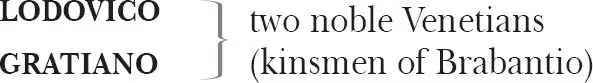

The Tragedy of Othello,
the Moor of Venice
OTHELLO, the Moor (a general in the military service of Venice)
BRABANTIO (a senator) father to Desdemona
CASSIO, an honourable lieutenant
IAGO, a villain (Othello's flagbearer)
RODORIGO, a gulled gentlemen
DUKE of Venice
SENATORS
MONTANO, Governor of Cyprus
GENTLEMEN of Cyprus

SAILORS
CLOWN (servant to Othello)
DESDEMONA (daughter of Brabantio) wife to Othello
EMILIA , wife to Iago
BIANCA , a courtesan
(Officers, Messenger, Herald, Musicians and Attendants)
Act 1
Scene 1 1 / running scene 1
Enter Rodorigo and Iago
RODORIGO Never tell me! 2 I take it much unkindly 3
That thou, Iago, who hast had my purse
As if the strings were thine, shouldst know of this 4 .
IAGO But you'll not hear me: if ever I did dream
Of such a matter, abhor me.
RODORIGO Thou told'st me
Thou didst hold him 5 in thy hate.
IAGO Despise me
If I do not. Three great ones 6 of the city,
In personal suit 7 to make me his lieutenant,
Off-capped 8 to him, and by the faith of man,
I know my price, I am worth no worse a place:
But he, as loving his own pride and purposes,
Evades them with a bombast circumstance 9
Horribly stuffed with epithets of war, 10
Nonsuits my mediators 11 . For 'Certes' 12 , says he,
'I have already chose my officer. '
And what was he?
Forsooth 13 , a great arithmetician 14 ,
One Michael Cassio, a Florentine 15 —
A fellow almost damned in a fair wife 16 —
That never set a squadron 17 in the field
Nor the division of a battle 18 knows
More than a spinster 19 , unless 20 the bookish theoric 21 ,
Wherein the toga 22 'd consuls 23 can propose 24
As masterly as he. Mere prattle 25 without practice
Is all his soldiership. But he, sir, had th'election 26 ;
And I — of whom his 27 eyes had seen the proof
At Rhodes 28 , at Cyprus 29 and on others' grounds,
Christened 30 and heathen — must be beleed 31 and calmed
By debitor and creditor 32 : this counter-caster 33 ,
He — in good time 34 — must his lieutenant be,
And I — bless the mark 35 ! — his Moorship 36 's ancient 37 .
RODORIGO By heaven, I rather would have been his hangman.
IAGO Why, there's no remedy: 'tis the curse of service 38 ;
Preferment 39 goes by letter and affection 40 ,
And not by old gradation 41 , where each second
Stood heir to th'first. Now, sir, be judge yourself
Whether I in any just term 42 am affined 43
To love the Moor.
RODORIGO I would not follow 44 him then.
IAGO O, sir, content you:
I follow him to serve my turn 45 upon him.
We cannot all be masters, nor all masters
Cannot be truly 46 followed. You shall mark 47
Many a duteous and knee-crooking 48 knave
That — doting on his own obsequious bondage —
Wears out his time 49 , much like his master's ass,
For nought but provender 50 , and when he's old, cashiered:
Whip me 51 such honest knaves. Others there are
Who, trimmed 52 in forms and visages of duty,
Keep yet their hearts attending on 53 themselves,
And throwing but shows of service on their lords,
Do well thrive by them,
And when they have lined their coats 54
Do themselves homage 55 : these fellows have some soul,
And such a one do I profess myself. For, sir,
It is as sure as you are Rodorigo,
Were I the Moor, I would not be Iago 56 :
In following him, I follow but myself.
Heaven is my judge, not I for 57 love and duty,
But seeming so, for my peculiar 58 end,
For when my outward action doth demonstrate 59
The native 60 act and figure 61 of my heart
In compliment extern 62 , 'tis not long after
But I will wear my heart upon my sleeve
For daws 63 to peck at: I am not what I am.
RODORIGO What a full 64 fortune does the thick-lips owe 65
If he can carry't 66 thus!
IAGO Call up her father:
Rouse him, make after 67 him, poison his delight,
Proclaim 68 him in the streets, incense her kinsmen,
And though 69 he in a fertile climate dwell,
Plague him with flies: though that 70 his joy be joy,
Yet throw such chances 71 of vexation on't
As it may 72 lose some colour.
RODORIGO Here is her father's house, I'll call aloud.
IAGO Do, with like timorous accent 73 and dire yell
As when, by night and negligence, the fire
Is spied in populous cities.
RODORIGO What, ho, Brabantio! Signior Brabantio, ho!
IAGO Awake! What, ho! Brabantio, thieves, thieves!
Look to your house, your daughter and your bags 74 !
Thieves, thieves!
BRABANTIO What is the reason of this terrible summons?
Above 75
At a window
What is the matter there?
RODORIGO Signior, is all your family within?
IAGO Are your doors locked?
BRABANTIO Why? Wherefore 76 ask you this?
IAGO Sir, you're robbed. For shame, put on your gown 77 !
Your heart is burst, you have lost half your soul:
Even now, now, very now, an old black ram 78
Is tupping 79 your white ewe. Arise, arise!
Awake the snorting 80 citizens with the bell 81 ,
Or else the devil 82 will make a grandsire 83 of you.
Arise, I say!
BRABANTIO What, have you lost your wits?
RODORIGO Most reverend 84 signior, do you know my voice?
BRABANTIO Not I: what are you?
RODORIGO My name is Rodorigo.
BRABANTIO The worser welcome.
I have charged 85 thee not to haunt 86 about my doors:
In honest plainness thou hast heard me say
My daughter is not for thee: and now in madness —
Being full of supper and distemp 'ring draughts 87 —
Upon malicious knavery dost thou come
To star 88 t my quiet.
RODORIGO Sir, sir, sir—
BRABANTIO But thou must needs be sure
My spirits and my place 89 have in their power
To make this bitter to thee.
RODORIGO Patience, good sir.
BRABANTIO What tell'st thou me of robbing?
This is Venice: my house is not a grange 90 .
RODORIGO Most grave 91 Brabantio,
In simple 92 and pure soul I come to you.
IAGO Sir, you are one of those that will not serve God if the devil bid you. Because we come to do you service and you think we are ruffians, you'll have your daughter covered 93 with a Barbary 94 horse 95 : you'll have your nephews 96 neigh to you: you'll have coursers 97 for cousins and jennets 98 for germans 99 .
BRABANTIO What profane 100 wretch art thou?
IAGO I am one, sir, that comes to tell you your daughter and the Moor are making the beast with two backs 101 .
BRABANTIO Thou art a villain.
IAGO You are a senator.
BRABANTIO This thou shalt answer 102 . I know thee, Rodorigo.
RODORIGO Sir, I will answer anything. But I beseech you
If't be your pleasure 103 and most wise consent —
As partly I find it is — that your fair daughter,
At this odd-even 104 and dull watch o'th'night,
Transported with 105 no worse nor better guard
But with 106 a knave 107 of common hire, a gondolier,
To the gross 108 clasps of a lascivious Moor:
If this be known to you and your allowance 109
We then have done you bold and saucy 110 wrongs:
But if you know not this, my manners tell me
We have your wrong rebuke. Do not believe
That, from 111 the sense of all civility 112 ,
I thus would play and trifle with your reverence 113 .
Your daughter — if you have not given her leave 114 —
I say again, hath made a gross 115 revolt,
Tying her duty, beauty, wit 116 and fortunes
In 117 an extravagant and wheeling 118 stranger 119
Of here and everywhere. Straight 120 satisfy yourself:
If she be in her chamber or your house,
Let loose on me the justice of the state
For thus deluding you.
BRABANTIO Strike on the tinder 121 , ho!
Give me a taper 122 ! Call up all my people!
This accident 123 is not unlike my dream:
Belief of it oppresses me already.
Light, I say, light!
Exit [above ]
IAGO Farewell, for I must leave you:
It seems not meet 124 nor wholesome 125 to my place 126
To be producted 127 — as, if I stay, I shall —
Against the Moor, for I do know the state,
However this may gall 128 him with some check 129 ,
Cannot with safety cast 130 him, for he's embarked 131
With such loud reason 132 to the Cyprus wars,
Which even now stands in act 133 , that, for 134 their souls,
Another of his fathom 135 they have none,
To lead their business: in which regard,
Though I do hate him as I do hell-pains.
Yet for necessity of present life 136
I must show out a flag and sign 137 of love,
Which is indeed but sign. That 138 you shall surely find him,
Lead to the Sagittary 139 the raisèd search 140 ,
And there will I be with him. So farewell.
Exit
Enter Brabantio with Servants and torches
BRABANTIO It is too true an evil: gone she is,
And what's to come of my despisèd time 141
Is nought but bitterness. Now, Rodorigo,
Where didst thou see her?— O, unhappy 142 girl!—
With the Moor, say'st thou?— Who would be a father?—
How didst thou know'twas she?— O, she deceives me
Past thought 143 !— What said she to you?— Get more tapers:
Raise all my kindred.— Are they married, think you?
RODORIGO Truly, I think they are.
BRABANTIO O heaven! How got she out? O treason of the blood 144 !
Fathers, from hence trust not your daughters' minds
By what you see them act. Is there not charms 145
By which the property 146 of youth and maidhood 147
May be abused? Have you not read, Rodorigo,
Of some such thing?
RODORIGO Yes, sir, I have indeed.
BRABANTIO Call up my brother.— O, would you had had her!—
Some one way, some another.— Do you know
To Rodorigo
Where we may apprehend her and the Moor?
RODORIGO I think I can discover 148 him, if you please
To get good guard and go along with me.
BRABANTIO Pray you lead on. At every house I'll call:
I may command 149 at most.— Get weapons, ho!
And raise some special officers of might.—
On, good Rodorigo: I will deserve your pains 150 .
Exeunt
Scene 2 151 / running scene 2
Enter Othello, Iago, Attendants with torches
IAGO Though in the trade 152 of war I have slain men,
Yet do I hold it very stuff 153 o 'th'conscience
To do no contrived 154 murder: I lack iniquity 155
Sometime to do me service. Nine or ten times
I had thought t 'have yerked 156 him 157 here under the ribs.
OTHELLO 'Tis better as it is.
IAGO Nay, but he prated 158
And spoke such scurvy 159 and provoking terms
Against your honour
That with the little godliness I have
I did full hard forbear him 160 . But I pray you, sir,
Are you fast 161 married? Be assured of this,
That the magnifico 162 is much beloved,
And hath in his effect 163 a voice 164 potential
As double as the duke's 165 : he will divorce you,
Or put upon you what 166 restraint or grievance 167
The law — with all his might to enforce it on —
Will give him cable 168 .
OTHELLO Let him do his spite;
My services which I have done the signiory 169
Shall out-tongue his complaints. 'Tis yet to know 170 —
Which, when I know that boasting is an honour,
I shall promulgate 171 — I fetch my life and being
From men of royal siege 172 , and my demerits 173
May speak, unbonneted 174 , to as proud 175 a fortune
As this that I have reached. For know, Iago,
But that I love the gentle Desdemona,
I would not my unhousèd 176 free condition
Put into circumscription and confine 177
For the sea's worth 178 . But look, what lights come yond 179 ?
Enter Cassio [and Officers ] with torches
IAGO Those are the raisèd 180 father and his friends:
You were best go in.
OTHELLO Not I: I must be found.
My parts 181 , my title 182 and my perfect 183 soul
Shall manifest me rightly. Is it they?
IAGO By Janus 184 , I think no.
OTHELLO The servants of the duke's? And my lieutenant?—
The goodness of the night upon you, friends!
What is the news?
CASSIO The duke does greet you, general,
And he requires your haste-post-haste 185 appearance
Even on the instant.
OTHELLO What is the matter 186 , think you?
CASSIO Something from Cyprus, as I may divine 187 .
It is a business of some heat 188 : the galleys
Have sent a dozen sequent 189 messengers
This very night at one another's heels,
And many of the consuls, raised and met,
Are at the duke's already. You have been hotly called for:
When, being not at your lodging to be found,
The senate hath sent about three several quests 190
To search you out.
OTHELLO 'Tis well I am found by you.
I will but spend a word here in the house
And go with you.
[Exit ]
CASSIO Ancient, what makes he 191 here?
IAGO Faith 192 , he tonight hath boarded 193 a land caract 194 :
If it prove lawful prize, he's made for ever.
CASSIO I do not understand.
IAGO He's married.
CASSIO To who?
IAGO Marry 195 , to—
[Enter Othello ]
Come, captain, will you go?
OTHELLO Have with you 196 .
CASSIO Here comes another troop to seek for you.
Enter Brabantio, Rodorigo, with Officers and torches
And weapons
IAGO It is Brabantio. General, be advised 197 :
He comes to 198 bad intent.
OTHELLO Holla 199 , stand there!
RODORIGO Signior, it is the Moor.
BRABANTIO Down with him, thief!
They draw
IAGO You, Rodorigo? Come, sir, I am for you.
OTHELLO Keep up 200 your bright swords, for the dew will rust them.
Good signior, you shall more command with years
Than with your weapons.
BRABANTIO O thou foul 201 thief,
Where hast thou stowed 202 my daughter?
Damned as thou art, thou hast enchanted her,
For I'll refer me to 203 all things of sense —
If she in chains of magic were not bound —
Whether a maid so tender 204 , fair 205 and happy,
So opposite 206 to marriage that she shunned
The wealthy curlèd 207 dearling 208 of our nation,
Would ever have — t'incur a general mock 209 —
Run from her guardage 210 to the sooty bosom
Of such a thing as thou: to fear, not to delight.
Judge me the world 211 if'tis not gross in sense 212
That thou hast practised on 213 her with foul charms,
Abused her delicate youth with drugs or minerals 214
That weakens motion 215 : I'll have't disputed on:
'Tis probable and palpable to thinking.
I therefore apprehend and do attach 216 thee
For an abuser of the world, a practiser
Of arts inhibited and out of warrant 217 .—
Lay hold upon him: if he do resist,
Subdue him at his peril.
OTHELLO Hold 218 your hands,
Both you of my inclining 219 and the rest:
Were it my cue to fight, I should have known it
Without a prompter.— Whither will you that I 220 go
To answer this your charge?
BRABANTIO To prison, till fit time
Of law and course of direct session 221
Call thee to answer.
OTHELLO What if I do obey?
How may the duke be therewith satisfied,
Whose messengers are here about my side
Upon some present 222 business of the state
To bring me to him?
OFFICER 'Tis true, most worthy signior:
The duke's in council and your noble self,
I am sure, is sent for.
BRABANTIO How? The duke in council?
In this time of the night? Bring him away;
Mine's not an idle cause: the duke himself,
Or any of my brothers of the state 223 ,
Cannot but feel this wrong as'twere their own:
For if such actions may have passage free 224 ,
Bond-slaves and pagans shall our statesmen be.
Exeunt
Scene 3 225 / running scene 3
Enter Duke, Senators and Officers
With torches
DUKE There's no composition 226 in this news
They sit at a table
That gives them 227 credit.
FIRST SENATOR Indeed, they are disproportioned 228 ;
My letters say a hundred and seven galleys.
DUKE And mine a hundred forty.
SECOND SENATOR And mine two hundred:
But though they jump 229 not on a just account 230 —
As in these cases where the aim 231 reports,
'Tis oft with difference — yet do they all confirm
A Turkish fleet, and bearing up to Cyprus.
DUKE Nay, it is possible enough to judgement:
I do not so secure me in the error
But the main article I do approve
In fearful sense 232 .
SAILOR What ho, what ho, what ho!
Within
Enter Sailor
OFFICER A messenger from the galleys.
DUKE Now? What's the business?
SAILOR The Turkish preparation 233 makes for Rhodes:
So was I bid report here to the state
By Signior Angelo.
[Exit Sailor ]
DUKE How say you by 234 this change?
FIRST SENATOR This cannot be
By no assay 235 of reason: 'tis a pageant 236 ,
To keep us in false gaze 237 . When we consider
Th'importancy 238 of Cyprus to the Turk,
And let ourselves again but understand
That as it more concerns the Turk than Rhodes,
So may he with more facile question bear it,
For that 239 it 240 stands not in such warlike brace 241 ,
But altogether lacks th'abilities 242
That Rhodes is dressed in 243 : if we make thought of this,
We must not think the Turk is so unskilful
To leave that latest 244 which concerns him first,
Neglecting an attempt 245 of ease and gain
To wake and wage 246 a danger profitless.
DUKE Nay, in all confidence, he's not for Rhodes.
OFFICER Here is more news.
Enter a Messenger
MESSENGER The Ottomites 247 , reverend and gracious 248 ,
Steering with due course toward the isle of Rhodes,
Have there injointed them 249 with an after 250 fleet.
FIRST SENATOR Ay, so I thought. How many, as you guess?
MESSENGER Of thirty sail: and now they do restem
Their backward course 251 , bearing with frank 252 appearance
Their purposes toward Cyprus. Signior Montano,
Your trusty and most valiant servitor 253 ,
With his free 254 duty recommends 255 you thus,
And prays you to believe him.
[Exit Messenger ]
DUKE 'Tis certain then for Cyprus.
Marcus Luccicos, is not he in town?
FIRST SENATOR He's now in Florence.
DUKE Write from us to him: post-post-haste 256 , dispatch!
FIRST SENATOR Here comes Brabantio and the valiant Moor.
Enter Brabantio, Othello, Cassio, Iago, Rodorigo and Officers
DUKE Valiant Othello, we must straight employ you
Against the general enemy Ottoman 257 .—
I did not see you: welcome, gentle 258 signior,
To Brabantio
We lacked your counsel and your help tonight.
BRABANTIO So did I yours. Good your grace, pardon me:
Neither my place 259 nor aught 260 I heard of business
Hath raised me from my bed, nor doth the general care 261
Take hold on me, for my particular 262 grief
Is of so floodgate 263 and o'erbearing nature
That it engluts 264 and swallows other sorrows
And it is still itself 265 .
DUKE Why? What's the matter?
BRABANTIO My daughter! O, my daughter!
SENATORS Dead?
BRABANTIO Ay, to me:
She is abused 266 , stol'n from me and corrupted
By spells and medicines bought of mountebanks 267 ;
For nature so prepost'rously 268 to err 269 —
Being not deficient, blind, or lame of sense 270 —
Sans 271 witchcraft could not.
DUKE Whoe'er he be that in this foul proceeding 272
Hath thus beguiled 273 your daughter of herself,
And you of her, the bloody 274 book of law
You shall yourself read in the bitter letter
After your own sense 275 : yea, though our proper 276 son
Stood in your action 277 .
BRABANTIO Humbly I thank your grace.
Here is the man: this Moor, whom now it seems
Your special mandate for the state affairs
Hath hither brought.
ALL We are very sorry for't.
DUKE What, in your own part, can you say to this?
To Othello
BRABANTIO Nothing, but 278 this is so.
OTHELLO Most potent, grave 279 and reverend signiors,
My very noble and approved 280 good masters:
That I have ta'en away this old man's daughter,
It is most true: true I have married her;
The very head and front 281 of my offending
Hath this extent, no more. Rude 282 am I in my speech,
And little blessed with the soft phrase of peace;
For since these arms of mine had seven years' pith 283 284 ,
Till now some nine moons wasted 285 , they have used
Their dearest 286 action in the tented 287 field,
And little of this great world can I speak
More than pertains to feats of broils 288 and battle,
And therefore little shall I grace my cause
In speaking for myself. Yet, by your gracious patience,
I will a round 289 unvarnished tale deliver
Of my whole course of love: what drugs, what charms,
What conjuration 290 and what mighty magic —
For such proceeding I am charged withal 291 —
I won his daughter.
BRABANTIO A maiden never bold,
Of spirit so still and quiet that her motion 292
Blushed at herself: and she, in spite of nature,
Of years 293 , of country, credit 294 , everything,
To fall in love with what she feared to look on!
It is a judgement maimed and most imperfect
That will confess perfection so could err
Against all rules of nature, and must be driven
To find out practices 295 of cunning hell
Why this should be. I therefore vouch 296 again
That with some mixtures 297 pow'rful o'er the blood,
Or with some dram 298 , conjured to this effect,
He wrought 299 upon her.
DUKE To vouch this is no proof,
Without more wider and more overt test 300
Than these thin habits 301 and poor likelihoods
Of modern seeming 302 do prefer 303 against him.
FIRST SENATOR But, Othello, speak:
Did you by indirect 304 and forcèd courses 305
Subdue and poison this young maid's affections?
Or came it by request and such fair question 306
As soul to soul affordeth 307 ?
OTHELLO I do beseech you,
Send for the lady to the Sagittary
And let her speak of me before her father:
If you do find me foul in her report,
The trust, the office 308 I do hold of you
Not only take away, but let your sentence
Even fall upon my life.
DUKE Fetch Desdemona hither.
OTHELLO Ancient, conduct them: you best know the place.—
[Exeunt Iago and Attendants ]
And, till she come, as truly as to heaven
I do confess the vices of my blood 309 ,
So justly 310 to your grave ears I'll present 311
How I did thrive in this fair lady's love,
And she in mine.
DUKE Say it, Othello.
OTHELLO Her father loved me, oft invited me,
Still 312 questioned me the story of my life
From year to year: the battle, sieges, fortune,
That I have passed 313 .
I ran it through, even from my boyish days
To th'very moment that he bade me tell it,
Wherein I spoke of most disastrous 314 chances,
Of moving 315 accidents 316 by flood and field 317 ,
Of hair-breadth scapes 318 i'th'imminent deadly breach 319 ,
Of being taken by the insolent 320 foe
And sold to slavery, of my redemption thence,
And portance 321 in my traveller's history,
Wherein of antres 322 vast and deserts idle 323 ,
Rough quarries, rocks, hills whose head touch heaven,
It was my hint 324 to speak: such was my process 325 .
And of the cannibals that each other eat,
The Anthropophagi 326 and men whose heads
Grew beneath their shoulders: these things to hear 327
Would Desdemona seriously 328 incline,
But still the house-affairs would draw her thence,
Which ever as she could with haste dispatch,
She'd come again, and with a greedy ear
Devour up my discourse: which I observing,
Took once a pliant 329 hour, and found good means
To draw from her a prayer of earnest heart
That I would all my pilgrimage 330 dilate 331 ,
Whereof by parcels 332 she had something heard,
But not intentively 333 . I did consent,
And often did beguile her o 334 f her tears,
When I did speak of some distressful stroke 335
That my youth suffered. My story being done,
She gave me for my pains a world of kisses 336 :
She swore, 'In faith' twas strange, 'twas passing 337 strange,
'Twas pitiful, 'twas wondrous pitiful!'
She wished she had not heard it, yet she wished
That heaven had made her 338 such a man. She thanked me,
And bade me, if I had a friend that loved her,
I should but teach him how to tell my story,
And that would woo her. Upon this hint 339 I spake:
She loved me for the dangers I had passed,
And I loved her that she did pity them.
This only is the witchcraft I have used.
Here comes the lady: let her witness 340 it.
Enter Desdemona, Iago, Attendants
DUKE I think this tale would win my daughter too.
Good Brabantio,
Take up this mangled matter at the best 341 :
Men do their broken weapons rather use
Than their bare hands.
BRABANTIO I pray you hear her speak:
If she confess that she was half the wooer,
Destruction on my head if my bad 342 blame
Light on the man!— Come hither, gentle mistress.
To Desdemona
Do you perceive in all this noble company
Where most you owe obedience?
DESDEMONA My noble father,
I do perceive here a divided duty.
To you I am bound for life and education 343 :
My life and education both do learn 344 me
How to respect you. You are the lord of duty,
I am hitherto 345 your daughter. But here's my husband,
And so much duty as my mother showed
To you, preferring 346 you before her father,
So much I challenge 347 that I may profess
Due to the Moor my lord.
BRABANTIO God be with you! I have done.
Please it 348 your grace, on to the state affairs.
I had rather to adopt a child than get 349 it.
Come hither, Moor:
I here do give thee that with all my heart
Which but 350 thou hast already, with all my heart
I would keep from thee.— For your sake 351 , jewel,
To Desdemona
I am glad at soul I have no other child,
For thy escape 352 would teach me tyranny,
To hang clogs 353 on them.— I have done, my lord.
To the Duke
DUKE Let me speak like yourself 354 , and lay 355 a sentence 356
Which, as a grise 357 or step, may help these lovers.
When remedies are past 358 , the griefs 359 are ended
By seeing the worst, which late 360 on hopes depended.
To mourn a mischief 361 that is past and gone
Is the next 362 way to draw new mischief on.
What cannot be preserved when fortune takes 363 ,
Patience her injury a mock'ry makes 364 .
The robbed that smiles steals something from the thief:
He robs himself that spends 365 a bootless 366 grief.
BRABANTIO So let the Turk of Cyprus us beguile 367 ,
We lose it not, so long as we can smile.
He bears the sentence well that nothing bears
But the free 368 comfort which from thence he hears 369 :
But he bears both the sentence and the sorrow
That, to pay grief, must of poor 370 patience borrow 371 .
These sentences, to sugar or to gall,
Being strong on both sides, are equivocal 372 .
But words are words: I never yet did hear
That the bruisèd 373 heart was pierced 374 through the ears 375 .
I humbly beseech you proceed to th'affairs of state.
DUKE The Turk with a most mighty preparation makes for Cyprus. Othello, the fortitude 376 of the place is best known to you, and though we have there a substitute of most allowed sufficiency 377 , yet opinion 378 , a more sovereign mistress of effects 379 , throws a more safer voice on you 380 : you must therefore be content to slubber 381 the gloss of your new fortunes with this more stubborn 382 and boisterous 383 expedition.
OTHELLO The tyrant custom, most grave senators,
Hath made the flinty 384 and steel couch 385 of war
My thrice-driven 386 bed of down 387 : I do agnize 388
A natural and prompt alacrity 389
I find in hardness 390 , and do undertake
This present wars against the Ottomites.
Most humbly therefore bending to your state 391 ,
I crave fit disposition 392 for my wife,
Due reference of place and exhibition 393 ,
With such accommodation 394 and besort 395
As levels with 396 her breeding.
DUKE Why, at her fathers.
BRABANTIO I will not have it so.
OTHELLO Nor I.
DESDEMONA Nor would I there reside,
To put my father in impatient thoughts
By being in his eye 397 . Most gracious duke,
To my unfolding 398 lend your prosperous ear,
And let me find a charter 399 in your voice
T'assist my simpleness 400 .
DUKE What would you, Desdemona?
DESDEMONA That I love the Moor to live with him,
My downright violence 401 and storm of fortunes 402
May trumpet to the world. My heart's subdued
Even to 403 the very quality 404 of my lord.
I saw Othello's visage in his mind,
And to his honours and his valiant parts 405
Did I my soul and fortunes consecrate 406 :
So that, dear lords, if I be left behind
A moth 407 of peace, and he go to the war,
The rites 408 for why I love him are bereft me,
And I a heavy interim shall support
By his dear 409 absence. Let me go with him.
OTHELLO Let her have your voice 410 .
Vouch 411 with me, heaven, I therefore beg it not
To please the palate of my appetite,
Nor to comply with heat 412 — the young affects 413
In my defunct and proper satisfaction 414 —
But to be free 415 and bounteous to her mind:
And heaven 416 defend your good souls that 417 you think
I will your serious and great business scant 418
When she is with me. No, when light-winged toys 419
Of feathered 420 Cupid seel 421 with wanton dullness 422
My speculative and officed instrument 423 ,
That 424 my disports 425 corrupt and taint my business,
Let housewives make a skillet 426 of my helm 427 ,
And all indign 428 and base adversities
Make head 429 against my estimation 430 !
DUKE Be it as you shall privately determine,
Either for her stay or going: th'affair cries 431 haste,
And speed must answer it.
A SENATOR You must away tonight.
OTHELLO With all my heart.
DUKE At nine i'th'morning here we'll meet again.
Othello, leave some officer behind,
And he shall our commission bring to you,
And such things else of quality and respect 432
As doth import 433 you.
OTHELLO So please your grace, my ancient:
A man he is of honesty and trust:
To his conveyance 434 I assign my wife,
With what else needful your good grace shall think
To be sent after me.
DUKE Let it be so.
Goodnight to everyone.— And, noble signior,
To Brabantio
If virtue no delighted 435 beauty lack,
Your son-in-law is far more fair 436 than black 437 .
A SENATOR Adieu, brave Moor: use Desdemona well.
BRABANTIO Look to her, Moor, if thou hast eyes to see:
She has deceived her father, and may thee.
Exeunt [Duke, Senators and Officers ]
OTHELLO My life upon her faith! Honest 438 Iago,
My Desdemona must I leave to thee:
I prithee let thy wife attend on her,
And bring them after in the best advantage 439 .
Come, Desdemona, I have but an hour
Of love, of worldly matter and direction 440
To spend with thee: we must obey the time 441 .
Exeunt [Othello and Desdemona ]
RODORIGO Iago—
IAGO What say'st thou, noble heart 442 ?
RODORIGO What will I do, think'st thou?
IAGO Why, go to bed and sleep.
RODORIGO I will incontinently 443 drown myself.
IAGO If thou dost, I shall never love thee after. Why, thou silly gentleman?
RODORIGO It is silliness to live when to live is torment: and then have we a prescription 444 to die when death is our physician.
IAGO O villainous! I have looked upon the world for four times seven years, and since I could distinguish betwixt a benefit and an injury, I never found man that knew how to love himself. Ere 445 I would say I would drown myself for the love of a guinea-hen 446 , I would change 447 my humanity with a baboon 448 .
RODORIGO What should I do? I confess it is my shame to be so fond 449 , but it is not in my virtue 450 to amend it.
IAGO Virtue? A fig! 451 'Tis in ourselves that we are thus or thus. Our bodies are our gardens, to the which our wills are gardeners: so that if we will plant nettles or sow lettuce, set 452 hyssop 453 and weed up thyme, supply it with one gender 454 of herbs or distract 455 it with many, either to have it sterile with idleness 456 or manured with industry, why, the power and corrigible authority 457 of this lies in our wills. If the beam 458 of our lives had not one scale of reason to poise 459 another of sensuality, the blood 460 and baseness of our natures would conduct us to most preposterous 461 conclusions 462 : but we have reason to cool our raging motions, our carnal stings 463 , our unbitted 464 lusts, whereof I take this that you call love to be a sect or scion 465 .
RODORIGO It cannot be.
IAGO It is merely a lust of the blood and a permission of the will 466 . Come, be a man. Drown thyself? Drown cats and blind puppies. I have professed me thy friend and I confess me knit 467 to thy deserving with cables of perdurable 468 toughness: I could never better stead 469 thee than now. Put money in thy purse: follow thou the wars: defeat thy favour with an usurped beard 470 : I say, put money in thy purse. It cannot be long that Desdemona should continue her love to the Moor. Put money in thy purse. Nor he his to her: it was a violent commencement in her, and thou shalt see an answerable sequestration 471 . Put but money in thy purse. These Moors are changeable in their wills. Fill thy purse with money. The food that to him now is as luscious as locusts 472 shall be to him shortly as bitter as coloquintida 473 . She must change for youth 474 : when she is sated with his body, she will find the errors of her choice: therefore put money in thy purse. If thou wilt needs damn thyself, do it a more delicate 475 way than drowning. Make 476 all the money thou canst. If sanctimony 477 and a frail vow betwixt an erring 478 barbarian 479 and supersubtle 480 Venetian be not too hard for my wits and all the tribe of hell, thou shalt enjoy her. Therefore make money. A pox 481 of 482 drowning thyself! It is clean out of the way 483 : seek thou rather to be hanged in 484 compassing 485 thy joy 486 than to be drowned and go without her.
RODORIGO Wilt thou be fast 487 to my hopes if I depend on the issue 488 ?
IAGO Thou art 489 sure of me. Go, make money. I have told thee often, and I re-tell thee again and again, I hate the Moor: my cause is hearted 490 ; thine hath no less reason. Let us be conjunctive 491 in our revenge against him: if thou canst cuckoldhim, thou dost thyself a pleasure, me a sport. There are many events in the womb of time which will be delivered. Traverse 492 , go, provide thy money. We will have more of this tomorrow. Adieu.
RODORIGO Where shall we meet i'th'morning?
IAGO At my lodging.
RODORIGO I'll be with thee betimes 493 .
IAGO Go to 494 , farewell. Do you hear, Rodorigo?
As Rodorigo leaves
RODORIGO I'll sell all my land.
Exit
IAGO Thus do I ever make my fool my purse,
For I mine own gained knowledge should profane 495 ,
If I would time expend with such a snipe 496
But 497 for my sport and profit. I hate the Moor:
And it is thought abroad 498 that 'twixt my sheets
He has done my office 499 : I know not if't be true,
But I, for mere suspicion in that kind 500 ,
Will do as if for surety 501 . He holds me well 502 ,
The better shall my purpose work on him.
Cassio's a proper 503 man. Let me see now:
To get his place and to plume up 504 my will
In double knavery. How, how? Let's see:
After some time, to abuse Othello's ears
That he 505 is too familiar with his wife.
He hath a person 506 and a smooth dispose 507
To be suspected, framed 508 to make women false 509 .
The Moor is of a free 510 and open nature,
That thinks men honest that but seem to be so,
And will as tenderly 511 be led by th'nose
As asses are.
I have't: it is engend'red 512 : hell and night
Must bring this monstrous 513 birth to the world's light.
[Exit ]
Act 2
Scene 1 514 / running scene 4
Enter Montano and two Gentlemen
MONTANO What from the cape 515 can you discern at sea?
FIRST GENTLEMAN Nothing at all: it is a high-wrought flood 516 :
I cannot, 'twixt the heaven and the main 517 ,
Descry 518 a sail.
MONTANO Methinks the wind hath spoke aloud at land:
A fuller blast ne'er shook our battlements.
If it hath ruffianed 519 so upon the sea,
What ribs 520 of oak, when mountains melt on them,
Can hold the mortise 521 ? What shall we hear of this?
SECOND GENTLEMAN A segregation 522 of the Turkish fleet:
For do but stand upon the foaming shore,
The chidden 523 billow seems to pelt the clouds:
The wind-shaked surge, with high and monstrous mane 524 ,
Seems to cast water on the burning bear 525
And quench the guards 526 of th'ever-fixèd pole 527 .
I never did like molestation 528 view
On the enchafèd 529 flood.
MONTANO If that the Turkish fleet
Be not ensheltered and embayed 530 , they are drowned:
It is impossible to bear it out.
Enter a [Third ] Gentleman
THIRD GENTLEMAN News, lads! Our wars are done:
The desperate tempest hath so banged the Turks
That their designment 531 halts. A noble ship of Venice
Hath seen a grievous wreck and sufferance 532
On most part of their fleet.
MONTANO How? Is this true?
THIRD GENTLEMAN The ship is here put in,
A Veronesa 533 . Michael Cassio,
Lieutenant to the warlike Moor Othello,
Is come on shore: the Moor himself at sea,
And is in full commission here 534 for Cyprus.
MONTANO I am glad on't: 'tis a worthy governor.
THIRD GENTLEMAN But this same Cassio, though he speak of comfort
Touching 535 the Turkish loss, yet he looks sadly 536
And pray 537 the Moor be safe; for they were parted
With foul and violent tempest.
MONTANO Pray heavens he be,
For I have served him, and the man commands
Like a full 538 soldier. Let's to the seaside, ho!
As well to see the vessel that's come in
As to throw out our eyes for brave Othello,
Even till we make the main and th'aerial blue
An indistinct regard 539 .
THIRD GENTLEMAN Come, let's do so;
For every minute is expectancy
Of more arrivancy 540 .
Enter Cassio
CASSIO Thanks, you the valiant of the warlike isle,
That so approve 541 the Moor. O, let the heavens
Give him defence against the elements,
For I have lost him on a dangerous sea.
MONTANO Is he well shipped?
CASSIO His bark 542 is stoutly timbered, and his pilot 543
Of very expert and approved allowance 544 ;
Therefore my hopes, not surfeited to death,
Stand in bold cure 545 .
[VOICES] A sail, a sail, a sail!
Within
CASSIO What noise?
GENTLEMAN The town is empty: on the brow o'th'sea 546
Stand ranks of people, and they cry 'A sail! '
CASSIO My hopes do shape him for 547 the governor.
A shot is heard
GENTLEMAN They do discharge their shot of courtesy 548 :
Our friends at least.
CASSIO I pray you, sir, go forth
And give us truth who'tis that is arrived.
GENTLEMAN I shall.
Exit
MONTANO But, good lieutenant, is your general wived?
CASSIO Most fortunately: he hath achieved 549 a maid
That paragons 550 description and wild 551 fame 552 ,
One that excels the quirks 553 of blazoning pens,
And in th'essential vesture 554 of creation 555
Does tire the engineer 556 557 .
Enter Gentleman
How now? Who has put in 558 ?
GENTLEMAN 'Tis one Iago, ancient to the general.
CASSIO He's had most favourable and happy speed 559 :
Tempests themselves, high seas and howling winds,
The guttered 560 rocks and congregated sands 561 ,
Traitors ensteeped 562 to enclog 563 the guiltless keel,
As 564 having sense of beauty, do omit 565
Their mortal 566 natures, letting go safely by
The divine Desdemona.
MONTANO What is she?
CASSIO She that I spake of, our great captain's captain,
Left in the conduct of 567 the bold Iago,
Whose footing 568 here anticipates our thoughts
A sennight's 569 speed 570 . Great Jove 571 , Othello guard,
And swell his sail with thine own powerful breath,
That he may bless this bay with his tall 572 ship,
Make love's quick 573 pants in Desdemona's arms,
Give renewed fire to our extincted 574 spirits—
Enter Desdemona, Iago, Rodorigo and Emilia [with Attendants ]
O, behold,
The riches of the ship is come on shore!
Kneels
You men of Cyprus, let her have your knees.—
Hail to thee, lady! And the grace of heaven,
Before, behind thee, and on every hand
Enwheel 575 thee round!
Rises
DESDEMONA I thank you, valiant Cassio.
What tidings can you tell of my lord?
CASSIO He is not yet arrived, nor know I aught
But that he's well and will be shortly here.
DESDEMONA O, but I fear. How lost you company?
CASSIO The great contention of sea and skies
Parted our fellowship 576 .— But, hark! A sail.
[VOICES] A sail, a sail!
Within
A shot is heard
GENTLEMAN They give this greeting to the citadel 577 :
This likewise is a friend.
CASSIO See for the news.
[Exit Gentleman ]
Good ancient, you are welcome.— Welcome, mistress.—
Let it not gall 578 your patience, good Iago,
That I extend my manners: 'tis my breeding 579
That gives me this bold show of courtesy.
Kisses Emilia
IAGO Sir, would she give you so much of her lips
As of her tongue 580 she oft bestows on me,
You would have enough.
DESDEMONA Alas, she has no speech 581 .
IAGO In faith, too much:
I find it still 582 , when I have leave 583 to sleep.
Marry, before 584 your ladyship, I grant,
She puts her tongue a little in her heart
And chides 585 with thinking.
EMILIA You have little cause to say so.
IAGO Come on, come on: you are pictures 586 out of door, bells 587 in your parlours 588 , wild-cats in your kitchens, saints in your injuries, devils being offended, players 589 in your housewifery 590 , and housewives 591 in your beds.
DESDEMONA O, fie upon thee, slanderer!
IAGO Nay, it is true, or else I am a Turk 592 :
You rise to play 593 and go to bed to work 594 .
EMILIA You shall not write my praise.
IAGO No, let me not.
DESDEMONA What wouldst write of me, if thou shouldst praise me?
IAGO O gentle lady, do not put me to't,
For I am nothing if not critical.
DESDEMONA Come on assay 595 . There's one gone to the harbour?
IAGO Ay, madam.
DESDEMONA I am not merry, but I do beguile 596
The thing I am by seeming otherwise.
Come, how wouldst thou praise me?
IAGO I am about it, but indeed my invention 597
Comes from my pate 598 as birdlime 599 does from frieze 600 ,
It plucks out brains and all. But my muse 601 labours 602 ,
And thus she is delivered:
'If she be fair 603 and wise, fairness and wit 604 ,
The one's for use 605 , the other useth it 606 . '
DESDEMONA Well praised! How if she be black 607 and witty?
IAGO 'If she be black, and thereto 608 have a wit,
She'll find a white 609 that shall her blackness 610 fit 611 . '
DESDEMONA Worse and worse.
EMILIA How if fair and foolish?
IAGO 'She never yet was foolish that was fair,
For even her folly 612 helped her to an heir 613 . '
DESDEMONA These are old fond 614 paradoxes to make fools laugh i'th'ale-house. What miserable praise hast thou for her that's foul 615 and foolish?
IAGO 'There's none so foul and foolish thereunto 616 ,
But does foul pranks 617 which fair and wise ones do. '
DESDEMONA O heavy 618 ignorance! Thou praisest the worst best. But what praise couldst thou bestow on a deserving woman indeed, one that, in the authority of her merit, did justly put on the vouch of very malice itself 619 ?
IAGO 'She that was ever fair and never proud,
Had tongue 620 at will 621 and yet was never loud,
Never lacked gold and yet went never gay 622 ,
Fled from her wish and yet said' 'Now I may 623 ' ',
She that being ang'red, her revenge being nigh,
Bade her wrong stay and her displeasure fly,
She that in wisdom never was so frail
To change the cod's head 624 for the salmon's tail 625 626 ,
She that could think and ne'er disclose her mind,
See suitors following and not look behind,
She was a wight 627 , if ever such wights were— '
DESDEMONA To do what?
IAGO 'To suckle 628 fools and chronicle small beer 629 . '
DESDEMONA O, most lame and impotent conclusion! Do not learn of him, Emilia, though he be thy husband. How say you, Cassio? Is he not a most profane and liberal 630 counsellor?
CASSIO He speaks home 631 , madam: you may relish him more in the 632 soldier than in the scholar.
Cassio takes Desdemona's hand and they converse apart
IAGO He takes her by the palm: ay, well said, whisper. With as little a web as this will I ensnare as great a fly as Cassio. Ay, smile upon her, do: I will gyve 633 thee in thine own courtship 634 . You say true, 'tis so, indeed 635 : if such tricks 636 as these strip you out of your lieutenantry, it had been better you had not kissed your three fingers 637 so oft, which now again you are most apt to play the sir 638 in. Very good: well kissed, and excellent courtesy 639 ! 'Tis so, indeed. Yet again your fingers to your lips? Would they were clyster-pipes 640 for your sake!— The Moor! I know his trumpet.
Aside
Trumpet within
CASSIO 'Tis truly so.
DESDEMONA Let's meet him and receive him.
CASSIO Lo 641 , where he comes!
Enter Othello and Attendants
OTHELLO O my fair warrior!
DESDEMONA My dear Othello!
OTHELLO It gives me wonder great as my content
To see you here before me. O my soul's joy!
If after every tempest come such calms,
May the winds blow till they have wakened death!
And let the labouring bark 642 climb hills of seas
Olympus-high 643 and duck again as low
As hell's from heaven! If it were now to die 644 ,
'Twere now to be most happy, for I fear
My soul hath her content so absolute
That not another comfort like to this
Succeeds 645 in unknown fate.
DESDEMONA The heavens forbid
But that our loves and comforts should increase,
Even as our days do grow!
OTHELLO Amen to that, sweet powers!
I cannot speak enough of this content:
It stops 646 me here 647 : it is too much of joy.
And this, and this, the greatest discords be
Kisses her
That e'er our hearts shall make!
IAGO O, you are well tuned now!
Aside
But I'll set down 648 the pegs that make this music,
As honest as I am.
OTHELLO Come, let us to the castle.—
To Desdemona
News, friends: our wars are done, the Turks are drowned.
How does my old acquaintance of this isle?—
Honey, you shall be well desired in Cyprus:
I have found great love amongst them. O my sweet,
I prattle 649 out of fashion 650 , and I dote 651
In mine own comforts 652 . I prithee, good Iago,
Go to the bay and disembark my coffers 653 .
Bring thou the master 654 to the citadel:
He is a good one, and his worthiness
Does challenge 655 much respect.— Come, Desdemona,
Once more, well met at Cyprus.
Exeunt Othello and Desdemona [with Attendants. Iago and Rodorigo remain ]
IAGO Do thou meet me presently at the harbour.—
To an Attendant as he exits
Come hither. If thou be'st valiant—as they say base 656 men being in love have then a nobility in their natures more than is native to them — list 657 me: the lieutenant tonight watches on the court of guard 658 . First, I must tell thee this: Desdemona is directly 659 in love with him.
To Rodorigo
RODORIGO With him? Why, 'tis not possible.
IAGO Lay thy finger thus 660 , and let thy soul be instructed. Mark me 661 with what violence she first loved the Moor, but 662 for bragging and telling her fantastical lies. To love him still for prating 663 ? Let not thy discreet 664 heart think it. Her eye must be fed: and what delight shall she have to look on the devil? When the blood is made dull 665 with the act of sport 666 , there should be a game 667 to inflame it and to give satiety a fresh appetite, loveliness in favour 668 , sympathy 669 in years, manners and beauties, all which the Moor is defective in. Now, for want of these required conveniences 670 , her delicate tenderness will find itself abused, begin to heave the gorge 671 , disrelish 672 and abhor the Moor: very nature will instruct her in it and compel her to some second choice. Now, sir, this granted — as it is a most pregnant 673 and unforced position 674 —who stands so eminent 675 in the degree 676 677 of this fortune as Cassio does? A knave very voluble 678 , no further conscionable 679 than in putting on the mere form of civil and humane 680 seeming 681 for the better compass 682 of his salt 683 and most hidden loose affection? Why, none, why, none. A slipper 684 and subtle 685 knave, a finder of occasion 686 , that has an eye can stamp 687 and counterfeit advantages 688 , though true 689 advantage never present itself: a devilish knave. Besides, the knave is handsome, young, and hath all those requisites in him that folly 690 and green 691 minds look after 692 . A pestilent 693 complete 694 knave, and the woman hath found him already.
RODORIGO I cannot believe that in her: she's full of most blessed condition 695 .
IAGO Blessed fig's-end 696 ! 697 The wine she drinks is made of grapes 698 . If she had been blessed, she would never have loved the Moor. Blessed pudding 699 ! Didst thou not see her paddle 700 with the palm of his hand? Didst not mark that?
RODORIGO Yes, that I did, but that was but courtesy.
IAGO Lechery, by this hand: an index 701 and obscure 702 prologue to the history of lust and foul thoughts. They met so near with their lips that their breaths embraced together. Villainous thoughts, Rodorigo! When these mutabilities 703 so marshal the way, hard 704 at hand comes the master and main 705 exercise 706 , th'incorporate 707 conclusion. Pish! But, sir, be you ruled by me: I have brought you from Venice. Watch you 708 tonight: for the command, I'll lay't upon you 709 . Cassio knows you not. I'll not be far from you. Do you find some occasion to anger Cassio, either by speaking too loud, or tainting his discipline 710 , or from what other course you please, which the time shall more favourably minister 711 .
RODORIGO Well.
IAGO Sir, he's rash and very sudden in choler 712 , and haply 713 may strike at you: provoke him that he may, for even out of that will I cause these 714 of Cyprus to mutiny, whose qualification shall come into no true taste again 715 but by the displanting 716 of Cassio. So shall you have a shorter journey to your desires by the means I shall then have to prefer 717 them, and the impediment most profitably removed, without the which there were no expectation of our prosperity 718 .
RODORIGO I will do this, if you can bring it to any opportunity 719 .
IAGO I warrant 720 thee. Meet me by and by at the citadel: I must fetch his 721 necessaries ashore. Farewell.
RODORIGO Adieu.
Exit
IAGO That Cassio loves her, I do well believe't:
That she loves him, 'tis apt 722 and of great credit 723 .
The Moor — howbeit that I endure him not 724 —
Is of a constant, loving, noble nature,
And I dare think he'll prove to Desdemona
A most dear 725 husband. Now, I do love her too,
Not out of absolute lust — though peradventure 726
I stand accountant 727 for as great a sin —
But partly led to diet 728 my revenge,
For that 729 I do suspect the lusty Moor
Hath leaped into 730 my seat 731 , the thought whereof
Doth — like a poisonous mineral — gnaw my inwards:
And nothing can or shall content my soul
Till I am evened with him, wife for wife,
Or failing so, yet that I put the Moor
At least into a jealousy so strong
That judgement cannot cure. Which thing to do,
If this poor trash of Venice 732 , whom I trace 733
For 734 his quick hunting, stand the putting on 735 ,
I'll have our Michael Cassio on the hip 736 ,
Abuse him to the Moor in the right garb 737 —
For I fear Cassio with my night-cap 738 too —
Make the Moor thank me, love me and reward me
For making him egregiously 739 an ass
And practising upon 740 his peace and quiet
Even to madness. 'Tis here 741 , but yet confused:
Knavery's plain face is never seen till used.
Exit
Scene 2 742 / running scene 5
Enter Othello's Herald with a proclamation
HERALD It is Othello's pleasure, our noble and valiant general, that upon certain tidings now arrived, importing the mere perdition 743 of the Turkish fleet, every man put himself into triumph 744 : some to dance, some to make bonfires, each man to what sport and revels his addition 745 leads him, for besides these beneficial news, it is the celebration of his nuptial 746 . So much was his pleasure should be proclaimed. All offices 747 are open, and there is full liberty of feasting from this present hour of five till the bell have told 748 eleven. Bless the isle of Cyprus and our noble general Othello!
Exit
Scene 3 749 / running scene 6
Enter Othello, Desdemona, Cassio and Attendants
OTHELLO Good Michael, look you to the guard tonight:
Let's teach ourselves that honourable stop 750
Not to outsport discretion 751 .
CASSIO Iago hath direction what to do,
But notwithstanding, with my personal eye
Will I look to't.
OTHELLO Iago is most honest.
Michael, goodnight: tomorrow with your earliest 752
Let me have speech with you.—
Come, my dear love,
To Desdemona
The purchase made, the fruits are to ensue 753 :
That profit's yet to come 'tween me and you.—
Goodnight.
Exeunt [Othello, Desdemona and Attendants ]
Enter Iago
CASSIO Welcome, Iago: we must to the watch.
IAGO Not this hour, lieutenant: 'tis not yet ten o'th'clock. Our general cast 754 us thus early for the love of his Desdemona, who let us not therefore blame: he hath not yet made wanton 755 the night with her, and she is sport for Jove 756 .
CASSIO She's a most exquisite 757 lady.
IAGO And, I'll warrant her, full of game 758 .
CASSIO Indeed, she's a most fresh and delicate 759 creature.
IAGO What an eye she has! Methinks it sounds a parley 760 to provocation.
CASSIO An inviting eye, and yet methinks right modest.
IAGO And when she speaks, is it not an alarum 761 to love?
CASSIO She is indeed perfection.
IAGO Well, happiness to their sheets! Come, lieutenant, I have a stoup 762 of wine, and here without 763 are a brace 764 of Cyprus gallants 765 that would fain 766 have a measure 767 to the health of black Othello.
CASSIO Not tonight, good Iago: I have very poor and unhappy 768 brains for drinking: I could well wish courtesy would invent some other custom of entertainment.
IAGO O, they are our friends. But one cup: I'll drink for you.
CASSIO I have drunk but one cup tonight, and that was craftily 769 qualified too, and behold what innovation 770 it makes here: I am infortunate 771 in the infirmity and dare not task my weakness with any more.
IAGO What, man? 'Tis a night of revels: the gallants desire it.
CASSIO Where are they?
IAGO Here at the door. I pray you call them in.
CASSIO I'll do't, but it dislikes me 772 .
Exit
IAGO If I can fasten but one cup upon him,
With that which he hath drunk tonight already,
He'll be as full of quarrel and offence 773
As my young mistress' dog 774 . Now, my sick 775 fool Rodorigo,
Whom love hath turned almost the wrong side out,
To Desdemona hath tonight caroused 776
Potations pottle-deep 777 ; and he's to watch 778 :
Three else of Cyprus, noble swelling 779 spirits —
That hold their honours in a wary distance 780 ,
The very elements 781 of this warlike isle —
Have I tonight flustered 782 with flowing cups,
And they watch 783 too. Now, 'mongst this flock of drunkards
Am I to put our Cassio in some action 784
That may offend the isle.— But here they come:
Enter Cassio, Montano and Gentlemen
Servants following with wine
If consequence do but approve 785 my dream,
My boat sails freely, both with wind and stream 786 .
CASSIO 'Fore heaven, they have given me a rouse 787 already.
MONTANO Good faith, a little one, not past a pint, as I am a soldier.
IAGO Some wine, ho!
And let me the cannikin 788 clink, clink,
Sings
And let me the cannikin clink.
A soldier's a man,
O, man's life's but a span 789 :
Why, then, let a soldier drink.
Some wine, boys!
CASSIO 'Fore heaven, an excellent song.
IAGO I learned it in England, where indeed they are most potent in potting 790 : your Dane, your German, and your swag-bellied 791 Hollander— Drink, ho!— are nothing to your English.
CASSIO Is your Englishman so exquisite in his drinking?
IAGO Why, he drinks you 792 with facility, your Dane dead drunk: he sweats not to overthrow your Almain 793 : he gives your Hollander a vomit ere the next pottle 794 can be filled.
CASSIO To the health of our general!
MONTANO I am for it, lieutenant, and I'll do you justice 795 .
IAGO O sweet England!
King Stephen 796 was and-a 797 worthy peer,
Sings
His breeches cost him but a crown 798 :
He held 799 them sixpence all too dear,
With that he called the tailor lown 800 .
He was a wight of high renown,
And thou art but of low degree:
'Tis pride that pulls the country down:
Then take thy auld 801 cloak about thee.
Some wine, ho!
CASSIO Why, this is a more exquisite song than the other.
IAGO Will you hear't again?
CASSIO No, for I hold him to be unworthy of his place that does those things. Well, heav'n's above all, and there be souls must be saved, and there be souls must not be saved.
IAGO It's true, good lieutenant.
CASSIO For mine own part — no offence to the general, nor any man of quality 802 — I hope to be saved.
IAGO And so do I too, lieutenant.
CASSIO Ay, but, by your leave, not before me: the lieutenant is to be saved before the ancient. Let's have no more of this: let's to our affairs. Forgive us our sins! Gentlemen, let's look to our business. Do not think, gentlemen, I am drunk: this is my ancient, this is my right hand, and this is my left. I am not drunk now: I can stand well enough, and I speak well enough.
GENTLEMEN Excellent well.
CASSIO Why, very well then: you must not think then, that I am drunk.
Exit
MONTANO To th'platform 803 , masters. Come, let's set the watch 804 .
[Exeunt Gentlemen? ]
Starts to leave
IAGO You see this fellow that is gone before:
To Monta
He's a soldier fit to stand by Caesar
And give direction. And do but see his vice:
'Tis to his virtue a just equinox 805 806 ,
The one as long as th'other. 'Tis pity of 807 him.
I fear the trust Othello puts him in
On some odd time of his infirmity
Will shake this island.
MONTANO But is he often thus?
IAGO 'Tis evermore his prologue to his sleep:
He'll watch the horologe a double set 808 ,
If drink rock not his cradle.
MONTANO It were well
The general were put in mind of it.
Perhaps he sees it not, or his good nature
Prizes the virtue that appears in Cassio
And looks not on his evils: is not this true?
Enter Rodorigo
IAGO How now, Rodorigo?
Aside to Rodorigo
I pray you, after the lieutenant, go.
[Exit Rodorigo ]
MONTANO And'tis great pity that the noble Moor
Should hazard such a place as his own second 809
With one of an ingraft 810 infirmity:
It were an honest action to say so
To the Moor.
IAGO Not I, for this fair island:
I do love Cassio well and would do much
To cure him of this evil.—
Cry within
But, hark! What noise?
Enter Cassio pursuing Rodorigo
CASSIO You rogue! You rascal!
MONTANO What's the matter, lieutenant?
CASSIO A knave 811 teach me my duty?
I'll beat the knave into a twiggen bottle 812 .
RODORIGO Beat me?
CASSIO Dost thou prate, rogue?
Strikes Rodorigo
MONTANO Nay, good lieutenant:
Stops him
I pray you, sir, hold 813 your hand.
CASSIO Let me go, sir,
Or I'll knock you o'er the mazzard 814 .
MONTANO Come, come, you're drunk.
CASSIO Drunk?
They fight
IAGO Away, I say: go out and cry a mutiny.—
Aside to Rodorigo
[Exit Rodorigo ]
Nay, good lieutenant— Alas, gentlemen—
Help, ho!— Lieutenant— Sir Montano— Sir—
Help, masters 815 !— Here's a goodly watch indeed!
Bell rings
Who's that which rings the bell 816 ?— Diablo 817 , ho!
The town will rise 818 . Fie, fie, lieutenant!
You'll be ashamed 819 for ever.
Enter Othello and Attendants
With weapons
OTHELLO What is the matter here?
MONTANO I bleed still: I am hurt to th'death. He dies!
Attacks Cassio?
OTHELLO Hold, for your lives!
IAGO Hold, ho! Lieutenant— Sir Montano— Gentlemen,
Have you forgot all sense of place 820 and duty?
Hold! The general speaks to you. Hold, for shame!
OTHELLO Why, how now, ho! From whence ariseth this?
Are we turned Turks 821 , and to ourselves do that
Which heaven hath forbid the Ottomites 822 ?
For Christian shame, put by this barbarous brawl!
He that stirs next to carve 823 for his own rage
Holds his soul light 824 : he dies 825 upon his motion.—
Silence that dreadful 826 bell: it frights the isle
From her propriety 827 .— What is the matter, masters?
Honest Iago, that looks dead with grieving 828 ,
Speak: who began this? On thy love 829 , I charge thee.
IAGO I do not know. Friends all but now, even now,
In quarter 830 and in terms 831 like bride and groom
Devesting them 832 for bed: and then, but now —
As if some planet had unwitted men 833 —
Swords out, and tilting 834 one at other's breasts
In opposition bloody. I cannot speak
Any beginning to this peevish odds 835 ,
And would 836 in action glorious I had lost
Those legs that brought me to a part of it!
OTHELLO How comes it, Michael, you are thus forgot 837 ?
CASSIO I pray you pardon me: I cannot speak.
OTHELLO Worthy Montano, you were wont 838 to be civil:
The gravity and stillness 839 of your youth
The world hath noted, and your name is great
In mouths of wisest censure 840 . What's the matter
That you unlace 841 your reputation thus
And spend your rich opinion 842 for the name
Of a night-brawler? Give me answer to it.
MONTANO Worthy Othello, I am hurt to danger:
Your officer, Iago, can inform you —
While I spare speech, which something now offends 843 me —
Of all that I do know, nor know I aught 844
By me that's said or done amiss this night,
Unless self-charity be sometimes a vice,
And to defend ourselves it be a sin
When violence assails us.
OTHELLO Now, by heaven,
My blood 845 begins my safer guides 846 to rule,
And passion — having my best judgement collied 847 —
Assays 848 to lead the way: if I once stir,
Or do but lift this arm, the best of you
Shall sink in my rebuke. Give me to know
How this foul rout 849 began, who set it on,
And he that is approved 850 in this offence,
Though he had twinned with me, both at a birth 851 ,
Shall lose me. What, in a town of war 852
Yet wild 853 , the people's hearts brim-full of fear,
To manage 854 855 private and domestic quarrel?
In night, and on the court and guard of safety?
'Tis monstrous 856 . Iago, who began't?
MONTANO If partially affined, or leagued in office 857 ,
To lago
Thou dost deliver more or less than truth,
Thou art no soldier.
IAGO Touch 858 me not so near 859 :
I had rather have this tongue cut from my mouth
Than it should do offence to Michael Cassio,
Yet, I persuade myself, to speak the truth
Shall nothing wrong him. This it is, general:
Indicates Montano
Montano and myself being in speech,
There comes a fellow crying out for help,
And Cassio following him with determined sword
To execute upon him 860 . Sir, this gentleman
Steps in to Cassio and entreats his pause 861 :
Myself the crying fellow did pursue,
Lest by his clamour — as it so fell out —
The town might fall in fright: he, swift of foot,
Outran my purpose, and I returned then rather
For that 862 I heard the clink and fall of swords
And Cassio high in oath 863 , which till tonight
I ne'er might say before. When I came back —
For this was brief — I found them close together
At blow and thrust, even as again they were
When you yourself did part them.
More of this matter cannot I report.
But men are men: the best sometimes forget 864 :
Though Cassio did some little wrong to him 865 ,
As men in rage strike those that wish them best,
Yet surely Cassio, I believe, received
From him that fled some strange indignity 866 ,
Which patience could not pass 867 .
OTHELLO I know, Iago,
Thy honesty and love doth mince 868 this matter,
Making it light to Cassio. Cassio, I love thee,
But never more be officer of mine.
Enter Desdemona, attended
Look, if my gentle love be not raised up.
I'll make thee an example.
DESDEMONA What is the matter, dear?
OTHELLO All's well, sweeting 869 :
Come away to bed.— Sir, for your hurts,
To Montano
Myself will be your surgeon 870 .— Lead him off.
[Exeunt some with Montano ]
Iago, look with care about the town
And silence those whom this vile brawl distracted 871 .—
Come, Desdemona: 'tis the soldiers' life
To have their balmy 872 slumbers waked with strife.
Exeunt [all but Iago and Cassio ]
IAGO What, are you hurt, lieutenant?
CASSIO Ay, past all surgery.
IAGO Marry, heaven forbid!
CASSIO Reputation, reputation, reputation! O, I have lost my reputation! I have lost the immortal part of myself, and what remains is bestial. My reputation, Iago, my reputation!
IAGO As I am an honest man, I had thought you had received some bodily wound; there is more sense 873 in that than in reputation. Reputation is an idle 874 and most false imposition 875 : oft got without merit and lost without deserving: you have lost no reputation at all, unless you repute yourself such a loser. What, man, there are more ways to recover 876 the general again: you are but now cast in his mood 877 — a punishment more in policy than in malice — even so as one would beat his offenceless dog to affright an imperious lion. Sue to 878 him again and he's yours.
CASSIO I will rather sue to be despised than to deceive so good a commander with so slight 879 , so drunken and so indiscreet 880 an officer. Drunk? And speak parrot 881 ? And squabble? Swagger? Swear? And discourse fustian 882 with one's own shadow? O thou invisible spirit of wine, if thou hast no name to be known by, let us call thee devil!
IAGO What 883 was he that you followed with your sword? What had he done to you?
CASSIO I know not.
IAGO Is't possible?
CASSIO I remember a mass of things, but nothing distinctly: a quarrel, but nothing wherefore 884 . O, that men should put an enemy in their mouths to steal away their brains! That we should, with joy, pleasance 885 , revel and applause transform ourselves into beasts!
IAGO Why, but you are now well enough: how came you thus recovered?
CASSIO It hath pleased the devil drunkenness to give place to the devil wrath: one unperfectness shows me another, to make me frankly 886 despise myself.
IAGO Come, you are too severe a moraler 887 . As the time, the place and the condition of this country stands, I could heartily wish this had not befallen: but since it is as it is, mend it 888 for your own good.
CASSIO I will ask him for my place again: he shall tell me I am a drunkard! Had I as many mouths as Hydra 889 , such an answer would stop 890 them all. To be now a sensible man, by and by a fool, and presently a beast! O, strange! Every inordinate 891 cup is unblessed, and the ingredient is a devil.
IAGO Come, come, good wine is a good familiar 892 creature, if it be well used: exclaim no more against it. And, good lieutenant, I think you think I love you.
CASSIO I have well approved it 893 , sir. I drunk?
IAGO You or any man living may be drunk at a time 894 , man. I tell you what you shall do. Our general's wife is now the general: I may say so in this respect, for that 895 he hath devoted and given up himself to the contemplation, mark, and denotement 896 of her parts 897 and graces: confess yourself freely to her, importune 898 her help to put you in your place again. She is of so free 899 , so kind, so apt 900 , so blessed a disposition, she holds it a vice in her goodness not to do more than she is requested. This broken joint between you and her husband entreat her to splinter 901 , and, my fortunes against any lay 902 worth naming, this crack 903 of your love shall grow stronger than it was before.
CASSIO You advise me well.
IAGO I protest 904 , in the sincerity of love and honest kindness.
CASSIO I think it freely 905 , and betimes 906 in the morning I will beseech the virtuous Desdemona to undertake 907 for me: I am desperate of 908 my fortunes if they check 909 me.
IAGO You are in the right. Goodnight, lieutenant: I must to the watch.
CASSIO Goodnight, honest Iago.
Exit Cassio
IAGO And what's he then that says I play the villain?
When this advice is free 910 I give, and honest,
Probal 911 to thinking, and indeed the course
To win the Moor again? For'tis most easy
Th'inclining 912 Desdemona to subdue 913
In any honest suit: she's framed as fruitful 914
As the free elements. And then for her
To win the Moor — were't to renounce his baptism,
All seals 915 and symbols of redeemèd sin —
His soul is so enfettered 916 to her love
That she may make, unmake, do what she list 917 ,
Even as her appetite 918 shall play the god
With his weak function 919 . How am I then a villain
To counsel Cassio to this parallel 920 course
Directly to his good? Divinity 921 of hell!
When devils will the blackest sins put on 922 ,
They do suggest 923 at first with heavenly shows,
As I do now. For whiles this honest fool
Plies 924 Desdemona to repair his fortune,
And she for him pleads strongly to the Moor,
I'll pour this pestilence 925 into his ear,
That she repeals him 926 for her body's lust,
And by how much she strives to do him good,
She shall undo her credit 927 with the Moor.
So will I turn her virtue into pitch 928 ,
And out of her own goodness make the net
That shall enmesh them all.—
Enter Rodorigo
How now, Rodorigo?
RODORIGO I do follow here in the chase 929 , not like a hound that hunts, but one that fills up the cry 930 . My money is almost spent; I have been tonight exceedingly well cudgelled 931 , and I think the issue 932 will be I shall have so much experience for my pains, and so, with no money at all and a little more wit 933 , return again to Venice.
IAGO How poor are they that have not patience!
What wound did ever heal but by degrees?
Thou know'st we work by wit, and not by witchcraft,
And wit depends on dilatory 934 time.
335 Does't not go well? Cassio hath beaten thee,
And thou, by that small hurt, hath cashiered 935 Cassio.
Though other things grow fair against 936 the sun,
Yet fruits that blossom first will first be ripe 937 .
Content thyself awhile. In troth 938 , 'tis morning;
Pleasure and action make the hours seem short.
Retire thee: go where thou art billeted.
Away, I say! Thou shalt know more hereafter.
Nay, get thee gone.
Exit Rodorigo
Two things are to be done:
My wife must move 939 for Cassio to her mistress:
I'll set her on:
Myself the while 940 to draw the Moor apart
And bring him jump 941 when he may Cassio find
Soliciting his wife: ay, that's the way.
Dull not device 942 by coldness and delay.
Exit
Act 3
Scene 1 943 / running scene 7
Enter Cassio, Musicians 944 , Clown
CASSIO Masters, play here: I will content your pains 945 :
Something that's brief, and bid 'Good morrow, general. '
Music
CLOWN Why masters, have your instruments been in Naples 946 , that they speak i'th'nose 947 thus?
MUSICIAN How 948 , sir? How?
CLOWN Are these, I pray you, wind instruments?
MUSICIAN Ay, marry, are they, sir.
CLOWN O, thereby hangs a tail 949 .
MUSICIAN Whereby hangs a tale, sir?
CLOWN Marry, sir, by many a wind instrument 950 that I know. But, masters, here's money for you: and the general so likes your music that he desires you, for love's 951 sake, to make no more noise 952 with it.
Gives money
MUSICIAN Well, sir, we will not.
CLOWN If you have any music that may not be heard, to't again: but, as they say, to hear music the general does not greatly care.
MUSICIAN We have none such, sir.
CLOWN Then put up 953 your pipes in your bag, for I'll away: go, vanish into air, away!
Exeunt Musicians
CASSIO Dost thou hear me, mine honest friend?
CLOWN No, I hear not your honest friend: I hear you.
CASSIO Prithee keep up thy quillets 954 . There's a poor piece of gold for thee: if the gentlewoman 955 that attends the general be stirring 956 , tell her there's one Cassio entreats her a little favour of speech: wilt thou do this?
Gives money
CLOWN She is stirring, sir: if she will stir hither, I shall seem 957 to notify unto her.
Exit Clown
Enter Iago
CASSIO In happy time 958 , Iago.
IAGO You have not been a-bed, then?
CASSIO Why, no: the day had broke
Before we parted. I have made bold, Iago,
To send in to your wife: my suit to her
Is that she will to virtuous Desdemona
Procure me some access.
IAGO I'll send her to you presently 959 ,
And I'll devise a mean 960 to draw the Moor
Out of the way, that your converse and business
May be more free.
Exit
CASSIO I humbly thank you for't.— I never knew
A Florentine 961 more kind and honest.
Enter Emilia
EMILIA Good morrow, good Lieutenant: I am sorry
For your displeasure 962 , but all will sure be well.
The general and his wife are talking of it,
And she speaks for you stoutly: the Moor replies
That he you hurt is of great fame 963 in Cyprus
And great affinity 964 , and that in wholesome 965 wisdom
He might not but refuse you: but he protests he loves you
And needs no other suitor 966 but his likings
To bring you in again.
CASSIO Yet, I beseech you,
If you think fit, or that it may be done,
Give me advantage of 967 some brief discourse
With Desdemon alone.
EMILIA Pray you come in:
I will bestow you where you shall have time
To speak your bosom 968 freely.
CASSIO I am much bound to you.
[Exeunt ]
Scene 2 / running scene 7 continues
Enter Othello, Iago and Gentlemen
OTHELLO These letters give, Iago, to the pilot,
Gives him letters
And by him do my duties 969 to the senate:
That done, I will be walking on the works 970 ,
Repair 971 there to me.
IAGO Well, my good lord, I'll do't.
OTHELLO This fortification, gentlemen, shall we see't?
GENTLEMEN We'll wait upon your lordship.
Exeunt
Scene 3 / running scene 7 continues
Enter Desdemona, Cassio and Emilia
DESDEMONA Be thou assured, good Cassio, I will do
All my abilities in thy behalf.
EMILIA Good madam, do: I warrant 972 it grieves my husband
As if the cause were his.
DESDEMONA O, that's an honest fellow. Do not doubt, Cassio,
But I will have my lord and you again
As friendly as you were.
CASSIO Bounteous madam,
Whatever shall become of Michael Cassio,
He's never anything but your true servant.
DESDEMONA I know't: I thank you. You do love my lord:
You have known him long, and be you well assured
He shall in strangeness 973 stand no further off
Than in a politic 974 distance.
CASSIO Ay, but, lady,
That policy may either last so long,
Or feed upon such nice and waterish 975 diet,
Or breed itself so out of circumstances 976 ,
That I being absent and my place supplied 977 ,
My general will forget my love and service.
DESDEMONA Do not doubt 978 that: before Emilia here
I give thee warrant 979 of thy place. Assure thee,
If I do vow a friendship, I'll perform it
To the last article: my lord shall never rest,
I'll watch him tame 980 and talk him out of patience;
His bed shall seem a school, his board a shrift 981 :
I'll intermingle everything he does
With Cassio's suit. Therefore be merry, Cassio,
For thy solicitor 982 shall rather die
Than give thy cause away 983 .
Enter Othello and Iago
EMILIA Madam, here comes my lord.
CASSIO Madam, I'll take my leave.
DESDEMONA Why, stay and hear me speak.
CASSIO Madam, not now: I am very ill at ease,
Unfit for mine own purposes.
DESDEMONA Well, do your discretion 984 .
Exit Cassio
IAGO Ha? I like not that.
OTHELLO What dost thou say?
IAGO Nothing, my lord; or if — I know not what.
OTHELLO Was not that Cassio parted from my wife?
IAGO Cassio, my lord? No, sure, I cannot think it,
That he would steal away so guilty-like,
Seeing your coming.
OTHELLO I do believe'twas he.
DESDEMONA How now, my lord?
I have been talking with a suitor 985 here,
A man that languishes in your displeasure.
OTHELLO Who is't you mean?
DESDEMONA Why, your lieutenant, Cassio. Good my lord,
If I have any grace 986 or power to move you,
His present reconciliation take 987 ,
For if he be not one that truly loves you,
That errs in ignorance and not in cunning 988 ,
I have no judgement in an honest face.
I prithee call him back.
OTHELLO Went he hence now?
DESDEMONA Ay, sooth 989 ; so humbled
That he hath left part of his grief with me
To suffer with him. Good love, call him back.
OTHELLO Not now, sweet Desdemon: some other time.
DESDEMONA But shall't be shortly?
OTHELLO The sooner, sweet, for you.
DESDEMONA Shall't be tonight at supper?
OTHELLO No, not tonight.
DESDEMONA Tomorrow dinner 990 , then?
OTHELLO I shall not dine at home:
I meet the captains at the citadel.
DESDEMONA Why then, tomorrow night, on Tuesday morn,
On Tuesday noon, or night; on Wednesday morn:
I prithee name the time, but let it not
Exceed three days. In faith, he's penitent:
And yet his trespass 991 , in our common reason 992 —
Save that they say the wars must make example
Out of her best 993 — is not almost 994 a fault
T'incur a private check 995 . When shall he come?
Tell me, Othello: I wonder in my soul
What you would ask me that I should deny,
Or stand so mamm'ring 996 on. What? Michael Cassio,
That came a-wooing with you, and so many a time —
When I have spoke of you dispraisingly —
Hath ta'en your part: to have so much to do
To bring him in 997 ! Trust me, I could do much—
OTHELLO Prithee, no more: let him come when he will:
I will deny thee nothing.
DESDEMONA Why, this is not a boon 998 :
'Tis as I should entreat you wear your gloves,
Or feed on nourishing dishes, or keep you warm,
Or sue to you to do a peculiar 999 profit
To your own person: nay, when I have a suit
Wherein I mean to touch 1000 your love indeed,
It shall be full of poise 1001 and difficult weight 1002 ,
And fearful to be granted.
OTHELLO I will deny thee nothing:
Whereon 1003 , I do beseech thee, grant me this,
To leave me but a little to myself.
DESDEMONA Shall I deny you? No. Farewell, my lord.
OTHELLO Farewell, my Desdemona, I'll come to thee straight 1004 .
DESDEMONA Emilia, come.— Be as your fancies 1005 teach you:
Whate'er you be, I am obedient.
Exeunt [Desdemona and Emilia ]
OTHELLO Excellent wretch! Perdition 1006 catch 1007 my soul,
But I do love thee! And when I love thee not,
Chaos is come again.
IAGO My noble lord—
OTHELLO What dost thou say, Iago?
IAGO Did Michael Cassio, when you wooed my lady,
Know of your love?
OTHELLO He did, from first to last: why dost thou ask?
IAGO But for a satisfaction of my thought,
No further harm.
OTHELLO Why of thy thought, Iago?
IAGO I did not think he had been acquainted with her.
OTHELLO O, yes, and went between us very oft.
IAGO Indeed?
OTHELLO Indeed? Ay, indeed. Discern'st thou aught 1008 in that?
Is he not honest?
IAGO Honest, my lord?
OTHELLO Honest, ay, honest.
IAGO My lord, for aught I know.
OTHELLO What dost thou think?
IAGO Think, my lord?
OTHELLO 'Think, my lord?' Alas, thou echo'st me,
As if there were some monster in thy thought
Too hideous to be shown. Thou dost mean something.
I heard thee say even now, thou lik'st not that,
When Cassio left my wife: what didst not like?
And when I told thee he was of my counsel
Of 1009 my whole course of wooing, thou cried'st 'Indeed? '
And didst contract and purse 1010 thy brow together
As if thou then hadst shut up in thy brain
Some horrible conceit 1011 : if thou dost love me,
Show me thy thought.
IAGO My lord, you know I love you.
OTHELLO I think thou dost,
And for 1012 I know thou'rt full of love and honesty,
And weigh'st thy words before thou giv'st them breath,
Therefore these stops 1013 of thine fright me the more,
For such things in a false 1014 disloyal knave
Are tricks of custom 1015 , but in a man that's just
They're close dilations 1016 , working from the heart
That passion cannot rule 1017 .
IAGO For Michael Cassio,
I dare be sworn I think that he is honest.
OTHELLO I think so too.
IAGO Men should be what they seem,
Or those that be not, would they might seem none 1018 .
OTHELLO Certain, men should be what they seem.
IAGO Why then, I think Cassio's an honest man.
OTHELLO Nay, yet there's more in this!
I prithee speak to me as to thy thinkings,
As thou dost ruminate, and give thy worst of thoughts
The worst of words.
IAGO Good my lord, pardon me:
Though I am bound to every act of duty,
I am not bound to that all slaves are free 1019 .
Utter my thoughts? Why, say they are vile and false,
As where's that palace whereinto foul things
Sometimes intrude not? Who has that breast so pure,
Where no uncleanly 1020 apprehensions
Keep leets 1021 and law-days 1022 and in sessions 1023 sit
With 1024 meditations lawful?
OTHELLO Thou dost conspire against thy friend 1025 , Iago,
If thou but think'st him wronged and mak'st his ear
A stranger to thy thoughts.
IAGO I do beseech you,
Though I perchance am vicious 1026 in my guess —
As I confess it is my nature's plague
To spy into abuses, and oft my jealousy 1027
Shapes faults that are not — that your wisdom,
From one that so imperfectly conceits 1028 ,
Would take no notice, nor build yourself a trouble
Out of his scattering 1029 and unsure observance 1030 .
It were not for your quiet nor your good,
Nor for my manhood, honesty and wisdom,
To let you know my thoughts.
OTHELLO What dost thou mean?
IAGO Good name in man and woman, dear my lord,
Is the immediate 1031 jewel of their souls.
Who steals my purse steals trash, 'tis something, nothing;
'Twas mine, 'tis his, and has been slave to thousands:
But he that filches from me my good name
Robs me of that which not enriches him
And makes me poor indeed.
OTHELLO I'll know thy thoughts.
IAGO You cannot, if 1032 my heart were in your hand,
Nor shall not, whilst'tis in my custody.
OTHELLO Ha?
IAGO O, beware, my lord, of jealousy:
It is the green-eyed monster which doth mock 1033
The meat it feeds on 1034 . That cuckold 1035 lives in bliss
Who, certain of his fate, loves not his wronger 1036 :
But, O, what damnèd minutes tells 1037 he o'er
Who dotes, yet doubts, suspects, yet soundly loves!
OTHELLO O misery!
IAGO Poor and content is rich and rich enough,
But riches fineless 1038 is as poor as winter
To him that ever fears he shall be poor.
Good heaven, the souls of all my tribe defend
From jealousy!
OTHELLO Why? Why is this?
Think'st thou I'd make a life of jealousy,
To follow still the changes of the moon
With fresh suspicions 1039 ? No: to be once in doubt
Is to be resolved. Exchange me for a goat 1040
When I shall turn the business of my soul
To such exsufflicate 1041 and blowed 1042 surmises
Matching thy inference 1043 . 'Tis not to make me jealous
To say my wife is fair, feeds well, loves company,
Is free of speech, sings, plays and dances:
Where virtue is, these are more virtuous:
Nor from mine own weak merits 1044 will I draw
The smallest fear or doubt of her revolt 1045 ,
For she had eyes, and chose me. No, Iago,
I'll see before I doubt; when I doubt, prove;
And on the proof, there is no more but this:
Away at once with love or jealousy.
IAGO I am glad of this, for now I shall have reason
To show the love and duty that I bear you
With franker spirit: therefore, as I am bound,
Receive it from me. I speak not yet of proof:
Look to your wife, observe her well with Cassio,
Wear your eyes thus, not jealous nor secure 1046 .
I would not have your free and noble nature,
Out of self-bounty 1047 , be abused: look to't.
I know our country 1048 disposition well:
In Venice they do let heaven see the pranks 1049
They dare not show their husbands: their best conscience
Is not to leave't undone 1050 , but kept unknown.
OTHELLO Dost thou say so?
IAGO She did deceive her father, marrying you:
And when she seemed to shake and fear your looks,
She loved them most.
OTHELLO And so she did.
IAGO Why, go to 1051 then:
She that so young could give out such a seeming,
To seel 1052 her father's eyes up close as oak 1053 ,
He thought 'twas witchcraft. But I am much to blame:
I humbly do beseech you of your pardon
For too much loving you.
OTHELLO I am bound 1054 to thee for ever.
IAGO I see this hath a little dashed your spirits.
OTHELLO Not a jot, not a jot.
IAGO Trust me, I fear it has.
I hope you will consider what is spoke
Comes from your love 1055 . But I do see you're moved:
I am to pray you not to strain my speech
To grosser 1056 issues 1057 nor to larger 1058 reach 1059
Than to suspicion 1060 .
OTHELLO I will not.
IAGO Should you do so, my lord,
My speech should fall into such vile success 1061
Which my thoughts aimed not. Cassio's my worthy friend.
My lord, I see you're moved.
OTHELLO No, not much moved:
I do not think but Desdemona's honest 1062 .
IAGO Long live she so; and long live you to think so!
OTHELLO And yet, how nature erring from itself—
IAGO Ay, there's the point: as — to be bold with you —
Not to affect 1063 many proposèd matches
Of her own clime, complexion and degree 1064 ,
Whereto we see in all things nature tends—
Foh, one may smell in such a will 1065 most rank 1066 ,
Foul 1067 disproportions 1068 , thoughts unnatural.
But pardon me: I do not in position 1069
Distinctly 1070 speak of her, though I may fear
Her will, recoiling to her better judgement,
May fall to match you with her country forms 1071
And happily 1072 repent.
OTHELLO Farewell, farewell.
If more thou dost perceive, let me know more:
Set on thy wife to observe. Leave me, Iago.
IAGO My lord, I take my leave.
Starts to leave
OTHELLO Why did I marry? This honest creature doubtless
Sees and knows more, much more, than he unfolds.
IAGO My lord, I would I might entreat your honour
Returns
To scan 1073 this thing no further: leave it to time.
Although 'tis fit that Cassio have his place 1074 ,
For sure he fills it up with great ability,
Yet, if you please to put him off awhile,
You shall by that perceive him and his means 1075 .
Note, if your lady strain his entertainment 1076
With any strong or vehement importunity,
Much will be seen in that. In the meantime,
Let me be thought too busy 1077 in my fears —
As worthy cause I have to fear I am —
And hold her free 1078 , I do beseech your honour.
OTHELLO Fear not my government 1079 .
IAGO I once more take my leave.
Exit
OTHELLO This fellow's of exceeding honesty,
And knows all quantities 1080 , with a learnèd spirit,
Of human dealings 1081 . If I do prove her haggard 1082 ,
Though that her jesses 1083 were my dear heartstrings,
I'd whistle her off and let her down the wind 1084
To prey at fortune 1085 . Haply, for 1086 I am black
And have not those soft parts of conversation 1087
That chamberers 1088 have, or for I am declined
Into the vale of years — yet that's not much —
She's gone. I am abused 1089 , and my relief
Must be to loathe her. O curse of marriage!
That we can call these delicate 1090 creatures ours
And not their appetites! I had rather be a toad
And live upon the vapour of a dungeon
Than keep a corner 1091 in the thing I love
For others' uses 1092 . Yet, 'tis the plague to great ones,
Prerogatived 1093 are they less than the base:
'Tis destiny unshunnable, like death:
Even then this forkèd plague 1094 is fated to us
When we do quicken 1095 . Look where she comes:
Enter Desdemona and Emilia
If she be false, heaven mocked 1096 itself!
I'll not believe't.
DESDEMONA How now, my dear Othello?
Your dinner, and the generous 1097 islanders
By you invited, do attend 1098 your presence.
OTHELLO I am to blame.
DESDEMONA Why do you speak so faintly?
Are you not well?
OTHELLO I have a pain upon my forehead 1099 here.
DESDEMONA Why, that's with watching 1100 . 'Twill away again:
Let me but bind it hard, within this hour
Offers her handkerchief
It will be well.
OTHELLO Your napkin 1101 is too little:
He pushes away the handkerchief and it drops
Let it alone. Come, I'll go in with you.
Exit
DESDEMONA I am very sorry that you are not well.
Following him
EMILIA I am glad I have found this napkin:
Picks up the handkerchief
This was her first remembrance 1102 from the Moor:
My wayward husband hath a hundred times
Wooed 1103 me to steal it, but she so loves the token —
For he conjured her 1104 she should ever keep it —
That she reserves 1105 it evermore about her
To kiss and talk to. I'll have the work ta'en out 1106 ,
And give't Iago: what he will do with it
Heaven knows, not I:
I nothing 1107 but to please his fantasy 1108 .
Enter Iago
IAGO How now? What do you here alone?
EMILIA Do not you chide: I have a thing for you.
IAGO You have a thing for me? It is a common 1109 thing 1110 —
EMILIA Ha?
IAGO To have a foolish wife.
EMILIA O, is that all? What will you give me now
For the same handkerchief?
IAGO What handkerchief?
EMILIA What handkerchief?
Why, that the Moor first gave to Desdemona,
That which so often you did bid me steal.
IAGO Hast stol'n it from her?
EMILIA No, but she let it drop by negligence.
And, to th'advantage 1111 , I, being here, took't up.
Look, here 'tis.
IAGO A good wench: give it me.
EMILIA What will you do with't, that you have been
So earnest to have me filch it?
IAGO Why, what is that to you?
Santches it
EMILIA If it be not for some purpose of import,
Give't me again: poor lady, she'll run mad
When she shall lack 1112 it.
IAGO Be not acknown on't 1113 : I have use for it.
Go, leave me.
Exit Emilia
I will in Cassio's lodging loose this napkin
And let him find it. Trifles light as air
Are to the jealous confirmations strong
As proofs of holy writ 1114 : this may do something.
The Moor already changes with my poison:
Dangerous conceits 1115 are in their natures poisons,
Which at the first are scarce found to distaste 1116 ,
But with a little act 1117 upon the blood,
Burn like the mines of sulphur. I did say so:
Enter Othello
At a distance
Look, where he comes! Not poppy 1118 , nor mandragora 1119 ,
Nor all the drowsy syrups of the world
Shall ever medicine thee to that sweet sleep
Which thou owed'st 1120 yesterday.
OTHELLO Ha, ha, false to me?
IAGO Why how now, general? No more of that.
OTHELLO Avaunt 1121 , be gone! Thou hast set me on the rack 1122 :
I swear 'tis better to be much abused
Than but to know't a little.
IAGO How now, my lord?
OTHELLO What sense had I in her stol'n hours of lust?
I saw't not, thought it not, it harmed not me:
I slept the next night well, fed well, was free 1123 and merry:
I found not Cassio's kisses on her lips.
He that is robbed, not wanting 1124 what is stol'n,
Let him not know't and he's not robbed at all.
IAGO I am sorry to hear this.
OTHELLO I had been happy, if the general camp,
Pioneers 1125 and all, had tasted her sweet body,
So 1126 I had nothing known. O, now, for ever
Farewell the tranquil mind; farewell content;
Farewell the plumèd 1127 troops and the big wars
That makes ambition virtue! O, farewell!
Farewell the neighing steed and the shrill trump 1128 ,
The spirit-stirring drum, th'ear-piercing fife 1129 ,
The royal banner, and all quality 1130 ,
Pride 1131 , pomp and circumstance 1132 of glorious war!
And, O, you mortal engines 1133 , whose rude 1134 throats
Th'immortal Jove's dread clamours 1135 counterfeit,
Farewell! Othello's occupation's gone.
IAGO Is't possible, my lord?
OTHELLO Villain, be sure thou prove my love a whore;
Grabs him
Be sure of it: give me the ocular proof,
Or by the worth of mine eternal soul,
Thou hadst been better have been born a dog
Than answer my waked wrath!
IAGO Is't come to this?
OTHELLO Make me to see't, or at the least so prove it
That the probation 1136 bear no hinge nor loop
To hang a doubt on, or woe upon thy life!
IAGO My noble lord—
OTHELLO If thou dost slander her and torture me,
Never pray more: abandon all remorse 1137 ,
On horror's head horrors accumulate,
Do deeds to make heaven weep, all earth amazed 1138 ,
For nothing canst thou to damnation add
Greater than that.
IAGO O grace! O heaven forgive me!
Are you a man? Have you a soul? Or sense?
God b'wi'you 1139 , take mine office. O wretched fool 1140 ,
That lov'st to make thine honesty a vice!
O monstrous world! Take note, take note, O world,
To be direct and honest is not safe.
I thank you for this profit 1141 , and from hence
I'll love no friend, sith 1142 love breeds such offence 1143 .
OTHELLO Nay, stay: thou shouldst be 1144 honest.
IAGO I should be 1145 wise, for honesty's a fool
And loses that 1146 it works for.
OTHELLO By the world,
I think my wife be honest and think she is not:
I think that thou art just and think thou art not.
I'll have some proof. My name, that was as fresh
As Dian 1147 's visage, is now begrimed and black
As mine own face. If there be cords, or knives,
Poison, or fire, or suffocating streams 1148 ,
I'll not endure it. Would I were satisfied!
IAGO I see you are eaten up with passion:
I do repent me that I put it to you.
You would be satisfied?
OTHELLO Would? Nay, and I will.
IAGO And may: but, how? How satisfied, my lord?
Would you the supervision 1149 grossly 1150 gape on?
Behold her topped 1151 ?
OTHELLO Death and damnation! O!
IAGO It were a tedious difficulty, I think,
To bring them to that prospect 1152 : damn them then,
If ever mortal eyes do see them bolster 1153
More 1154 than their own 1155 . What then? How then?
What shall I say? Where's satisfaction 1156 ?
It is impossible you should see this,
Were they as prime 1157 as goats, as hot 1158 as monkeys,
As salt 1159 as wolves 1160 in pride 1161 , and fools 1162 as gross 1163
As ignorance made drunk. But yet, I say,
If imputation and strong circumstances 1164
Which lead directly to the door of truth
Will give you satisfaction, you might have't.
OTHELLO Give me a living reason she's disloyal.
IAGO I do not like the office,
But sith I am entered in this cause so far —
Pricked 1165 to't by foolish honesty and love —
I will go on. I lay 1166 with Cassio lately,
And being troubled with a raging tooth
I could not sleep. There are a kind of men
So loose of soul that in their sleeps will mutter
Their affairs: one of this kind is Cassio.
In sleep I heard him say, 'Sweet Desdemona,
Let us be wary, let us hide our loves':
And then, sir, would he grip and wring my hand,
Cry'O sweet creature!' then kiss me hard,
As if he plucked up kisses by the roots
That grew upon my lips, laid his leg
O'er my thigh, and sigh 1167 , and kiss, and then
Cry, 'Cursèd fate that gave thee to the Moor! '
OTHELLO O monstrous! Monstrous!
IAGO Nay, this was but his dream.
OTHELLO But this denoted a foregone conclusion 1168 :
'Tis a shrewd doubt 1169 , though it be but a dream.
IAGO And this may help to thicken other proofs
That do demonstrate thinly.
OTHELLO I'll tear her all to pieces.
IAGO Nay, yet 1170 be wise: yet we see nothing done,
She may be honest yet. Tell me but this:
Have you not sometimes seen a handkerchief
Spotted with strawberries in your wife's hand?
OTHELLO I gave her such a one: 'twas my first gift.
IAGO I know not that, but such a handkerchief —
I am sure it was your wife's — did I today
See Cassio wipe his beard with.
OTHELLO If it be that—
IAGO If it be that, or any it was hers,
It speaks against her with the other proofs.
OTHELLO O, that the slave 1171 had forty thousand lives:
One is too poor, too weak for my revenge.
Now do I see'tis true. Look here, Iago,
All my fond 1172 love thus do I blow to heaven.
'Tis gone.
Arise, black vengeance, from thy hollow hell!
Yield up, O love, thy crown and hearted 1173 throne
To tyrannous hate! Swell, bosom, with thy fraught 1174 ,
For 'tis of aspics 1175 ' tongues!
IAGO Yet be content.
OTHELLO O, blood, blood, blood!
IAGO Patience, I say: your mind may change.
OTHELLO Never, Iago. Like to the Pontic sea 1176 ,
Whose icy current and compulsive 1177 course
Ne'er feels retiring ebb, but keeps due on
To the Propontic 1178 and the Hellespont 1179 ,
Even so my bloody thoughts with violent pace
Shall ne'er look back, ne'er ebb to humble love,
Till that a capable 1180 and wide revenge
Swallow them up. Now, by yond marble 1181 heaven,
Kneels
In the due reverence of a sacred vow
I here engage 1182 my words.
Attempts to rise
IAGO Do not rise yet.
Kneels
Witness, you ever-burning lights above,
You elements that clip 1183 us round about,
Witness that here Iago doth give up
The execution 1184 of his wit 1185 , hands, heart,
To wronged Othello's service! Let him command,
And to obey shall be in me remorse 1186 ,
What bloody business ever 1187 .
They rise
OTHELLO I greet thy love,
Not with vain thanks, but with acceptance bounteous,
And will upon the instant put thee to't 1188 :
Within these three days let me hear thee say
That Cassio's not alive.
IAGO My friend is dead:
'Tis done at your request. But let her live.
OTHELLO Damn her, lewd minx 1189 ! O, damn her, damn her!
Come, go with me apart: I will withdraw
To furnish me with some swift means of death
For the fair devil. Now art thou my lieutenant.
IAGO I am your own for ever.
Exeunt
Scene 4 1190 / running scene 8
Enter Desdemona, Emilia and Clown
DESDEMONA Do you know, sirrah 1191 , where Lieutenant Cassio lies 1192 ?
CLOWN I dare not say he lies anywhere.
DESDEMONA Why, man?
CLOWN He's a soldier, and for me to say a soldier lies, 'tis stabbing 1193 .
DESDEMONA Go to: where lodges he?
CLOWN To tell you where he lodges is to tell you where I lie.
DESDEMONA Can anything be made of this?
CLOWN I know not where he lodges, and for me to devise a lodging and say he lies here or he lies there, were to lie in mine own throat 1194 .
DESDEMONA Can you inquire him out, and be edified 1195 by report?
CLOWN I will catechize 1196 the world for him, that is, make questions, and by them answer.
DESDEMONA Seek him, bid him come hither: tell him I have moved 1197 my lord on his behalf and hope all will be well.
CLOWN To do this is within the compass of man's wit, and therefore I will attempt the doing it.
Exit Clown
DESDEMONA Where should I lose the handkerchief, Emilia?
EMILIA I know not, madam.
DESDEMONA Believe me, I had rather have lost my purse
Full of crusadoes 1198 : and but 1199 my noble Moor
Is true of mind and made of no such baseness
As jealous creatures are, it were enough
To put him to ill thinking.
EMILIA Is he not jealous?
DESDEMONA Who, he? I think the sun where he was born
Drew 1200 all such humours 1201 from him.
EMILIA Look where he comes.
Enter Othello
DESDEMONA I will not leave him now till Cassio
Be called to him.— How is't with you, my lord?
OTHELLO Well, my good lady.— O, hardness to dissemble 1202 !—
Aside
How do you, Desdemona?
DESDEMONA Well, my good lord.
OTHELLO Give me your hand. This hand is moist, my lady.
DESDEMONA It hath felt no age nor known no sorrow.
OTHELLO This argues fruitfulness 1203 and liberal 1204 heart:
Partially aside?
Hot, hot, and moist. This hand of yours requires
A sequester 1205 from liberty, fasting and prayer,
Much castigation 1206 , exercise 1207 devout,
For here's a young and sweating devil here
That commonly rebels. 'Tis a good hand,
A frank 1208 one.
DESDEMONA You may, indeed, say so,
For'twas that hand that gave away my heart.
OTHELLO A liberal hand: the hearts 1209 of old gave hands,
But our new heraldry is hands, not hearts.
DESDEMONA I cannot speak of this. Come now, your promise.
OTHELLO What promise, chuck 1210 ?
DESDEMONA I have sent to bid Cassio come speak with you.
OTHELLO I have a salt and sorry rheum 1211 offends me:
Lend me thy handkerchief.
DESDEMONA Here, my lord.
Offers him a handkerchief
OTHELLO That which I gave you.
DESDEMONA I have it not about me.
OTHELLO Not?
DESDEMONA No, indeed, my lord.
OTHELLO That's a fault. That handkerchief
Did an Egyptian to my mother give:
She was a charmer, and could almost read
The thoughts of people: she told her, while she kept it,
'Twould make her amiable 1212 and subdue my father
Entirely to her love, but if she lost it
Or made a gift of it, my father's eye
Should hold her loathèd and his spirits should hunt
After new fancies 1213 : she, dying, gave it me,
And bid me, when my fate would have me wived,
To give it her 1214 : I did so; and take heed 1215 on't,
Make it a darling like your precious eye:
To lose't or give't away were such perdition
As nothing else could match.
DESDEMONA Is't possible?
OTHELLO 'Tis true. There's magic in the web 1216 of it:
A sibyl 1217 , that had numbered in the world
The sun to course two hundred compasses 1218 ,
In her prophetic fury 1219 sewed the work:
The worms were hallowed 1220 that did breed the silk,
And it was dyed in mummy 1221 which the skilful
Conserved of 1222 maidens' hearts.
DESDEMONA Indeed? Is't true?
OTHELLO Most veritable: therefore look to't well.
DESDEMONA Then would to heaven that I had never seen't!
OTHELLO Ha? Wherefore?
DESDEMONA Why do you speak so startingly and rash 1223 ?
OTHELLO Is't lost? Is't gone? Speak, is't out o'th'way 1224 ?
DESDEMONA Bless us!
OTHELLO Say you?
DESDEMONA It is not lost, but what an if 1225 it were?
OTHELLO How 1226 ?
DESDEMONA I say it is not lost.
OTHELLO Fetch't, let me see't.
DESDEMONA Why, so I can, but I will not now.
This is a trick to put me from my suit:
Pray you let Cassio be received again.
OTHELLO Fetch me the handkerchief: my mind misgives 1227 .
DESDEMONA Come, come,
You'll never meet a more sufficient 1228 man.
OTHELLO The handkerchief.
DESDEMONA A man that all his time
Hath founded his good fortunes on your love,
Shared dangers with you—
OTHELLO The handkerchief.
DESDEMONA In sooth 1229 , you are to blame.
OTHELLO Away!
Exit Othello
EMILIA Is not this man jealous?
DESDEMONA I ne'er saw this before.
Sure, there's some wonder 1230 in this handkerchief:
I am most unhappy 1231 in the loss of it.
EMILIA 'Tis not a year or two shows us a man:
They are all but stomachs, and we all but food:
They eat us hungerly 1232 , and when they are full
They belch 1233 us.
Enter Iago and Cassio
Look you, Cassio and my husband.
IAGO There is no other way: 'tis she must do't.
And, lo, the happiness 1234 ! Go and importune her.
DESDEMONA How now, good Cassio, what's the news with you?
CASSIO Madam, my former suit: I do beseech you
That by your virtuous 1235 means I may again
Exist, and be a member of his love
Whom I with all the office 1236 of my heart
Entirely honour. I would not be delayed.
If my offence be of such mortal 1237 kind
That nor 1238 my service past, nor present sorrows,
Nor purposed merit in futurity 1239 ,
Can ransom me into his love again,
But 1240 to know so must be my benefit 1241 :
So shall I clothe me in a forced content,
And shut myself up in 1242 some other course,
To fortune's alms 1243 .
DESDEMONA Alas, thrice-gentle Cassio,
My advocation 1244 is not now in tune;
My lord is not my lord; nor should I know him,
Were he in favou 1245 r as in humour 1246 altered.
So help me every spirit sanctified
As I have spoken for you all my best
And stood within the blank 1247 of his displeasure
For my free speech! You must awhile be patient:
What I can do I will, and more I will
Than for myself I dare: let that suffice 1248 you.
IAGO Is my lord angry?
EMILIA He went hence but now,
And certainly in strange unquietness.
IAGO Can he be angry? I have seen the cannon
When it hath blown his ranks 1249 into the air,
And like the devil from his very arm
Puffed his own brother 1250 : and is he angry?
Something of moment 1251 then. I will go meet him:
There's matter in't indeed, if he be angry.
Exit
DESDEMONA I prithee do so. Something, sure, of state 1252 ,
Either from Venice, or some unhatched practice 1253
Made demonstrable here in Cyprus to him,
Hath puddled 1254 his clear spirit: and in such cases
Men's natures wrangle with inferior things,
Though great ones are their object. 'Tis even so,
For let our finger ache, and it indues 1255
Our other healthful members 1256 even to a sense
Of pain. Nay, we must think men are not gods,
Nor of them look for such observancy
As fits the bridal 1257 . Beshrew 1258 me much, Emilia,
I was — unhandsome 1259 warrior as I am —
Arraigning 1260 his unkindness with my soul,
But now I find I had suborned the witness 1261 ,
And he's indicted falsely.
EMILIA Pray heaven it be state matters, as you think,
And no conception nor no jealous toy 1262
Concerning you.
DESDEMONA Alas the day! I never gave him cause.
EMILIA But jealous souls will not be answered so;
They are not ever jealous for the cause,
But jealous for they're jealous: it is a monster
Begot upon 1263 itself, born on itself.
DESDEMONA Heaven keep the monster from Othello's mind!
EMILIA Lady, amen.
DESDEMONA I will go seek him.— Cassio, walk hereabout:
If I do find him fit, I'll move your suit
And seek to effect it to my uttermost.
Exeunt [Desdemona and Emilia ]
CASSIO I humbly thank your ladyship.
Enter Bianca
BIANCA Save 1264 you, friend 1265 Cassio!
CASSIO What make you 1266 from home?
How is't with you, my most fair Bianca?
Indeed, sweet love, I was coming to your house.
BIANCA And I was going to your lodging, Cassio.
What, keep a week away? Seven days and nights?
Eight score eight 1267 hours? And lovers' absent hours
More tedious than the dial 1268 eight score 1269 times?
O weary reck'ning 1270 !
CASSIO Pardon me, Bianca:
I have this while with leaden thoughts been pressed:
But I shall, in a more continuate 1271 time,
Strike off this score 1272 of absence. Sweet Bianca,
Gives her Desdemona's handkerchief
Take me this work out 1273 .
BIANCA O Cassio, whence came this?
This is some token from a newer friend 1274 :
To the felt absence now I feel a cause 1275 .
Is't come to this? Well, well.
CASSIO Go to, woman!
Throw your vile guesses in the devil's teeth,
From whence you have them. You are jealous now
That this is from some mistress, some remembrance;
No, in good troth, Bianca.
BIANCA Why, whose is it?
CASSIO I know not, neither: I found it in my chamber.
I like the work well. Ere it be demanded 1276 —
As like enough it will — I would have it copied:
Take it, and do't, and leave me for this time.
BIANCA Leave you? Wherefore?
CASSIO I do attend here on the general,
And think it no addition, nor my wish,
To have him see me womaned 1277 .
BIANCA Why, I pray you?
CASSIO Not that I love you not.
BIANCA But that you do not love me.
I pray you bring 1278 me on the way a little,
And say if I shall see you soon at night 1279 .
CASSIO 'Tis but a little way that I can bring you,
For I attend here: but I'll see you soon.
BIANCA 'Tis very good: I must be circumstanced 1280 .
Exeunt
Act 4
Scene 1 / running scene 8 continues
Enter Othello and Iago
IAGO Will you think so?
OTHELLO Think so, Iago?
IAGO What, to kiss in private?
OTHELLO An unauthorized kiss!
IAGO Or to be naked with her friend in bed
An hour or more, not meaning any harm?
OTHELLO Naked in bed, Iago, and not mean harm?
It is hypocrisy against the devil 1281 :
They that mean virtuously, and yet do so,
The devil their virtue tempts, and they tempt heaven.
IAGO If they do nothing, 'tis a venial 1282 slip:
But if I give my wife a handkerchief—
OTHELLO What then?
IAGO Why, then, 'tis hers, my lord, and being hers,
She may, I think, bestow't on any man.
OTHELLO She is protectress of her honour too:
May she give that?
IAGO Her honour is an essence that's not seen:
They have it very oft that have it not 1283 .
But, for the handkerchief—
OTHELLO By heaven, I would most gladly have forgot it.
Thou said'st — O, it comes o'er my memory
As doth the raven 1284 o'er the infectious 1285 house,
Boding 1286 to all — he had my handkerchief.
IAGO Ay, what of that?
OTHELLO That's not so good now.
IAGO What if I had said I had seen him do you wrong?
Or heard him say — as knaves be such abroad 1287 ,
Who having by their own importunate 1288 suit,
Or voluntary dotage 1289 of some mistress,
Convincèd 1290 or supplied 1291 them, cannot choose
But they must blab—
OTHELLO Hath he said anything?
IAGO He hath, my lord, but be you well assured,
No more than he'll unswear.
OTHELLO What hath he said?
IAGO Why, that he did 1292 : I know not what he did.
OTHELLO What? What?
IAGO Lie—
OTHELLO With her?
IAGO With her? On her: what you will.
OTHELLO Lie with her? Lie on 1293 her? We say 'Lie on her' when they belie 1294 her. Lie with her! That's fulsome 1295 : handkerchief — confessions — handkerchief! To confess and be hanged for his labour: first to be hanged and then to confess: I tremble at it. Nature would not invest 1296 herself in such shadowing 1297 passion without some instruction 1298 1299 . It is not words that shakes me thus. Pish! Noses 1300 , ears and lips 1301 . Is't possible? Confess? Handkerchief? O devil!
Falls in a trance
IAGO Work on,
My medicine 1302 works! Thus credulous fools are caught,
And many worthy and chaste dames even thus,
All guiltless, meet reproach 1303 .— What, ho? My lord?
My lord, I say! Othello!—
Enter Cassio
How now, Cassio?
CASSIO What's the matter?
IAGO My lord is fall'n into an epilepsy.
This is his second fit: he had one yesterday.
CASSIO Rub him about the temples.
IAGO The lethargy 1304 must have his quiet course:
If not, he foams at mouth and by and by
Breaks out to savage madness. Look he stirs:
Do you withdraw yourself a little while,
He will recover straight. When he is gone,
I would on great occasion 1305 speak with you.
[Exit Cassio ]
How is it, general? Have you not hurt your head?
OTHELLO Dost thou mock me? 1306
IAGO I mock you not, by heaven.
Would you would bear your fortune like a man!
OTHELLO A hornèd 1307 man's a monster and a beast.
IAGO There's many a beast then in a populous city,
And many a civil 1308 monster.
OTHELLO Did he confess it?
IAGO Good sir, be a man.
Think every bearded 1309 fellow that's but yoked 1310
May draw 1311 with you: there's millions now alive
That nightly lie in those unproper 1312 beds
Which they dare swear peculiar 1313 : your case is better.
O, 'tis the spite of hell, the fiend's arch-mock,
To lip 1314 a wanton 1315 in a secure couch 1316
And to suppose her chaste! No, let me know,
And knowing what I am, I know what she shall be.
OTHELLO O, thou art wise: 'tis certain.
IAGO Stand you awhile apart,
Confine yourself but in a patient list 1317 .
Whilst you were here o'erwhelmèd with your grief —
A passion most unsuiting such a man —
Cassio came hither: I shifted him away 1318 ,
And laid good'scuses upon your ecstasy 1319 ,
Bade him anon 1320 return and here speak with me,
The which he promised. Do but encave 1321 yourself
And mark the fleers 1322 , the gibes and notable scorns
That dwell in every region of his face,
For I will make him tell the tale anew,
Where, how, how oft, how long ago and when
He hath and is again to cope 1323 your wife.
I say, but mark his gesture. Marry, patience,
Or I shall say you're all in all in spleen 1324 ,
And nothing of a man.
OTHELLO Dost thou hear, Iago?
I will be found most cunning in my patience,
But — dost thou hear? — most bloody.
IAGO That's not amiss,
But yet keep time 1325 in all. Will you withdraw?
Othello withdraws
Now will I question Cassio of Bianca,
A housewife 1326 that by selling her desires
Buys herself bread and cloth: it is a creature
That dotes on Cassio — as'tis the strumpet 1327 's plague
To beguile 1328 many and be beguiled 1329 by one.
He, when he hears of her, cannot restrain 1330
From the excess of laughter. Here he comes.
Enter Cassio
As he shall smile, Othello shall go mad,
And his unbookish 1331 jealousy must conster 1332
Poor Cassio's smiles, gestures and light 1333 behaviours
Quite in the wrong.— How do you, lieutenant?
CASSIO The worser that you give me the addition 1334
Whose want 1335 even kills me.
IAGO Ply Desdemona well, and you are sure on't 1336 .
Lowers his voice
Now, if this suit lay in Bianca's power,
How quickly should you speed 1337 !
CASSIO Alas, poor caitiff 1338 !
He laughs
OTHELLO Look how he laughs already!
IAGO I never knew woman love man so.
CASSIO Alas, poor rogue, I think, indeed, she loves me.
OTHELLO Now he denies it faintly 1339 , and laughs it out.
IAGO Do you hear, Cassio?
OTHELLO Now he importunes him
To tell it o'er: go to, well said 1340 , well said.
IAGO She gives it out that you shall marry her:
Do you intend it?
CASSIO Ha, ha, ha!
OTHELLO Do ye triumph 1341 , Roman? Do you triumph?
CASSIO I marry? What? A customer? 1342 Prithee bear some charity to my wit 1343 : do not think it so unwholesome 1344 . Ha, ha, ha!
OTHELLO So, so, so, so: they laugh that wins.
IAGO Why, the cry 1345 goes that you marry her.
CASSIO Prithee say true.
IAGO I am a very villain else 1346 .
OTHELLO Have you scored me 1347 ? Well.
CASSIO This is the monkey's own giving out: she is persuaded I will marry her, out of her own love and flattery 1348 , not out of my promise.
OTHELLO Iago beckons me: now he begins the story.
CASSIO She was here even now: she haunts 1349 me in every place. I was the other day talking on the sea-bank 1350 with certain Venetians, and thither comes the bauble 1351 , and falls me 1352 thus about my neck—
Embraces him
OTHELLO Crying, 'O dear Cassio!' as it were: his gesture imports 1353 it.
CASSIO So hangs and lolls and weeps upon me, so shakes and pulls me. Ha, ha, ha!
OTHELLO Now he tells how she plucked 1354 him to my chamber. O, I see that nose 1355 of yours, but not that dog I shall throw it to.
CASSIO Well, I must leave her company.
IAGO Before me, look where she comes.
Enter Bianca
CASSIO 'Tis such another 1356 fitchew 1357 ! Marry, a perfumed one!— What do you mean by this haunting of me?
BIANCA Let the devil and his dam 1358 haunt you! What did you mean by that same handkerchief you gave me even now? I was a fine fool to take it. I must take out the work? A likely piece of work 1359 , that you should find it in your chamber and know not who left it there. This is some minx 1360 's token, and I must take out the work? There, give it your hobby-horse 1361 : wheresoever you had it, I'll take out no work on't.
She gives him
the handkerchier
CASSIO How now, my sweet Bianca? How now? How now?
OTHELLO By heaven, that should 1362 be my handkerchief!
BIANCA If you'll come to supper 1363 tonight, you may: if you will not, come when you are next prepared for.
Exit
IAGO After her, after her.
CASSIO I must: she'll rail 1364 in the streets else.
IAGO Will you sup there?
CASSIO Yes, I intend so.
IAGO Well, I may chance to see you, for I would very fain speak with you.
CASSIO Prithee come. Will you?
IAGO Go to: say no more.
[Exit Cassio ]
OTHELLO How shall I murder him, Iago?
Comes forward
IAGO Did you perceive how he laughed at his vice?
OTHELLO O, Iago!
IAGO And did you see the handkerchief?
OTHELLO Was that mine?
IAGO Yours by this hand: and to see how he prizes the foolish 1365 woman your wife! She gave it him, and he hath giv'n it his whore.
OTHELLO I would have him nine years a-killing. A fine woman! A fair woman! A sweet woman!
IAGO Nay, you must forget that.
OTHELLO Ay, let her rot and perish, and be damned tonight, for she shall not live. No, my heart is turned to stone: I strike it, and it hurts my hand. O, the world hath not a sweeter creature: she might lie by an emperor's side and command him tasks.
IAGO Nay, that's not your way 1366 .
OTHELLO Hang her! I do but say what she is: so delicate with her needle, an admirable musician. O, she will sing the savageness out of a bear. Of so high and plenteous wit and invention 1367 !
IAGO She's the worse for all this.
OTHELLO O, a thousand, a thousand times! And then, of so gentle a condition 1368 !
IAGO Ay, too gentle 1369 .
OTHELLO Nay, that's certain. But yet the pity of it, Iago! O, Iago, the pity of it, Iago!
IAGO If you are so fond over her iniquity, give her patent 1370 to offend, for if it touch 1371 not you, it comes near nobody.
OTHELLO I will chop her into messes 1372 . Cuckold me?
IAGO O, 'tis foul in her.
OTHELLO With mine officer?
IAGO That's fouler.
OTHELLO Get me some poison, Iago, this night: I'll not expostulate 1373 with her, lest her body and beauty unprovide 1374 my mind again: this night, Iago.
IAGO Do it not with poison: strangle her in her bed, even the bed she hath contaminated.
OTHELLO Good, good: the justice of it pleases. Very good.
IAGO And for Cassio, let me be his undertaker 1375 : you shall hear more by midnight.
Enter Lodovico, Desdemona and Attendants
OTHELLO Excellent good.
A trumpet within
What trumpet is that same?
IAGO I warrant something from Venice.
'Tis Lodovico: this comes from the duke.
See, your wife's with him.
LODOVICO Save you, worthy general!
OTHELLO With all my heart, sir.
LODOVICO The duke and the senators of Venice greet you.
Gives a letter
OTHELLO I kiss the instrument of their pleasures 1376 .
Opens letter and reads
DESDEMONA And what's the news, good cousin 1377 Lodovico?
IAGO I am very glad to see you, signior.
Welcome to Cyprus.
LODOVICO I thank you. How does Lieutenant Cassio?
IAGO Lives, sir.
DESDEMONA Cousin, there's fall'n between him and my lord
An unkind breach 1378 : but you shall make all well.
OTHELLO Are you sure of that?
DESDEMONA My lord?
OTHELLO 'This fail you not to do, as you will— '
Reads
LODOVICO He did not call: he's busy in the paper.
Is there division 'twixt my lord and Cassio?
DESDEMONA A most unhappy one: I would do much
T'atone 1379 them, for the love I bear to Cassio.
OTHELLO Fire and brimstone!
DESDEMONA My lord?
OTHELLO Are you wise 1380 ?
DESDEMONA What? Is he angry?
LODOVICO Maybe th'letter moved him,
For, as I think, they do command him home,
Deputing Cassio in his government.
DESDEMONA Trust me, I am glad on't 1381 .
OTHELLO Indeed?
DESDEMONA My lord?
OTHELLO I am glad to see you mad 1382 .
DESDEMONA Why, sweet Othello?
OTHELLO Devil!
Strikes her
DESDEMONA I have not deserved this.
LODOVICO My lord, this would not be believed in Venice,
Though I should swear I saw't. 'Tis very much 1383 :
Make her amends, she weeps.
OTHELLO O devil, devil!
If that the earth could teem 1384 with woman's tears,
Each drop she falls would prove a crocodile 1385 .—
Out of my sight!
DESDEMONA I will not stay to offend you.
Starts to leave
LODOVICO Truly, an obedient lady:
I do beseech your lordship, call her back.
OTHELLO Mistress!
DESDEMONA My lord?
Returns
OTHELLO What would you with her, sir?
LODOVICO Who, I, my lord?
OTHELLO Ay, you did wish that I would make her turn 1386 :
Sir, she can turn, and turn, and yet go on 1387
And turn again: and she can weep, sir, weep:
And she's obedient 1388 , as you say, obedient:
Very obedient.— Proceed you in your tears.—
Concerning this, sir, — O well-painted passion 1389 ! —
I am commanded home.— Get you away:
I'll send for you anon.— Sir, I obey the mandate,
And will return to Venice.— Hence, avaunt!
[Exit Desdemona ]
Cassio shall have my place 1390 . And, sir, tonight
I do entreat that we may sup together:
You are welcome, sir, to Cyprus.— Goats and monkeys 1391 !
Exit
LODOVICO Is this the noble Moor whom our full 1392 senate
Call all in all sufficient 1393 ? Is this the nature
Whom passion could not shake? Whose solid virtue
The shot of accident nor dart of chance
Could neither graze nor pierce?
IAGO He is much changed.
LODOVICO Are his wits safe? Is he not light of brain?
IAGO He's that he is: I may not breathe my censure 1394
What he might be: if what he might he is not,
I would to heaven he were 1395 !
LODOVICO What, strike his wife?
IAGO Faith, that was not so well 1396 , yet would 1397 I knew
That stroke would prove the worst!
LODOVICO Is it his use 1398 ?
Or did the letters work upon his blood
And new-create his fault?
IAGO Alas, alas!
It is not honesty in me to speak
What I have seen and known. You shall observe him,
And his own courses will denote 1399 him so
That I may save my speech: do but go after,
And mark how he continues.
LODOVICO I am sorry that I am deceived in him.
Exeunt
Scene 2 1400 / running scene 9
Enter Othello and Emilia
OTHELLO You have seen nothing then?
EMILIA Nor ever heard, nor ever did suspect.
OTHELLO Yes, you have seen Cassio and she together.
EMILIA But then I saw no harm, and then I heard
Each syllable that breath made up between them.
OTHELLO What, did they never whisper?
EMILIA Never, my lord.
OTHELLO Nor send you out o'th'way?
EMILIA Never.
OTHELLO To fetch her fan, her gloves, her mask, nor nothing?
EMILIA Never, my lord.
OTHELLO That's strange.
EMILIA I durst 1401 , my lord, to wager she is honest,
Lay down my soul at stake 1402 : if you think other,
Remove your thought, it doth abuse your bosom:
If any wretch have put this in your head,
Let heaven requite it with the serpent's curse 1403 !
For if she be not honest, chaste and true,
There's no man happy: the purest of their wives
Is foul as slander.
OTHELLO Bid her come hither: go.
Exit Emilia
She says enough, yet she's a simple bawd 1404
That cannot say as much. This 1405 is a subtle 1406 whore,
A closet lock and key 1407 of villainous secrets:
And yet she'll kneel and pray, I have seen her do't.
Enter Desdemona and Emilia
DESDEMONA My lord, what is your will?
OTHELLO Pray you, chuck, come hither.
DESDEMONA What is your pleasure?
OTHELLO Let me see your eyes: look in my face.
DESDEMONA What horrible fancy's this?
OTHELLO Some of your function 1408 , mistress:
To Emilia
Leave procreants 1409 alone and shut the door:
Cough or cry 'Hem' if anybody come.
Your mystery 1410 , your mystery: nay, dispatch 1411 .
Exit Emilia
DESDEMONA Upon my knee, what doth your speech import?
Kneels
I understand a fury in your words.
OTHELLO Why, what art thou?
DESDEMONA Your wife, my lord, your true and loyal wife.
OTHELLO Come, swear it, damn thyself
Lest, being like one of heaven 1412 , the devils themselves
Should fear to seize thee: therefore be double damned:
Swear thou art honest.
DESDEMONA Heaven doth truly know it.
OTHELLO Heaven truly knows that thou art false as hell.
DESDEMONA To whom, my lord? With whom? How am I false?
OTHELLO Ah Desdemon! Away, away, away!
Weeps
DESDEMONA Alas the heavy 1413 day! Why do you weep?
Am I the motive of these tears, my lord?
If haply 1414 you my father do suspect
An instrument of this your calling back,
Lay not your blame on me: if you have lost him,
I have lost him too.
OTHELLO Had it pleased heaven
To try me with affliction, had they rained
All kind of sores 1415 and shames on my bare head,
Steeped 1416 me in poverty to the very lips,
Given to captivity me and my utmost hopes,
I should have found in some place of my soul
A drop of patience: but, alas, to make me
The fixèd figure 1417 for the time of scorn
To point his slow and moving finger 1418 at!
Yet could I bear that too, well, very well,
But there where I have garnered 1419 up my heart,
Where either I must live, or bear no life,
The fountain 1420 from the which my current runs
Or else dries up: to be discarded thence!
Or keep it as a cistern 1421 for foul toads
To knot and gender 1422 in! Turn thy complexion there 1423 ,
Patience, thou young and rose-lipped cherubin 1424 :
Ay, here look grim 1425 as hell!
DESDEMONA I hope my noble lord esteems me honest 1426 .
OTHELLO O, ay, as summer flies are in the shambles 1427 ,
That quicken even with blowing 1428 . O, thou weed,
Who art so lovely fair and smell'st so sweet
That the sense aches at thee, would thou hadst never been born!
DESDEMONA Alas, what ignorant 1429 sin have I committed 1430 ?
OTHELLO Was this fair paper, this most goodly book,
Made to write 'whore' upon? What committed?
Committed? O, thou public commoner 1431 ,
I should make very forges of my cheeks,
That would to cinders burn up modesty,
Did I but speak thy deeds. What committed?
Heaven stops 1432 the nose at it and the moon 1433 winks 1434 ,
The bawdy wind that kisses all it meets
Is hushed within the hollow mine 1435 of earth
And will not hear't. What committed?
DESDEMONA By heaven, you do me wrong.
OTHELLO Are not you a strumpet 1436 ?
DESDEMONA No, as I am a Christian:
If to preserve this vessel 1437 for my lord
From any other foul unlawful touch
Be not to be a strumpet, I am none.
OTHELLO What, not a whore?
DESDEMONA No, as I shall be saved.
OTHELLO Is't possible?
DESDEMONA O, heaven forgive us!
OTHELLO I cry you 1438 mercy, then:
I took you for that cunning whore of Venice
That married with Othello.— You, mistress,
Calls
Enter Emilia
That have the office opposite 1439 to Saint Peter 1440
And keeps the gate of hell 1441 ! You, you, ay, you!
We have done our course 1442 : there's money for your pains.
I pray you turn the key and keep our counsel 1443 .
Exit
Gives money
EMILIA Alas, what does this gentleman conceive 1444 ?
How do you, madam? How do you, my good lady?
DESDEMONA Faith, half asleep 1445 .
EMILIA Good madam, what's the matter with my lord?
DESDEMONA With who?
EMILIA Why, with my lord, madam.
DESDEMONA Who is thy lord?
EMILIA He that is yours, sweet lady.
DESDEMONA I have none. Do not talk to me, Emilia:
I cannot weep, nor answers have I none
But what should go by water 1446 . Prithee, tonight
Lay on my bed my wedding sheets: remember,
And call thy husband hither.
EMILIA Here's a change indeed!
Exit
DESDEMONA 'Tis meet 1447 I should be used 1448 so, very meet.
How have I been behaved, that he might stick
The small'st opinion on my least misuse? 1449
Enter Iago and Emilia
IAGO What is your pleasure, madam?
How is't with you?
DESDEMONA I cannot tell. Those that do teach young babes
Do it with gentle means and easy tasks:
He might have chid me so, for, in good faith,
I am a child to chiding 1450 .
IAGO What's the matter, lady?
EMILIA Alas, Iago, my lord hath so bewhored her 1451 ,
Thrown such despite 1452 and heavy 1453 terms upon her,
That true hearts cannot bear it.
DESDEMONA Am I that name, Iago?
IAGO What name, fair lady?
DESDEMONA Such as she said my lord did say I was.
EMILIA He called her whore: a beggar in his drink
Could not have laid such terms upon his callet 1454 .
IAGO Why did he so?
DESDEMONA I do not know: I am sure I am none such.
Weeps
IAGO Do not weep, do not weep. Alas the day!
EMILIA Hath she forsook 1455 so many noble matches?
Her father? And her country? And her friends?
To be called whore? Would it not make one weep?
DESDEMONA It is my wretched fortune.
IAGO Beshrew 1456 him for't!
How comes this trick 1457 upon him?
DESDEMONA Nay, heaven doth know.
EMILIA I will be hanged if some eternal villain,
Some busy and insinuating rogue,
Some cogging 1458 , cozening 1459 slave, to get some office,
Have not devised this slander: I will be hanged else.
IAGO Fie, there is no such man: it is impossible.
DESDEMONA If any such there be, heaven pardon him!
EMILIA A halter 1460 pardon him! And hell gnaw his bones!
Why should he call her whore? Who keeps her company?
What place? What time? What form 1461 ? What likelihood?
The Moor's abused by some most villainous knave,
Some base notorious knave, some scurvy 1462 fellow.
O heavens, that such companions 1463 thou'dst unfold 1464 ,
And put in every honest hand a whip
To lash the rascals naked through the world
Even from the east to th'west!
IAGO Speak within door 1465 .
EMILIA O, fie upon them! Some such squire 1466 he was
That turned your wit the seamy side without 1467
And made you to suspect me with the Moor.
IAGO You are a fool: go to.
DESDEMONA Alas, Iago,
What shall I do to win my lord again?
Good friend, go to him, for, by this light of heaven,
I know not how I lost him. Here I kneel:
Kneels
If e'er my will did trespass gainst his love,
Either in discourse 1468 of thought or actual deed,
Or that 1469 mine eyes, mine ears, or any sense
Delighted them, or any other form,
Or that I do not yet 1470 , and ever did,
And ever will — though he do shake me off
To beggarly divorcement — love him dearly,
Comfort forswear 1471 me! Unkindness may do much,
And his unkindness may defeat my life,
But never taint my love. I cannot say 'whore':
It does abhor 1472 me now I speak the word:
To do the act that might the addition 1473 earn
Not the world's mass of vanity 1474 could make me.
IAGO I pray you be content: 'tis but his humour 1475 .
The business of the state does him offence.
DESDEMONA If 'twere no other—
IAGO It is but so, I warrant.
Trumpets within
Hark, how these instruments summon to supper!
The messengers of Venice stays 1476 the meat 1477 :
Go in, and weep not: all things shall be well.
Exeunt Desdemona and Emilia
Enter Rodorigo
How now, Rodorigo?
RODORIGO I do not find that thou deal'st justly with me.
IAGO What in the contrary?
RODORIGO Every day thou daff'st me 1478 with some device 1479 , Iago, and rather, as it seems to me now, keep'st from me all conveniency 1480 than suppliest me with the least advantage of hope. I will indeed no longer endure it, nor am I yet persuaded to put up 1481 in peace what already I have foolishly suffered.
IAGO Will you hear me, Rodorigo?
RODORIGO I have heard too much, and your words and performances are no kin together.
IAGO You charge me most unjustly.
RODORIGO With naught but truth: I have wasted myself out of my means. The jewels you have had from me to deliver Desdemona would half have corrupted a votarist 1482 : you have told me she hath received them and returned me expectations and comforts 1483 of sudden respect 1484 and acquaintance 1485 , but I find none.
IAGO Well, go to, very well.
RODORIGO 'Very well'! 'Go to'! I cannot go to 1486 , man, nor 'tis not very well: nay, I think it is scurvy, and begin to find myself fopped 1487 in it.
IAGO Very well.
RODORIGO I tell you 'tis not very well. I will make myself known to Desdemona: if she will return me my jewels, I will give over my suit and repent my unlawful solicitation: if not, assure yourself I will seek satisfaction 1488 of you.
IAGO You have said 1489 now.
RODORIGO Ay, and said nothing but what I protest intendment 1490 of doing.
IAGO Why, now I see there's mettle 1491 in thee, and even from this instant do build on thee a better opinion than ever before. Give me thy hand, Rodorigo: thou hast taken against me a most just exception 1492 , but yet I protest I have dealt most directly 1493 in thy affair.
RODORIGO It hath not appeared.
IAGO I grant indeed it hath not appeared, and your suspicion is not without wit and judgement. But, Rodorigo, if thou hast that in thee indeed which I have greater reason to believe now than ever — I mean purpose, courage and valour — this night show it: if thou the next night following enjoy not Desdemona, take me from this world with treachery and devise engines 1494 for my life.
RODORIGO Well, what is it? Is it within reason and compass 1495 ?
IAGO Sir, there is especial commission come from Venice to depute Cassio in Othello's place.
RODORIGO Is that true? Why then Othello and Desdemona return again to Venice.
IAGO O, no. He goes into Mauritania 1496 and taketh away with him the fair Desdemona, unless his abode be lingered 1497 here by some accident, wherein none can be so determinate 1498 as the removing of Cassio.
RODORIGO How do you mean, removing him?
IAGO Why, by making him uncapable of Othello's place: knocking out his brains.
RODORIGO And that you would have me to do?
IAGO Ay, if you dare do yourself a profit and a right. He sups tonight with a harlotry 1499 , and thither will I go to him. He knows not yet of his honourable fortune: if you will watch his going thence — which I will fashion to fall out 1500 between twelve and one — you may take him at your pleasure. I will be near to second 1501 your attempt, and he shall fall between us. Come, stand not amazed 1502 at it, but go along with me: I will show you such a necessity in his death that you shall think yourself bound to put it on him. It is now high 1503 suppertime, and the night grows to waste 1504 : about it.
RODORIGO I will hear further reason for this.
IAGO And you shall be satisfied.
Exeunt
Scene 3 / running scene 9 continues
Enter Othello, Lodovico, Desdemona, Emilia and Attendants
LODOVICO I do beseech you, sir, trouble yourself no further.
OTHELLO O, pardon me: 'twill do me good to walk.
LODOVICO Madam, goodnight. I humbly thank your ladyship.
DESDEMONA Your honour is most welcome.
OTHELLO Will you walk, sir?— O, Desdemona!
DESDEMONA My lord?
OTHELLO Get you to bed on th'instant, I will be returned forthwith. Dismiss your attendant there: look't be done.
Exeunt [Othello, Lodovico and Attendants ]
DESDEMONA I will, my lord.
EMILIA How goes it now? He looks gentler than he did.
DESDEMONA He says he will return incontinent 1505 ,
And hath commanded me to go to bed,
And bid me to dismiss you.
EMILIA Dismiss me?
DESDEMONA It was his bidding: therefore, good Emilia,
Give me my nightly wearing 1506 , and adieu.
We must not now displease him.
EMILIA I would you had never seen him.
DESDEMONA So would not I: my love doth so approve 1507 him
That even his stubbornness 1508 , his checks, his frowns —
Prithee unpin me 1509 — have grace and favour.
EMILIA I have laid those sheets you bade me on the bed.
DESDEMONA All's one 1510 .— Good father 1511 , how foolish are our minds!—
If I do die before, prithee 1512 shroud 1513 me
In one of these same sheets.
EMILIA Come, come, you talk 1514 .
DESDEMONA My mother had a maid called Barbary 1515 :
She was in love, and he she loved proved mad 1516
And did forsake her. She had a song of 'willow 1517 ',
An old thing 'twas, but it expressed her fortune,
And she died singing it: that song tonight
Will not go from my mind: I have much to 1518 do
But to go hang my head all at one side
And sing it like poor Barbary. Prithee dispatch.
EMILIA Shall I go fetch your nightgown?
DESDEMONA No, unpin me here.
This Lodovico is a proper 1519 man.
EMILIA A very handsome man.
DESDEMONA He speaks well.
EMILIA I know a lady in Venice would have walked barefoot to Palestine for a touch of his nether 1520 lip.
DESDEMONA The poor soul sat singing by a sycamore 1521 tree,
Sings
Sing all a green willow:
Her hand on her bosom, her head on her knee,
Sing willow, willow, willow.
The fresh streams ran by her, and murmured her moans,
Sing willow, willow, willow:
Her salt tears fell from her, and softened the stones,
Sing willow—
Lay by these 1522 —
To Emilia
Willow, willow—
Sings
Prithee, hie thee 1523 : he'll come anon—
Sing all a green willow must be my garland.
Sings
Let nobody blame him, his scorn I approve—
Nay, that's not next.— Hark, who is't that knocks?
EMILIA It's the wind.
DESDEMONA I called my love false love, but what said he then?
Sings
Sing willow, willow, willow:
If I court more women, you'll couch 1524 with more men!—
So, get thee gone, goodnight. Mine eyes do itch:
Doth that bode 1525 weeping?
EMILIA 'Tis neither here nor there.
DESDEMONA I have heard it said so. O, these men, these men!
Dost thou in conscience think — tell me, Emilia —
That there be women do abuse 1526 their husbands
In such gross kind 1527 ?
EMILIA There be some such, no question.
DESDEMONA Wouldst thou do such a deed for all the world?
EMILIA Why, would not you?
DESDEMONA No, by this heavenly light!
EMILIA Nor I neither by this heavenly light:
I might do't as well i'th'dark.
DESDEMONA Wouldst thou do such a deed for all the world?
EMILIA The world's a huge thing: it is a great price 1528
For a small vice.
DESDEMONA In troth, I think thou wouldst not.
EMILIA In troth, I think I should, and undo't when I had done. Marry, I would not do such a thing for a joint-ring 1529 , nor for measures of lawn 1530 , nor for gowns, petticoats, nor caps, nor any petty exhibition 1531 : but for all the whole world, why, who would not make her husband a cuckold to make him a monarch? I should venture 1532 purgatory for't.
DESDEMONA Beshrew me, if I would do such a wrong
For the whole world.
EMILIA Why, the wrong is but a wrong i'th'world, and having the world for your labour, 'tis a wrong in your own world, and you might quickly make it right.
DESDEMONA I do not think there is any such woman.
EMILIA Yes, a dozen, and as many to th'vantage 1533 as
Would store 1534 the world they played 1535 for.
But I do think it is their husbands' faults
If wives do fall 1536 . Say that they slack their duties 1537
And pour our treasures into foreign laps 1538 ,
Or else break out in peevish 1539 jealousies,
Throwing restraint upon us, or say they strike us,
Or scant 1540 our former having 1541 in despite 1542 :
Why, we have galls 1543 , and though we have some grace 1544 ,
Yet have we some revenge 1545 . Let husbands know
Their wives have sense like them: they see and smell
And have their palates both for sweet and sour,
As husbands have. What is it that they do
When they change 1546 us for others? Is it sport 1547 ?
I think it is. And doth affection 1548 breed it?
I think it doth. Is't frailty that thus errs?
It is so too. And have not we affections?
Desires for sport? And frailty, as men have?
Then let them use 1549 us well: else let them know,
The ills we do, their ills instruct us so.
DESDEMONA Goodnight, goodnight: heaven me such uses 1550 send
Not to pick bad from bad, but by bad mend 1551 !
Exeunt
Act 5
Scene 1 1552 / running scene 10
Enter Iago and Rodorigo
IAGO Here, stand behind this bulk 1553 : straight will he come.
Wear thy good rapier bare 1554 , and put it home 1555 .
Quick, quick, fear nothing; I'll be at thy elbow.
It makes us or it mars 1556 us: think on that,
And fix most firm thy resolution.
RODORIGO Be near at hand: I may miscarry 1557 in't.
IAGO Here, at thy hand: be bold, and take thy stand.
Conceals himself
RODORIGO I have no great devotion to the deed,
And yet he hath given me satisfying reasons.
'Tis but a man gone. Forth, my sword: he dies.
Draws
IAGO I have rubbed this young quat 1558 almost to the sense 1559 ,
Aside
And he grows angry 1560 . Now, whether he kill Cassio
Or Cassio him, or each do kill the other,
Every way makes my gain. Live Rodorigo 1561 ,
He calls me to a restitution large
Of gold and jewels that I bobbed 1562 from him
As gifts 1563 to Desdemona:
It must not be. If Cassio do remain,
He hath a daily beauty in his life
That makes me ugly: and besides, the Moor
May unfold 1564 me to him: there stand I in much peril.
No, he must die. But so: I heard him coming.
Enter Cassio
RODORIGO I know his gait, 'tis he.— Villain, thou diest!
Makes a sword-thrust
CASSIO That thrust had been mine enemy indeed,
But that my coat 1565 is better than thou know'st:
I will make proof 1566 of thine.
Draws and wounds Rodorigo
RODORIGO O, I am slain!
He falls; lago comes forward and stabs Cassio on the leg
[Exit Iago ]
CASSIO I am maimed for ever. Help, ho! Murder, murder!
He falls
Enter Othello
OTHELLO The voice of Cassio: Iago keeps his word.
RODORIGO O, villain that I am!
OTHELLO It is even so.
CASSIO O, help, ho! Light! A surgeon!
OTHELLO 'Tis he. O brave 1567 Iago, honest and just,
That hast such noble sense of thy friend's wrong!
Thou teachest me.— Minion 1568 , your dear lies dead,
And your unblest 1569 fate hies 1570 . Strumpet, I come:
For of 1571 my heart those charms, thine eyes, are blotted,
Thy bed, lust-stained, shall with lust's blood be spotted.
Exit Othello
Enter Lodovico and Gratiano
CASSIO What, ho! No watch? No passage 1572 ? Murder, murder!
GRATIANO 'Tis some mischance: the voice is very direful 1573 .
CASSIO O, help!
LODOVICO Hark!
RODORIGO O wretched villain!
LODOVICO Two or three groan. 'Tis heavy 1574 night;
These may be counterfeits: let's think't unsafe
To come in to 1575 the cry without more help.
RODORIGO Nobody come: then shall I bleed to death.
Enter Iago
With a light and weapons
LODOVICO Hark!
GRATIANO Here's one comes in his shirt 1576 , with light and weapons.
IAGO Who's there? Whose noise is this that cries on murder?
LODOVICO We do not know.
IAGO Do not you hear a cry?
CASSIO Here, here! For heaven sake, help me!
IAGO What's the matter?
GRATIANO This is Othello's ancient, as I take it.
To Lodovico
LODOVICO The same indeed: a very valiant fellow.
To Gratiano
IAGO What are you here that cry so grievously?
CASSIO Iago? O, I am spoiled 1577 , undone 1578 by villains!
Give me some help.
IAGO O me, lieutenant! What villains have done this?
CASSIO I think that one of them is hereabout,
And cannot make away.
IAGO O treacherous villains!—
To Lodovico and Gratiano
What are you there? Come in, and give some help.
RODORIGO O, help me there!
CASSIO That's one of them.
IAGO O murd 'rous slave! O villain!
Stabs Rodorigo
RODORIGO O damned Iago! O inhuman dog!
IAGO Kill men i'th'dark!— Where be these bloody thieves?—
How silent is this town!— Ho! Murder, murder!—
What may you be? Are you of good or evil?
To Lodovico and Gratiano
LODOVICO As you shall prove 1579 us, praise 1580 us.
IAGO Signior Lodovico?
LODOVICO He, sir.
IAGO I cry you mercy. Here's Cassio hurt by villains.
GRATIANO Cassio?
IAGO How is't, brother?
To Cassio
CASSIO My leg is cut in two.
IAGO Marry, heaven forbid!—
Light, gentlemen. I'll bind it with my shirt.
Enter Bianca
BIANCA What is the matter, ho? Who is't that cried?
IAGO Who is't that cried?
BIANCA O my dear Cassio! My sweet Cassio! O Cassio,
Cassio, Cassio!
IAGO O notable strumpet! Cassio, may you suspect 1581
Who they should be that have thus mangled you?
CASSIO No.
GRATIANO I am sorry to find you thus: I have been to seek you.
IAGO Lend me a garter 1582 . So.— O, for a chair
To bear him easily hence!
BIANCA Alas, he faints! O Cassio, Cassio, Cassio!
IAGO Gentlemen all, I do suspect this trash 1583
To be a party in this injury.—
Patience awhile, good Cassio.— Come, come;
Lend me a light.
Shines light on Rodorigo
Know we this face or no?
Alas, my friend and my dear countryman
Rodorigo? No. Yes, sure: yes, 'tis Rodorigo.
GRATIANO What, of Venice?
IAGO Even he, sir: did you know him?
GRATIANO Know him? Ay.
IAGO Signior Gratiano? I cry your gentle pardon:
These bloody accidents 1584 must excuse my manners
That so neglected you.
GRATIANO I am glad to see you.
IAGO How do you, Cassio?— O, a chair, a chair!
GRATIANO Rodorigo?
IAGO He, he'tis he.—
O, that's well said 1585 : the chair!
Attendants bring in a chair
Some good man bear him carefully from hence:
I'll fetch the general's surgeon.—
For 1586 you, mistress,
To Bianca
Save you your labour 1587 .— He that lies slain here, Cassio,
Was my dear friend: what malice was between you?
CASSIO None in the world, nor do I know the man!
IAGO What, look you pale?— O, bear him out o'th'air.
To Bianca
Stay you, good gentlemen.— Look you pale, mistress?—
Attendants bear off
Do you perceive the gastness 1588 of her eye 1589 ?—
Cassio and Rodorigo
Nay, if you stare 1590 , we shall hear more anon.—
Behold her well: I pray you look upon her:
Do you see, gentlemen? Nay, guiltiness will speak,
Though tongues were out of use.
[Enter Emilia ]
EMILIA Alas, what is the matter? What is the matter, husband?
IAGO Cassio hath here been set on in the dark
By Rodorigo and fellows that are scaped:
He's almost slain, and Rodorigo quite dead.
EMILIA Alas, good gentleman! Alas, good Cassio!
IAGO This is the fruits of whoring. Prithee, Emilia,
Go know of Cassio where he supped tonight.—
To Bianca
What, do you shake at that?
BIANCA He supped at my house, but I therefore shake not.
IAGO O, did he so? I charge you go with me.
EMILIA O, fie upon thee, strumpet!
BIANCA I am no strumpet, but of life as honest 1591
As you that thus abuse me.
EMILIA As I? Fie upon thee!
IAGO Kind gentlemen, let's go see poor Cassio dressed 1592 .—
Come, mistress, you must tell's another tale.
Emilia, run you to the citadel
And tell my lord and lady what hath happed.—
Will you go on afore?— This is the night
Aside
That either makes me or fordoes me quite 1593 .
Exeunt
Scene 2 1594 / running scene 11
Enter Othello and Desdemona in her bed
Othello with a light
OTHELLO It is the cause 1595 , it is the cause, my soul:
Let me not name it to you, you chaste stars:
It is the cause. Yet I'll not shed her blood,
Nor scar that whiter skin of hers than snow,
And smooth as monumental alabaster 1596 :
Yet she must die, else she'll betray more men.
Put out the light 1597 , and then put out the light.
If I quench thee, thou flaming minister 1598 1599 ,
I can again thy former light restore,
Should I repent me: but once put out thy light,
Thou cunning'st pattern 1600 of excelling nature,
I know not where is that Promethean 1601 heat
That can thy light relume 1602 . When I have plucked thy rose,
I cannot give it vital 1603 growth again:
It needs must wither. I'll smell thee on the tree.
Kisses her
O balmy breath, that dost almost persuade
Justice 1604 to break her sword! One more, one more.
Be thus when thou art dead, and I will kill thee
And love thee after. One more, and that's the last.
Kisses her
So sweet was ne'er so fatal 1605 . I must weep,
But they are cruel tears: this sorrow's heavenly,
It strikes 1606 where it doth love. She wakes.
DESDEMONA Who's there? Othello?
OTHELLO Ay 1607 , Desdemona.
DESDEMONA Will you come to bed, my lord?
OTHELLO Have you prayed tonight, Desdemon?
DESDEMONA Ay, my lord.
OTHELLO If you bethink yourself of any crime
Unreconciled as yet to heaven and grace,
Solicit 1608 for it straight.
DESDEMONA Alack, my lord, what may you mean by that?
OTHELLO Well, do it, and be brief: I will walk by.
I would not kill thy unpreparèd spirit,
No, heavens forfend 1609 ! I would not kill thy soul.
DESDEMONA Talk you of killing?
OTHELLO Ay, I do.
DESDEMONA Then heaven have mercy on me!
OTHELLO Amen, with all my heart!
DESDEMONA If you say 1610 , I hope you will not kill me.
OTHELLO Hum!
DESDEMONA And yet I fear you, for you're fatal then
When your eyes roll so: why I should fear I know not,
Since guiltiness I know not, but yet I feel I fear.
OTHELLO Think on thy sins.
DESDEMONA They are loves I bear to you 1611 .
OTHELLO Ay, and for that thou diest.
DESDEMONA That death's unnatural that kills for loving.
Alas, why gnaw you so your nether lip?
Some bloody passion shakes your very frame:
These are portents, but yet I hope, I hope,
They do not point on me.
OTHELLO Peace, and be still!
DESDEMONA I will so. What's the matter?
OTHELLO That handkerchief which I so loved and gave thee
Thou gav'st to Cassio.
DESDEMONA No, by my life and soul!
Send for the man and ask him.
OTHELLO Sweet soul, take heed, take heed of perjury:
Thou art on thy death-bed.
DESDEMONA Ay, but not yet to die.
OTHELLO Presently 1612 :
Therefore confess thee freely of thy sin,
For to deny each article 1613 with oath
Cannot remove nor choke the strong conception 1614
That I do groan witha 1615 l. Thou art to die.
DESDEMONA O, heaven have mercy on me!
OTHELLO I say, amen.
DESDEMONA And have you mercy too! I never did
Offend 1616 you in my life, never loved Cassio
But with such general warranty 1617 of heaven
As I might love: I never gave him token.
OTHELLO By heaven, I saw my handkerchief in's hand.
O perjured woman, thou dost stone 1618 my heart,
And makes me call what I intend to do
A murder, which I thought a sacrifice:
I saw the handkerchief.
DESDEMONA He found it then:
I never gave it him. Send for him hither,
Let him confess a truth.
OTHELLO He hath confessed.
DESDEMONA What, my lord?
OTHELLO That he hath used 1619 thee.
DESDEMONA How? Unlawfully?
OTHELLO Ay.
DESDEMONA He will not say so.
OTHELLO No, his mouth is stopped:
Honest Iago hath ta'en order 1620 for't.
DESDEMONA O, my fear interprets! What, is he dead?
OTHELLO Had all his hairs been lives, my great revenge
Had stomach 1621 for them all.
DESDEMONA Alas, he is betrayed and I undone!
OTHELLO Out, strumpet! Weep'st thou for him to my face?
DESDEMONA O, banish me, my lord, but kill me not!
OTHELLO Down, strumpet!
DESDEMONA Kill me tomorrow, let me live tonight!
OTHELLO Nay, if you strive 1622 —
DESDEMONA But half an hour!
OTHELLO Being done 1623 , there is no pause 1624 .
DESDEMONA But while I say one prayer!
OTHELLO It is too late.
Smothers her
Emilia at the door
EMILIA My lord, my lord! What, ho! My lord, my lord!
Within
OTHELLO What noise is this? Not dead? Not yet quite dead?
I that am cruel am yet merciful:
I would not have thee linger in thy pain: so, so.
EMILIA What, ho? My lord, my lord!
Within
OTHELLO Who's there?
EMILIA O, good my lord, I would speak a word with you!
Within
OTHELLO Yes.— 'Tis Emilia.— By and by 1625 .— She's dead.
'Tis like 1626 she comes to speak of Cassio's death.—
The noise 1627 was high 1628 . Ha, no more moving?
Still as the grave. Shall she come in? Were't good?—
I think she stirs again. No. What's best to do?
If she come in, she'll sure speak to my wife:
My wife, my wife! What wife? I have no wife.
O insupportable! O heavy hour!
Methinks it should be now a huge eclipse
Of sun and moon, and that th'affrighted globe
Did yawn at alteration 1629 .
EMILIA I do beseech you
Within
That I may speak with you, O, good my lord!
OTHELLO I had forgot thee.— O, come in, Emilia.—
Soft 1630 , by and by: let me the curtains 1631 draw.—
Draws the bed-curtains and unlocks the door
Where art thou? What's the matter with thee now?
Enter Emilia
EMILIA O, my good lord, yonder's foul murders done!
OTHELLO What? Now?
EMILIA But now, my lord.
OTHELLO It is the very error 1632 of the moon:
She comes more nearer earth than she was wont 1633 ,
And makes men mad.
EMILIA Cassio, my lord, hath killed a young Venetian
Called Rodorigo.
OTHELLO Rodorigo killed? And Cassio killed?
EMILIA No, Cassio is not killed.
OTHELLO Not Cassio killed? Then murder's out of tune,
And sweet revenge grows harsh 1634 .
DESDEMONA O, falsely 1635 , falsely murdered!
EMILIA Alas! What cry is that?
OTHELLO That? What?
EMILIA Out, and alas! 1636 That was my lady's voice.
Help, help, ho, help! O lady, speak again!
Opens the bed-curtains
Sweet Desdemona! O sweet mistress, speak!
DESDEMONA A guiltless death I die.
EMILIA O, who hath done this deed?
DESDEMONA Nobody: I myself. Farewell.
Commend me to my kind lord. O, farewell!
Dies
OTHELLO Why, how should she be murdered?
EMILIA Alas, who knows?
OTHELLO You hear her say herself it was not I.
EMILIA She said so: I must needs report the truth.
OTHELLO She's like a liar gone to burning hell:
'Twas I that killed her.
EMILIA O, the more angel she, and you the blacker devil!
OTHELLO She turned to folly 1637 , and she was a whore.
EMILIA Thou dost belie 1638 her, and thou art a devil.
OTHELLO She was false as water.
EMILIA Thou art rash as fire, to say
That she was false: O, she was heavenly true!
OTHELLO Cassio did top 1639 her: ask thy husband else 1640 .
O, I were damned beneath all depth in hell,
But 1641 that I did proceed upon just grounds
To this extremity. Thy husband knew it all.
EMILIA My husband?
OTHELLO Thy husband.
EMILIA That she was false to wedlock?
OTHELLO Ay, with Cassio. Had she been true,
If heaven would make me such another world
Of one entire and perfect chrysolite 1642 ,
I'd not have sold her for it.
EMILIA My husband?
OTHELLO Ay, 'twas he that told me on 1643 her first:
An honest man he is, and hates the slime 1644
That sticks on filthy deeds 1645 .
EMILIA My husband?
OTHELLO What needs this iterance 1646 , woman? I say thy husband.
EMILIA O mistress, villainy hath made mocks with 1647 love.
My husband say she was false?
OTHELLO He, woman;
I say thy husband: dost understand the word?
My friend, thy husband: honest, honest Iago.
EMILIA If he say so, may his pernicious 1648 soul
Rot half a grain a day! He lies to th'heart:
She was too fond of her most filthy 1649 bargain 1650 .
OTHELLO Ha?
EMILIA Do thy worst:
This deed of thine is no more worthy heaven
Than thou wast worthy her.
OTHELLO Peace, you were best 1651 —
EMILIA Thou hast not half that power to do me harm
As I have to be hurt 1652 . O gull 1653 , O dolt,
As ignorant as dirt! Thou hast done a deed —
I care not for thy sword — I'll make thee known 1654 ,
Though I lost twenty lives.— Help, help, ho, help!
The Moor hath killed my mistress! Murder, murder!
Enter Montano, Gratiano and Iago
MONTANO What is the matter? How now, general?
EMILIA O, are you come, Iago? You have done well,
That men must lay their murders on your neck.
GRATIANO What is the matter?
EMILIA Disprove this villain, if thou be'st a man:
To lago
He says thou told'st him that his wife was false:
I know thou didst not, thou'rt not such a villain.
Speak, for my heart is full.
IAGO I told him what I thought, and told no more
Than what he found himself was apt 1655 and true.
EMILIA But did you ever tell him she was false?
IAGO I did.
EMILIA You told a lie, an odious, damnèd lie:
Upon my soul, a lie, a wicked lie.
She false with Cassio? Did you say with Cassio?
IAGO With Cassio, mistress! Go to, charm 1656 your tongue.
EMILIA I will not charm my tongue; I am bound to speak:
My mistress here lies murdered in her bed—
ALL O, heavens forfend!
EMILIA And your reports have set the murder on.
OTHELLO Nay, stare not, masters: it is true indeed.
GRATIANO 'Tis a strange truth.
MONTANO O, monstrous act!
EMILIA Villainy, villainy, villainy!
I think upon't, I think: I smell't: O villainy!
I thought so then. I'll kill myself for grief.
O villainy! Villainy!
IAGO What, are you mad? I charge you get you home.
EMILIA Good gentlemen, let me have leave to speak:
'Tis proper I obey him, but not now.
Perchance, Iago, I will ne'er go home.
OTHELLO O, O, O!
He falls on the bed
EMILIA Nay, lay thee down and roar,
For thou hast killed the sweetest innocent
That e'er did lift up eye 1657 .
OTHELLO O, she was foul 1658 !
Rises
I scarce did know you, uncle 1659 : there lies your niece,
Whose breath, indeed, these hands have newly stopped:
I know this act shows horrible and grim 1660 .
GRATIANO Poor Desdemon! I am glad thy father's dead:
Thy match was mortal 1661 to him, and pure grief
Shore his old thread 1662 in twain. Did he live now,
This sight would make him do a desperate turn 1663 1664 ,
Yea, curse his better angel from his side,
And fall to reprobance 1665 .
OTHELLO 'Tis pitiful, but yet Iago knows
That she with Cassio hath the act of shame
A thousand times committed: Cassio confessed it,
And she did gratify his amorous works 1666
With that recognizance 1667 and pledge of love
Which I first gave her: I saw it in his hand:
It was a handkerchief, an antique 1668 token
My father gave my mother.
EMILIA O heaven! O heavenly powers!
IAGO Come, hold your peace 1669 .
EMILIA 'Twill out, 'twill out. I peace?
No, I will speak as liberal as the north 1670 :
Let heaven and men and devils, let them all,
All, all, cry shame against me, yet I'll speak.
IAGO Be wise, and get you home.
EMILIA I will not.
lago threatens to stab Emilia
GRATIANO Fie, your sword upon a woman?
EMILIA O thou dull 1671 Moor! That handkerchief thou speak'st of
I found by fortune and did give my husband,
For often, with a solemn earnestness —
More than indeed belonged 1672 to such a trifle —
He begged of me to steal't.
IAGO Villainous whore!
EMILIA She give it Cassio? No, alas! I found it,
And I did give't my husband.
IAGO Filth 1673 , thou liest!
EMILIA By heaven, I do not, I do not, gentlemen.
O murd'rous coxcomb 1674 ! What should such a fool
Do with so good a wife?
OTHELLO Are there no stones 1675 in heaven
But what serves for the thunder?— Precious 1676 villain!
He runs at lago but is disarmed; lago stabs Emilia
GRATIANO The woman falls: sure, he hath killed his wife.
[Exit Iago ]
EMILIA Ay, ay! O, lay me by my mistress' side.
GRATIANO He's gone, but his wife's killed.
MONTANO 'Tis a notorious 1677 villain. Take you this weapon
Which I have recovered 1678 from the Moor:
Come, guard the door without 1679 : let him not pass,
But kill him rather. I'll after that same villain,
For'tis a damnèd slave.
[Exeunt Montano and Gratiano ]
OTHELLO I am not valiant neither,
But every puny whipster 1680 gets my sword:
But why should honour 1681 outlive honesty 1682 ?
Let it go all.
EMILIA What did thy song bode, lady?
Hark, canst thou hear me? I will play the swan,
And die in music 1683 :—
Willow, willow, willow—
Sings
Moor, she was chaste: she loved thee, cruel Moor.
So come my soul to bliss, as I speak true,
So speaking as I think, alas, I die.
Dies
OTHELLO I have another weapon in this chamber:
It was a sword of Spain, the ice-brook's temper 1684 :
O, here it is. Uncle, I must come forth.
Finds sword
GRATIANO If thou attempt it, it will cost thee dear:
Within
Thou hast no weapon, and perforce 1685 must suffer.
OTHELLO Look in upon me then and speak with me,
Or, naked 1686 as I am, I will assault thee.
[Enter Gratiano ]
GRATIANO What is the matter?
OTHELLO Behold, I have a weapon:
A better never did itself sustain 1687 1688
Upon a soldier's thigh. I have seen the day
That, with this little arm and this good sword,
I have made my way through more impediments
Than twenty times your stop 1689 : but — O vain boast! —
Who can control his fate? 'Tis not so now.
Be not afraid, though you do see me weaponed:
Here 1690 is my journey's end, here is my butt 1691
And very sea-mark 1692 of my utmost sail.
Do you go back dismayed? 'Tis a lost 1693 fear:
Man but a rush 1694 against Othello's breast
And he retires. Where should Othello go?
Now, how dost thou look now? O ill-starred 1695 wench,
Pale as thy smock 1696 , when we shall meet at compt 1697 ,
This look of thine will hurl my soul from heaven,
And fiends will snatch at it! Cold, cold, my girl?
Even like thy chastity. O cursèd, cursèd slave 1698 !
Whip me, ye devils,
From the possession of this heavenly sight,
Blow me about in winds, roast me in sulphur,
Wash me in steep-down 1699 gulfs of liquid fire!
O Desdemon! Dead, Desdemon! Dead! O, O!
Enter Lodovico, Cassio [carried in a chair ], Montano and Iago [prisoner ] with Officers
LODOVICO Where is this rash and most unfortunate man?
OTHELLO That's he that was Othello: here I am.
LODOVICO Where is that viper? Bring the villain forth.
OTHELLO I look down towards his feet 1700 , but that's a fable:
If that thou be'st a devil, I cannot kill thee.
Wounds lago
LODOVICO Wrench his sword from him.
IAGO I bleed, sir, but not killed.
OTHELLO I am not sorry neither: I'd have thee live,
For in my sense 1701 'tis happiness to die.
LODOVICO O thou Othello, thou was once so good,
Fall'n in the practice 1702 of a cursèd slave,
What shall be said to thee?
OTHELLO Why, anything:
An honourable murderer, if you will,
For nought I did in hate, but all in honour.
LODOVICO This wretch hath part confessed his villainy.
Did you and he consent in Cassio's death?
OTHELLO Ay.
CASSIO Dear general, I never gave you cause.
OTHELLO I do believe it, and I ask your pardon.
Will you, I pray, demand that demi-devil
Why he hath thus ensnared my soul and body?
IAGO Demand me nothing: what you know, you know:
From this time forth I never will speak word.
LODOVICO What? Not to pray?
GRATIANO Torments 1703 will ope your lips.
OTHELLO Well, thou dost best.
LODOVICO Sir, you shall understand what hath befall'n —
Which, as I think, you know not. Here is a letter
Found in the pocket of the slain Rodorigo,
And here another: the one of them imports 1704
The death of Cassio to be undertook
By Rodorigo.
OTHELLO O villain!
CASSIO Most heathenish and most gross 1705 !
LODOVICO Now here's another discontented 1706 paper
Found in his pocket too: and this, it seems,
Rodorigo meant t'have sent this damnèd villain,
But that belike 1707 Iago in the interim
Came in and satisfied him 1708 .
OTHELLO O thou pernicious caitiff 1709 !—
How came you, Cassio, by that handkerchief
That was my wife's?
CASSIO I found it in my chamber,
And he himself confessed it but even now
That there he dropped it for a special purpose
Which wrought to his desire 1710 .
OTHELLO O fool, fool, fool!
CASSIO There is besides in Rodorigo's letter
How he upbraids Iago, that he made him
Brave 1711 me upon the watch, whereon 1712 it came
That I was cast 1713 : and even but now he spake —
After long seeming dead — Iago hurt him,
Iago set him on.
LODOVICO You must forsake this room and go with us:
To Othello
Your power and your command is taken off,
And Cassio rules in Cyprus. For this slave,
If there be any cunning cruelty
That can torment him much and hold him long 1714 ,
It shall be his. You shall close 1715 prisoner rest
Till that the nature of your fault be known
To the Venetian state.— Come, bring away.
OTHELLO Soft you; a word or two before you go.
I have done the state some service, and they know't —
No more of that. I pray you, in your letters,
When you shall these unlucky deeds relate,
Speak of me as I am: nothing extenuate 1716 ,
Nor set down aught in malice. Then must you speak
Of one that loved not wisely but too well:
Of one not easily jealous, but being wrought 1717 ,
Perplexed 1718 in the extreme: of one whose hand,
Like the base 1719 Judean 1720 , threw a pearl away
Richer than all his tribe: of one whose subdued 1721 eyes,
Albeit unusèd to the melting mood,
Drops tears as fast as the Arabian trees 1722
Their medicinable 1723 gum. Set you down this,
And say besides, that in Aleppo 1724 once,
Where a malignant and a turbaned Turk
Beat a Venetian and traduced 1725 the state,
I took by th'throat the circumcisèd dog
And smote him, thus.
Stabs himself
LODOVICO O bloody period 1726 !
GRATIANO All that is spoke is marred.
OTHELLO I kissed thee ere I killed thee 1727 : no way but this,
Killing myself, to die 1728 upon a kiss.
Kisses Desdemona
Dies
CASSIO This did I fear, but thought he had no weapon,
For he was great of heart.
LODOVICO O Spartan dog 1729 ,
To lago
More fell 1730 than anguish, hunger, or the sea!
Look on the tragic loading of this bed:
This is thy work.— The object poisons sight,
Let it be hid. Gratiano, keep 1731 the house,
And seize upon 1732 the fortunes of the Moor,
For they succeed on 1733 you.— To you, lord governor,
To Cassio
Remains the censure 1734 of this hellish villain:
The time, the place, the torture: O, enforce it!
Myself will straight aboard, and to the state
This heavy 1735 act with heavy heart relate.
Exeunt
Quarto Passages
Following 1.3.354 (after 'errors of her choice'):
she must have change, she must.
Following 1.3.370:
RODORIGO What say you?
IAGO No more of drowning, do you hear?
RODORIGO I am changed:
Following 2.1.89:
And bring all Cyprus comfort!
Following 3.1.23:
CASSIO Do, good my friend.
Following 3.1.44:
To take the safest occasion by the front
Following 3.4.96:
DESDEMONA I pray, talk me of Cassio.
OTHELLO The handkerchief!
Following 4.2.184:
And he does chide with you.
Following 5.2.100:
DESDEMONA O, lord, lord, lord!
Textual Notes
Q = First Quarto text of 1622
Q2 = a correction introduced in the Second Quarto text of 1630
F = First Folio text of 1623
F2 = a correction introduced in the Second Folio text of 1632
F3 = a correction introduced in the Third Folio text of 1663–64
F4 = a correction introduced in the Fourth Folio text of 1685
Ed = a correction introduced by a later editor
SH = speech heading (i.e. speaker's name)
List of parts based on 'The Names of the Actors' at end of F text, with additional information provided in parenthesis
RODORIGO spelled thus in F (throughout) . Q = Roderigo throughout EMILIA spelled Aemilia in F (throughout)
1.1.1 Never = F. Q = TVsh, neuer 4 But = F. Q = S'blood, but 25 toga'd = Q (toged). F = Tongued 29 Cyprus spelled Ciprus in F (and elsewhere) 33 bless = F. Q = God blesse 68 full = Q. F = fall thick-lips = Ed. F = Thicks-lips . Q = thicklips. 75 chances = F. Q = changes 90 Sir = F. Q = Zounds sir 91 soul: = Ed. F = soule 117 Sir = F. Q = Zouns Sir 120 jennets for germans spelled Gennets for Germaines in F 123 making = F. Q = now making 163 hell-pains = Ed. F = hell apines. Q = hells paines 166 sign. That = Ed. F = signe) that
1.2.41 haste-post-haste = Ed. F = haste, Post-haste 70 You, Rodorigo? Come = F (corrected) . F (uncorrected) =
You Rodorigo , Come 98 Whither = F2. F = Whether 103 I do = Q. F = do
1.3.24 gaze. When = Ed. F = gaze, when 58 nor = Q. F = hor 62 and = Q. F = snd 66 SH SENATORS ambiguously spelled Sen. in F 84 your = Q. F = yonr 100 tale = Q. F = u Tale 110 maimed spelled main'd in F imperfect = Ed. F = imperfect. 117 wrought upon = Q. F = wtought vp on 118 SH DUKE = Q. Not in F 119 overt = Q. F = ouer 122 SH FIRST SENATOR = Q. F = Sen . 136 till = Q. F = tell 152 slavery, of = Q. F = slauery. Of 154 antres spelled Antars in F 155 rocks, hills = F. Q = rocks and hils 157 other = Q. F = others 158 Anthropophagi spelled Antropophague in F 161 thence = Q. F = hence 169 intentively = Q. F = instinctiuely 173 kisses = F. Q = sighes 190 speak : = Ed. F = speake? 217 lovers . = F. Q = louers / Into your fauour 222 preserved = Q. F = presern'd 243 couch = Q. F = Coach 245 alacrity = Q. F = Alacartie 256 there reside = Q. F = therorecide 263 I love = F. Q = I did loue 289 against = Q. F = againsf 318 the = Q. F = the the 330 guinea-hen spelled Gynney Hen in F 335 thyme spelled Time in F 338 beam = Ed. F = braine. Q = Ballence 341 scion spelled Seyen in F 356 supersubtle = F. Q = a super subtle 374 a snipe = Q. F = Snpe 377 He = Q. F = She
2.1.2 SH FIRST GENTLEMAN = 1. Gent in F 9 mortise = Q. F = Morties. 10 SH SECOND GENTLEMAN = Q. F = 2 13 wind-shaked surge = F3. F = winde-shak'd-Surge mane spelled Maine in F 18 SH MONTANO = Ed. F = Men . 21 SH THIRD GENTLEMAN = Q. F = 3 27–8 in ... Cassio = Ed. F = in: A Verennessa, Michael Cassio 42 th'aerial = Ed. F = th'Eriall 44 SH THIRD GENTLEMAN = Q. F = Gent . 47 Thanks, you = Ed. F = Thankes you, 54 hopes = Ed. F = hope's 56,103 SH [VOICES] = Ed. F = Within 71 engineer spelled Ingeniuer in F 97 tell of = F. Q = tell me of 101 of sea = F. Q = of the sea 155 indeed, one = Ed. F = indeed? One 155 authority spelled authorithy in F 176 gyve = F2. F = giue 180 courtesy spelled Curtsie in F 181 clyster-pipes = Q (Clisterpipes). F = Cluster-pipes 222 hither = Q. F = thither 229 prating? = Q. F = prating, 237 fortune = Q. F = Forune does? = Q. F = do's: 241 has = Q. F = he's 252 mutabilities = F. Q = mutualities 260 haply spelled happely in F 277 accountant spelled accomptant in F 283 evened spelled eeuen'd in F for wife = Q. F = for wift 290 right = F. Q = ranke 291 night-cap = Q. F = Night-Cape
2.2.6 present = Q. F = presenr 7 Bless = F. Q = Heauen blesse
[Act 2 Scene 3] = Ed. Scene is continuous in F
2.3.24 stoup = Ed. F = stope 49 to put = Q. F = put to 66 Englishman = Q. F = Englishmen 80 The n = Q. F = And auld = Ed. F = awl'd . Q = owd 92 Forgive = F. Q = God forgiue 94 left = F. Q = left hand 96 SH GENTLEMEN = Q. F = Gent. 126 You = F. Q = Zouns, you 140 Sir Montano— Sir = Ed. F = Sir Montano : 143 lieutenant! = F. Q = Leiutenant, hold, 146 I bleed = F. Q = Zouns, I bleed 149 sense of place = Ed. F = place of sense 181 me — = Ed. F = me. 201 leagued = Ed. F = league 238 well, = F. Q = well now, 269 O, = F. Q = O God, 282 familiar = Q. F = famillar 288 denotement = Q. F = deuotement 293 stronger = Q. F = stonger 297 check me = F. Q = check me here 307 were't to = Q. F = were to 335 Does't = Ed. F = Dos't 346 on: = Ed. F = on. Q = on, 347 the while = Ed. F = a while
3.1.8 tail spelled tale in F 24 SH CASSIO = Q. Not in F
3.2.7 We'll = F3. F = Well
3.3.5 fellow. Do = Ed. F = Fellow, Do 71 In faith = F4. F = Infaith 73 example = Ed. F = example) 79 with = Q. F = wirh 82 much— = Ed. F = much. 105 you = Q. F = he 154 that all = Q. F = that: All free = F. Q = free to 158 Where no = Ed. F = Wherein. Q = But some 167 oft = Q. F = of 168 wisdom = F. Q = I intreate then 175 What = F. Q = Zouns. 183 I'll = F. Q = By heauen, I'le 203 Is = F. Q = Is once 205 exsufflicate spelled exufflicate in F 208 dances = F. Q = dances well 278 put = F2. Not in F 289 learnèd = Ed. F = learn'd 290 human spelled humane in F (and elsewhere) 329 talk to = Q. F = talke too 384 Pioneers spelled Pyoners in F 406 lord— = Ed. F = Lord. 409 horror's = Ed. F = Horrors 432 I see you = F. Q = I see sir, you 466 laid = F. Q = then layed 492 thy = Q. F = the 498 mind may = F. Q = mind perhaps may 501 Ne'er feels = Q2. F = Neu'r keepes
3.4.34 It hath felt = F. Q = It has yet felt 68 lose't spelled loose't in F 84 Bless = F. Q = Heauen blesse 90 I can, but = F. Q = I can sir, but 99 you— = Ed. F = you. 119 honour. I = Ed. F = honour, I 169 born spelled borne in F 172 hereabout = F3. F = heere about 182 lovers' = Ed. F = Louers 191 friend: = Ed. F = Friend,4.1.42–3 Lie ... That's = F. Q = lye with her, Zouns, that's 83 list. = Q. F = List, 85 unsuiting = Q (corrected) . F = resulting 111 conster = Q. F = conserue 113 you, lieutenant = F. Q = you now Leiutenant 117 power = Q. F = dowre 131 I marry = F. Q = I marry her 140 beckons = Q. F = becomes 143 and falls me = F. Q = by this hand she fals 163 I = F. Q = Faith I 205 I ... Venice = F. Q = Something from Venice sure, 206 Lodovico: this comes = Ed. F = Lodouico , this, comes 208 Save you = F. Q = God saue the 248 an obedient = Q. F = obedient 285 denote = Q. F (corrected) = deonte. F (uncorrected) = deuote
4.2.34 nay = Ed. F = May 49 haply spelled happely in F (and elsewhere) 52 I = F. Q = Why I 70 Ay spelled I in F 173 form, = Ed. F = Forme. 193 daff'st spelled dafts in F 198 I = F. Q = Faith I 222 the = Q. F = rhe 224 within = Q. F = within,
4.3.18 I = Q. F = I, 21 favour = F. Q = fauour in them 24 before , = F. Q = before thee, 34 Barbary spelled Brabarie in F 42 singing = F (corrected) . F (uncorrected) = sining 47 Sing ... willow = Ed. F = Sing Willough , &c. (and elsewhere)
5.1.1 bulk = Q. F = Barke 46 in to = Ed. F = into 115 him out = Q. F = him
5.2.39 say = F. Q = say so 61 Presently = F. Q = Yes, presently 184 worst = Q. F = wotst 274 have = F. Q = haue here 347 not. Here = Ed. F = not) heere 361 wife's = Q. F = wiues 390 Judean = F. Q, F2 = Indian
NOTES
1 Location: Venice (street)
2 Never tell me! expression of disbelief
3 much unkindly with great resentment/dissatisfaction
4 this i.e. Desdemona and Othello's elopement
5 him i.e. Othello
6 great ones i.e. noble, influential men/official dignitaries
7 suit formal request, entreaty
8 Off-capped removed their hats (a mark of respect)
9 bombast circumstance elaborate evasive talk, wordy circumlocution
10 epithets of war military terms
11 Nonsuits my mediators thwarts the request of my intermediaries (from the legal term 'nonsuit' meaning the withdrawal of a lawsuit)
12 'Certes' certainly
13 Forsooth in truth
14 arithmetician i.e. mere theorist (in military matters)/mathematician (Florence was known for its bankers)
15 Florentine person from Florence (then a city-state in northern Italy)
16 almost ... wife a man with a beautiful wife was damned because he was bound to be cuckolded; perhaps Shakespeare originally intended Cassio to be married, or else the line refers to an imminent or a narrowly avoided wedding (Bianca later claims that Cassio is going to marry her); but editors have struggled to make sense of the line, and a printer's error is possible; the most satisfactory emendation would be limned (depicted, portrayed), which fits with Iago's emphasis on Cassio's effeminacy, as he compares him first to a wife and then to a spinster
17 squadron group of soldiers in a square formation/small detachment of soldiers
18 division ... battle disposition of a battalion
19 spinster woman who stays at home spinning
20 unless except for
21 theoric theory
22 toga garment worn by citizens of ancient Rome
23 toga'd consuls toga-wearing councillors
24 propose discourse, hold forth
25 prattle idle talk
26 had th'election was chosen
27 his i.e. Othello's
28 Rhodes island in the Mediterranean Sea, between Cyprus and Greece
29 Cyprus Mediterranean island to the south of Turkey
30 Christened converted to Christianity
31 beleed unable to move, as a ship is without wind (the nautical metaphor continues with calmed )
32 debitor and creditor i.e. book-keeping/a book-keeper (another dig at the arithmetician Cassio)
33 counter-caster one who employs counters in making calculations, an accountant
34 in good time opportunely (sarcastic)
35 bless the mark apologetic expression used to excuse the mention of something unpleasant or profane
36 his Moorship a contemptuous reference to Othello, varying 'his worship' or 'his lordship'; the term 'moor' could be applied to a person of either African or Middle Eastern origin, and was often used to refer to someone from Barbary in north Africa; it was also used to mean 'Muslim'
37 ancient ensign (i.e. soldier who carries the military banner)
38 service being a servant/military duty
39 Preferment promotion
40 letter and affection personal recommendation and favouritism
41 old gradation the traditional way of advancing steadily up the ranks
42 term manner, way
43 affined bound
44 follow serve
45 serve my turn serve my own purposes (serve plays on the notion of being a servant)
46 truly loyally
47 mark note, observe
48 knee-crooking bowing
49 time lifetime/time as a servant
50 provender food cashiered (he's) dismissed/discarded
51 Whip me whip (me is emphatic)
52 trimmed dressed up, adorned visages outward appearances
53 attending on waiting on, serving
54 lined their coats i.e. got all they can/lined their purses
55 Do themselves homage serve their own interests exclusively
56 Were ... Iago if I was Othello I would not wish to be a servant like me/if I were in Othello's position I would not be fooled by a self-seeking servant
57 not I for I am not one for, I do not serve out of
58 peculiar personal
59 demonstrate display, manifest
60 native innate, natural
61 figure form/appearance
62 compliment extern external show
63 daws jackdaws (small birds of the crow family, proverbially foolish)/fools
64 full perfect, complete
65 owe own
66 carry't carry it off, manage it
67 make after pursue
68 Proclaim denounce
69 though even though
70 though that although
71 chances possibilities
72 As it may that may cause it to
73 like timorous accent such terrifying tones
74 bags moneybags
75 Above i.e. on the upper staging level or gallery
76 Wherefore why
77 gown coat/senator's robes
78 ram a proverbially lustful beast
79 tupping mounting sexually; the ram was proverbially lusty, hence slang for 'lecher'
80 snorting snoring (also picks up on the bestial imagery of the previous lines)
81 bell alarm bell
82 devil i.e. Othello (the devil was popularly imaged as black)
83 grandsire grandfather
84 reverend respected
85 charged ordered
86 haunt loiter, lurk
87 distemp'ring draughts intoxicating drinks
88 star t startle, disrupt
89 spirits ... place disposition and my position of authority
90 grange isolated house in the country
91 grave dignified, respected
92 simple honest
93 covered a term for copulation between a stallion and a mare
94 Barbary region in northern Africa including Morocco, Algiers, Tripoli and Tunis
95 Barbary horse i.e. Othello
96 nephews grandsons
97 coursers large powerful horses
98 jennets small Spanish horses
99 germans close relatives
100 profane irreverent/foul-mouthed
101 making ... backs i.e. having sex
102 answer answer for, be held responsible for
103 pleasure wish
104 odd-even time that is neither day nor night – i.e. around midnight
105 Transported with be transported by
106 But with i.e. than
107 knave servant, lackey
108 gross lustful/vile
109 allowance permission
110 saucy insolent
111 from contrary to
112 civility civilized behaviour
113 your reverence the respect due to you/you, a respected person
114 leave permission
115 gross monstrous, flagrant/indecent
116 wit intelligence, good sense
117 In i.e. to
118 extravagant and wheeling roaming and roving
119 stranger foreigner
120 Straight immediately
121 Strike ... tinder i.e. strike a light
122 taper candle
123 accident event
124 meet appropriate
125 wholesome beneficial, conducive
126 place position (as Othello's ensign)
127 producted produced as a witness
128 gall annoy
129 check reprimand
130 cast cast off, dismiss
131 embarked engaged, committed
132 loud reason resounding support
133 stands in act are underway
134 for i.e. to save
135 fathom ability
136 life livelihood
137 sign show, display (plays on the sense of 'military flag')
138 That in order that
139 Sagittary inn or house named after Sagittarius, a centaur (half-man, half-horse) famed for his archery; centaurs were associated with lust, so Sagittarius, always depicted with bow and arrow, may be seen as a type of bestial Cupid
140 raisèd search search party roused from sleep
141 my despisèd time the miserable remainder of my life/the remainder of my life in which I will be scorned for what has happened
142 unhappy misfortune-causing/ill-fated
143 Past thought beyond belief (or 'understanding')
144 treason ... blood rebellion against her family/revolt of the (sexual) passions
145 charms spells, enchantments
146 property rightful nature
147 maidhood girlhood, virginity
148 discover reveal
149 may command have the authority to demand aid
150 deserve your pains reward you for your trouble
151 Location: Venice (outside the Sagittary)
152 trade (mercantile) dealings/craft
153 very stuff fundamental material (stuff maintains the metaphor of trade with its senses of 'fabric or goods for exchange/materials for manufacture')
154 contrived premeditated
155 iniquity wickedness
156 yerked stabbed with a sudden movement
157 him i.e. Rodorigo
158 prated spoke insolently/told tales, blabbed
159 scurvy contemptible
160 I ... him I restrained myself with great difficulty from attacking him/I tolerated him with great difficulty
161 fast firmly
162 magnifico i.e. Brabantio, one of the foremost noblemen, or Magnifici, in Venice
163 in his effect at his disposal
164 voice influence/vote
165 a ... duke's a powerful influence/an influence that is potentially double that of the duke
166 what whatever
167 grievance hardship, oppression
168 cable rope, i.e. scope
169 signiory Venetian governing body
170 'Tis ... know it is not yet known
171 promulgate declare publicly
172 siege throne, i.e. rank
173 demerits merits, deserts
174 unbonneted with my hat off (i.e. respectfully, modestly)/without removing my hat (i.e. on terms of equality)
175 proud great, splendid
176 unhousèd unconfined
177 circumscription and confine enclosure and confinement
178 sea's worth i.e. treasure lying under the sea
179 yond yonder, over there
180 raisèd roused from sleep/angered
181 parts personal qualities
182 title legal rights as a husband/high military rank
183 perfect unblemished, guiltless
184 Janus Roman god with two faces
185 haste-post-haste speedy, urgent
186 matter business
187 divine guess
188 heat urgency
189 sequent successive
190 several quests separate search parties
191 makes he is he doing
192 Faith truly
193 boarded seized (a vessel) by force/had sex with
194 caract carrack, large Spanish ship used in war or as a merchant vessel (implicitly loaded with 'treasure' a euphemism for 'vagina' or 'chastity')
195 Marry by the Virgin Mary (a common oath; puns on married )
196 Have with you I'll join you
197 advised warned
198 to with
199 Holla whoa, stop
200 up i.e. in their sheaths
201 foul abhorrent/wicked/ugly/dirty, black
202 stowed Brabantio unwittingly continues the nautical imagery: 'to stow' is to store cargo on a ship or in a sexual sense 'fill with the penis'
203 refer me to entrust myself to (the authority of)
204 tender young/gentle/meek
205 fair beautiful/unstained/pale-complexioned, white
206 opposite opposed
207 curlèd i.e. with elegantly styled hair
208 dearling darlings, favourites
209 a general mock universal scorn
210 her guardage the guardianship of her father
211 Judge ... world let the world judge
212 gross in sense blatantly obvious
213 practised on worked cunningly on, deceived
214 minerals mineral potions or poisons
215 motion normal faculties/perceptions disputed on debated formally
216 attach arrest
217 arts ... warrant magical practices that are forbidden and illegal
218 Hold hold back, halt
219 of my inclining on my side
220 Whither ... I where do you want me to
221 course ... session the proper process of a judicial hearing (or' ... of an immediate judicial hearing')
222 present immediate, urgent/current
223 brothers ... state fellow senators
224 have passage free i.e. go unrestrained
225 Location: Venice (duke's residence/council chamber)
226 composition consistency
227 them i.e. the news
228 disproportioned inconsistent
229 jump agree, coincide
230 just account exact amount
231 aim guess
232 I ... sense this discrepancy does not make me so overconfident that I fail to recognize and fear the main point (i.e. that the Turkish fleet is making for Cyprus)
233 preparation force prepared for war
234 How ... by what do you make of
235 assay test/endeavour
236 pageant show, spectacle/trick
237 in false gaze looking in the wrong direction/deluded
238 Th'importancy the importance
239 For that because
240 So ... it so can he (the Turk ) win it (Cyprus) with less arduous conflict
241 brace state of defensive readiness
242 th'abilities the strength/resources
243 dressed in equipped with
244 latest last
245 attempt undertaking/attack
246 wage risk
247 Ottomites members of the Ottoman Empire – i.e. Turks
248 reverend and gracious i.e. senators
249 injointed them joined themselves
250 after following (in the rear; nautical term)
251 restem ... course hold once again to their former course
252 frank open
253 servitor servant
254 free unconstrained, willing
255 recommends informs/commends himself to
256 post-post-haste immediately/speedily
257 general enemy Ottoman i.e. universal enemy to all Christians
258 gentle noble
259 place position (as a senator)
260 aught anything
261 the general care concern for the public interest/widespread anxiety at current events
262 particular personal
263 floodgate i.e. torrential (like water released when a floodgate is opened)
264 engluts consumes
265 is still itself i.e. is unchanged or undiminished by other sorrows
266 abused wronged/misused/deceived
267 mountebanks charlatans/quack doctors
268 prepost'rously unnaturally
269 err stray/blunder/sin
270 sense perception, discernment, reason
271 Sans without
272 proceeding manner of behaving/course of action
273 beguiled cheated/deprived/bewitched
274 bloody death-dealing (witchcraft was punishable by death)
275 After ... sense according to your own interpretation (however harsh)
276 our proper my own
277 Stood ... action were the accused party in your lawsuit
278 but except
279 grave respected, wise, dignified
280 approved proven/esteemed
281 head and front highest extent (literally, 'head and forehead')
282 Rude uncultivated/rough
283 since ... pith i.e. since I was seven years old
284 pith strength
285 Till ... wasted i.e. until nine months ago wasted passed away/waned/squandered
286 dearest worthiest, most valuable/best-loved
287 tented covered with military tents
288 broils turmoil, conflict
289 round blunt, plain
290 conjuration invocation of spirits/spells
291 withal with
292 motion natural inner impulses/physical movement
293 years age (Othello is older than Desdemona)
294 credit reputation
295 practices tricks/treachery/schemes
296 vouch assert, affirm
297 mixtures potions, medicines (perhaps with connotations of 'unlawful sexual intercourse') blood passions/sexual appetite
298 dram small draught, dose
299 wrought worked
300 test evidence/trial
301 habits clothes (i.e. appearances)
302 modern seeming commonplace appearance
303 prefer put forward
304 indirect devious, deceitful
305 forcèd courses forcible means
306 question conversation
307 affordeth grants, yields naturally
308 office official position
309 blood nature/passions/anger
310 justly exactly/truthfully
311 present legal term meaning 'to lay before a court'
312 Still continually
313 passed experienced/got through
314 disastrous unlucky/calamitous
315 moving changeable/emotionally stirring
316 accidents events
317 flood and field water and land/sea and battlefield
318 scapes escapes
319 i'th'imminent deadly breach in the gap in a fortification (made by a battery), which presents an imminent danger of death
320 insolent proud, overbearing
321 portance bearing/conduct
322 antres caves
323 deserts idle empty wildernesses
324 hint occasion/opportunity
325 process story, account
326 Anthropophagi man-eaters
327 these ... hear in order to hear these things
328 seriously earnestly incline be disposed mentally/lean in physically
329 pliant suitable, accommodating
330 pilgrimage i.e. his life's journey and its adventures
331 dilate relate/expand upon
332 parcels small parts
333 intentively intently, with close attention
334 beguile her o f coax from her (perhaps a deliberate shift from the sense of 'cheat' employed by the duke in line 74)
335 stroke blow
336 kisses could mean 'gentle touches'
337 passing surpassingly, exceedingly
338 made her created her to be/made for her
339 hint opportunity/indication
340 witness testify to
341 Take ... best i.e. make the best of a bad situation
342 bad mistaken/wrongful
343 education upbringing
344 learn teach
345 hitherto thus far
346 preferring promoting/esteeming
347 challenge claim, assert as a right
348 Please it if it please
349 get beget, conceive
350 but were it not that
351 For your sake because of you
352 escape transgression/elopement
353 clogs blocks of wood attached to the neck or leg to prevent escape
354 like yourself on your behalf/as you would speak if you were calm
355 lay apply
356 sentence opinion/saying, maxim
357 grise flight of stairs/single step
358 remedies are past it is too late for remedies
359 griefs hardships, suffering/distress
360 late recently
361 mischief misfortune/wicked action
362 next nearest
363 takes takes away/seizes hold/strikes
364 Patience ... makes enduring it patiently enables one to make light of the injury inflicted by fortune
365 spends engages in/exhausts/expends (perhaps with the suggestion of tears)
366 bootless pointless/incurable
367 beguile cheat/deprive
368 free easy/unrestrained/costless
369 He ... hears he who derives only the easy comfort of such a saying certainly bears out your maxim (bears the sentence plays on the sense of 'undergoes judicial sentence')
370 poor unfortunate/feeble/impecunious
371 to ... borrow must try to abate his grief with the scant resources of patience
372 These ... equivocal i.e. such maxims are just as sweet as they are bitter, so they are equally valid in whichever fashion they are applied
373 bruisèd crushed, battered
374 pierced affected, moved (i.e. soothed)
375 through the ears i.e. by words
376 fortitude strength
377 allowed sufficiency acknowledged ability, demonstrable competence
378 opinion public opinion
379 effects events/outcomes
380 throws ... you votes for you as the more secure choice
381 slubber soil, smear
382 stubborn difficult/unyielding
383 boisterous rough, violent
384 flinty hard, stony
385 couch bed (in addition to the nature of war in general, Othello also refers to having to sleep on the ground in one's armour)
386 thrice-driven i.e. extremely soft, having had the lightest feathers separated from the rest three times over
387 down fine feathers of young birds
388 agnize acknowledge
389 alacrity readiness
390 hardness hardship/a hard bed
391 bending ... state submitting (possibly bowing) to your authority as duke
392 fit disposition suitable arrangements
393 reference ... exhibition assignment of lodgings and financial maintenance
394 accommodation provision/lodgings
395 besort suitable company
396 levels with equals/befits
397 eye sight
398 unfolding ensuing speech/explanation prosperous favourable
399 charter permission/privilege
400 simpleness unassuming disposition/guilelessness/foolishness
401 violence violation of convention/extreme strength of feeling
402 storm of fortunes the tempestuous nature of my lot/the disruption of my privileged life
403 subdued Even to entirely submissive to/wholly conquered by
404 very quality fundamental nature
405 parts qualities
406 consecrate dedicate solemnly, devote
407 moth i.e. insignificant creature/creature that hovers idly/source of expense
408 rites rites of love/rights, privileges
409 dear heartfelt/costly
410 voice support, consent
411 Vouch witness
412 comply with heat submit to sexual desire
413 young affects youthful passions
414 defunct ... satisfaction no longer active (defunct, dead) desire for sexual satisfaction
415 free generous
416 heaven may heaven
417 that if
418 scant neglect/diminish
419 toys trifles/Cupid's arrows
420 feathered alludes either to Cupid's wings or to his arrows Cupid Roman god of love (traditionally depicted as a blind boy with wings)
421 seel blind (literally to sew up the eyes of a young hawk for training purposes)
422 wanton dullness post-coital lethargy
423 speculative ... instrument i.e. eyes, official faculties of vision
424 That so that
425 disports (sexual) entertainments
426 skillet cooking pot
427 helm helmet
428 indign unworthy, dishonourable
429 Make head advance/raise troops
430 estimation reputation
431 cries calls for
432 quality and respect significance and relevance
433 import concern
434 conveyance escorting
435 delighted delightful
436 fair beautiful/pale/virtuous
437 black ugly/dark-complexioned/wicked
438 Honest honourable/virtuous/truthful
439 in ... advantage at the most favourable opportunity
440 direction instruction
441 time i.e. current urgency of affairs
442 heart friend
443 incontinently immediately/loosely, unchastely
444 prescription ancient right/doctor's prescription
445 Ere before
446 guinea-hen female turkey or guinea-fowl/prostitute
447 change exchange
448 baboon i.e. an idiot (monkeys were also associated with lechery)
449 fond doting, infatuated/foolish
450 virtue nature/power/moral strength
451 A fig! coarse exclamation of dismissive contempt, often accompanied by the thrusting of the thumb between the index and middle fingers
452 set plant
453 hyssop an aromatic herb
454 gender type
455 distract divide
456 sterile with idleness unproductive as a result of neglect
457 corrigible authority power to correct
458 beam bar from which the scales of a balance are suspended/the balance itself
459 poise counterbalance
460 blood passions
461 preposterous perverse/illogical/monstrous
462 conclusions outcomes motions impulses, emotions
463 carnal stings sexual urges (with phallic connotations)
464 unbitted unbridled, unrestrained
465 sect or scion cutting or shoot
466 will personal inclination/sexual desire
467 knit tied firmly, committed
468 perdurable indestructible
469 stead help, support
470 defeat ... beard disfigure your face with a false beard (or perhaps 'by growing a beard')
471 answerable sequestration corresponding separation
472 locusts fruit of the carob tree
473 coloquintida colocynth, a bitter apple
474 change for youth exchange Othello for a younger man/because she's young (and therefore changeable)
475 delicate enjoyable/elegant/ingenious
476 Make raise
477 sanctimony holiness
478 erring roving/blundering/sinful
479 barbarian person from Barbary/uncivilized savage
480 supersubtle extremely refined/supremely cunning
481 pox plague, venereal disease
482 pox of plague on
483 clean ... way entirely the wrong measure to take
484 in for
485 compassing achieving/sexually embracing
486 joy sexual pleasure/Desdemona
487 fast reliable/constant
488 issue outcome
489 art i.e. may be
490 hearted grounded in the heart
491 conjunctive united cuckold him make him a cuckold (i.e. a man with an unfaithful wife)
492 Traverse move (a military command)
493 betimes early
494 Go to expression of dismissive impatience
495 profane abuse/treat irreverently
496 snipe fool, dupe/type of bird
497 But except
498 abroad i.e. widely
499 done my office performed my role (i.e. had sex with my wife)
500 in that kind of that nature
501 do ... surety proceed as if it were a certainty
502 holds me well has a good opinion of me
503 proper handsome/fine/accomplished
504 plume up glorify/put a feather in the cap of
505 he i.e. Cassio
506 person presence/appearance
507 dispose disposition/manner
508 framed formed
509 false unfaithful (to their husbands)
510 free frank/generous
511 tenderly easily
512 engend'red conceived
513 monstrous unnatural, deformed
514 Location: a port in Cyprus
515 cape headland
516 high-wrought flood agitated sea
517 main sea
518 Descry catch sight of
519 ruffianed behaved as a ruffian, i.e. raged
520 ribs strengthening timbers in the framework of a ship mountains mountainous waves
521 hold the mortise keep their joints secure
522 segregation dispersal
523 chidden rebuked, repelled (by the shore) billow ocean swell
524 mane puns on 'main' (i.e. sea)
525 burning bear the constellation Ursa Minor (used for navigation)
526 guards the two stars in Ursa Minor that were second in brightness to the Pole Star
527 pole the Pole Star or North Star
528 like molestation similar turbulence
529 enchafèd furious, roused
530 embayed sheltered in a bay
531 designment enterprise
532 sufferance damage
533 Veronesa ship from or built in Verona (city in northern Italy)
534 in ... here on his way here with full delegated authority
535 Touching regarding
536 sadly serious, grave
537 pray i.e. prays
538 full complete, perfect
539 the ... regard the blueness of the sea and the sky one indistinguishable sight
540 arrivancy people arriving
541 approve praise, testify to the worth of
542 bark ship
543 pilot ship's captain
544 Of ... allowance acknowledged to be a man of proven expertise
545 54 not ... cure not being fatally overindulged, remain confident of a good outcome (medical metaphor: 'surfeit' refers to the gastrointestinal problems that result from too much food and drink)
546 brow o'th' sea i.e. a cliff-top
547 shape him for imagine it to be
548 shot of courtesy welcoming cannon shot
549 achieved won
550 paragons excels
551 wild unrestrained/excited
552 fame report
553 quirks clever conceits/verbal tricks blazoning praising/proclaiming/vividly descriptive
554 vesture clothing
555 th'essential ... creation the innate God-given beauty of body or soul
556 tire the engineer exhaust the writer trying to describe her (tire, picking up on vesture, puns on 'attire')
557 engineer author
558 put in i.e. arrived at the harbour
559 speed haste/good fortune
560 guttered jagged
561 congregated sands massed sands, i.e. sandbanks
562 ensteeped immersed in water
563 enclog obstruct
564 As as if
565 omit neglect
566 mortal deadly
567 in ... of to be escorted by
568 footing landing
569 sennight's week's
570 anticipates ... speed occurs a week earlier than we had expected
571 Jove supreme Roman god
572 tall brave/fine/tall-masted
573 quick lively/rapid/burning
574 extincted extinguished
575 Enwheel encircle
576 fellowship company, i.e. group of ships
577 citadel fortress (where a garrison would have been stationed)
578 gall vex, irritate
579 breeding upbringing
580 tongue i.e. in speaking incessantly/in kissing
581 has no speech is not a great talker/has been rendered silent with embarrassment at Iago's words
582 still always
583 leave a free moment/permission
584 before in the presence of
585 chides scolds
586 pictures i.e. silent/attractive in appearance
587 bells i.e. noisy and jangling
588 parlours nods at the original meaning of the word: 'room set aside for conversation'
589 players triflers as opposed to serious workers
590 housewifery housekeeping
591 housewives hussies, whores
592 Turk i.e. an infidel, not to be trusted
593 play with sexual connotations
594 work do chores/have sex
595 assay try/put me to the test
596 beguile divert attention from
597 invention inventiveness
598 pate head/brains
599 birdlime sticky substance spread on twigs to catch birds
600 frieze coarse woollen cloth
601 muse inspiring goddess
602 labours toils/is in the process of giving birth (a sense continued with delivered )
603 fair beautiful/fair-haired
604 wit intelligence, perhaps playing on a 'genital' sense
605 use plays on sense of 'sexual employment'
606 The ... it i.e. wisdom will make use of fairness;
607 black dark-haired and/or complexioned
608 thereto in addition
609 white fair-complexioned person (puns on 'wight', meaning 'person', and possibly 'wit', witty fellow)
610 blackness plays on sense of 'vagina'
611 fit suit/fit into during sex
612 folly foolishness/lewdness
613 to an heir to marry an heir/get pregnant
614 fond foolish
615 foul ugly/black
616 thereunto in addition
617 foul pranks lewd acts
618 heavy grievous/burdensome
619 one ... itself one whose virtue is so powerful that it rightfully compels the approving testimony of malice itself
620 tongue i.e. speech, plays on sense of 'oral sex'
621 at will when she wanted, plays on sense of 'will' – carnal desire/penis
622 gay showily dressed
623 Fled ... may denied her own wishes even when she knew she might indulge them/denied her lover until she chose
624 change ... tail i.e. have (adulterous) sex
625 cod's head penis
626 salmon's tail vagina
627 wight person, plays on 'white' meaning 'target' (vagina)
628 suckle breastfeed
629 chronicle small beer concern herself with trivial matters
630 liberal freely spoken/licentious
631 home directly
632 in the in the role of a
633 gyve shackle
634 courtship courtly manners (plays on sense of 'wooing')
635 You ... indeed Iago mockingly pretends to speak to Cassio
636 tricks fashionable mannerisms, courtly practices
637 kissed ... fingers a gesture of courtesy to a lady
638 sir i.e. well-bred gentleman
639 courtesy bow, courteous gesture
640 clyster-pipes tubes used for anal administration of medicine or enemas
641 Lo look
642 bark sailing ship
643 Olympus-high as high as Mount Olympus, the home of the Greek gods
644 to die my time to die
645 Succeeds can follow
646 stops arrests/chokes
647 here at this very moment/in my heart or throat
648 set down loosen
649 prattle chatter
650 out of fashion contrary to my usual manner/unfashionably
651 dote behave foolishly/indulge
652 comforts happiness
653 coffers boxes, trunks
654 master ship's captain
655 challenge claim, require
656 base low-born/unworthy
657 list listen to
658 watches ... guard is on duty at the guard-house
659 directly completely
660 thus i.e. on the lips
661 Mark me note, recollect
662 but only
663 prating chattering
664 discreet discerning, prudent
665 dull sluggish
666 act of sport sex
667 a game sexual play/a new quarry
668 favour appearance
669 sympathy similarity
670 required conveniences necessary correspondences (or 'advantages')
671 heave the gorge retch
672 disrelish find distasteful
673 pregnant evident
674 position proposition, assertion
675 eminent high/conspicuous
676 eminent ... degree i.e. first in line
677 degree step
678 voluble inconstant/glib
679 conscionable ruled by conscience
680 humane courteous/kindly
681 seeming appearance
682 compass achievement
683 salt lecherous
684 slipper slippery
685 subtle cunning
686 occasion opportunity
687 stamp coin
688 advantages opportunities
689 true genuine/honest
690 folly foolishness/lewdness
691 green young/ inexperienced
692 after out for
693 pestilent poisonous/confounded
694 complete perfect, consummate
695 condition disposition
696 Blessed fig's-end! exclamation of dismissive contempt
697 fig's-end vagina
698 The ... grapes i.e. she's as mortal (and open to desire) as the next person
699 pudding sausage/penis
700 paddle stroke/play with her fingers
701 index table of contents/preface (plays on the sense of the pointing 'forefinger')
702 obscure hidden
703 mutabilities changes, signs of sexual fickleness
704 hard close
705 main may contribute to the language of hands and fingers with a play on the French main ('hand')
706 exercise action/sexual act
707 incorporate carnal, united in one body
708 Watch you remain alert, be on the lookout
709 for ... you I'll bestow on you the leading role in carrying out our plan/I'll give you instructions about what to do
710 tainting his discipline casting aspersions on his military skill
711 minister provide
712 choler anger
713 haply perhaps/with any luck
714 these i.e. the people
715 whose ... again i.e. who will not be appeased
716 displanting uprooting, supplanting
717 prefer promote, advance
718 prosperity success
719 I ... opportunity it will bring about any opportunity for me
720 warrant assure
721 his i.e. Othello's
722 apt likely/appropriate
723 of great credit very believable
724 howbeit ... not although I cannot bear him
725 dear beloved, precious (with grim play on the sense of 'costly')
726 peradventure perhaps/probably
727 accountant accountable
728 diet feed
729 For that because
730 leaped into plays on the sense of 'mounted sexually'
731 seat official place/saddle/(wife's) vagina
732 poor ... Venice i.e. Rodorigo
733 trace follow
734 For on account of
735 stand ... on continues to respond to my incitements (suggestive of urging dogs on in a hunt)
736 on the hip at a disadvantage
737 right garb way I plan/most effective manner
738 night-cap wife/(wife's) vagina; Iago suspects Cassio of having sex with Emilia
739 egregiously monstrously, shamefully
740 practising upon scheming against
741 'Tis here i.e. the plan exists/the plan is in my head
742 Location: Cyprus
743 mere perdition total destruction
744 triumph public celebration of victory
745 addition rank/occupation
746 nuptial marriage
747 offices kitchens, pantries
748 told counted, struck
749 Location: Cyprus (the citadel)
750 stop restraint
751 outsport discretion make merry beyond the bounds of prudence
752 with your earliest at your earliest convenience
753 the ... ensue i.e. though married, Othello and Desdemona have yet to consummate their union
754 cast dismissed
755 wanton sportive/amorous/lascivious
756 Jove the supreme Roman god was known for his amorous encounters with beautiful women
757 exquisite accomplished, perfect
758 full of game sexually sportive, lustful
759 delicate charming/dainty/elegant
760 sounds a parley issues a summons (literally, to military negotiations)
761 alarum call to arms
762 stoup cup, tankard
763 without outside
764 brace pair
765 gallants fine young men disposed to pleasure
766 fain gladly
767 have a measure i.e. drink a toast
768 unhappy unfortunate
769 craftily qualified skilfully diluted
770 innovation alteration/revolution
771 infortunate unfortunate, unlucky
772 it dislikes me it displeases me/I do it reluctantly
773 offence aggression, readiness to take offence
774 my ... dog the overindulged lapdog of a young lady
775 sick lovesick
776 caroused drunk as a toast
777 Potations pottle-deep half-gallon draughts
778 watch remain alert, be on the lookout (for a chance to provoke Cassio)
779 swelling proud
780 That ... distance who are very conscious of protecting their honours (and thus quick to take offence)
781 elements essence, typical constituents
782 flustered made drunkenly excitable
783 watch are awake
784 action deed/fight
785 approve prove, bear out
786 stream current
787 rouse large quantity of drink
788 cannikin small drinking vessel
789 span brief period (literally, span of the hand)
790 most ... potting big drinkers
791 swag-bellied with a belly that sags heavily
792 drinks you drinks (you is emphatic)
793 Almain German
794 pottle half-gallon drinking vessel
795 do you justice i.e. match you in the amount you drink
796 King Stephen twelfth-century King of England
797 and-a a
798 crown gold coin of varying value in different countries
799 held considered
800 lown loon, rascal, base person
801 auld old
802 quality rank
803 th'platform the terrace on which guns were mounted and where the night watch stood guard
804 set the watch mount the guard
805 just equinox exact equal
806 equinox moment when day and night are of equal length
807 pity of a pity about
808 watch ... set remain awake during two revolutions of the clock (horologe )
809 hazard ... second risk as important a place as lieutenant
810 ingraft engrained
811 knave rogue/servant, low-ranking person
812 twiggen bottle wicker basket (i.e. Rodorigo's body will be criss-crossed with wounds and bruises)
813 hold hold back
814 mazzard head
815 masters sirs
816 bell town alarm bell
817 Diablo devil (Spanish)
818 rise rise up/riot
819 ashamed filled with shame/dishonoured
820 place (your) official positions
821 turned Turks converted to Islam/betrayed ourselves
822 that ... Ottomites attack each other, which the heaven-sent storm prevented the Turks from doing to us; may also allude to Islamic prohibitions against alcohol/internecine strife
823 carve i.e. with his sword
824 light of small value
825 he dies i.e. I'll kill him
826 dreadful inspiring dread and terror
827 From her propriety out of its rightful ordered state
828 grieving distress, sorrow
829 love loyal affection for me
830 quarter conduct towards one another
831 terms speech/relations with one another
832 Devesting them undressing themselves
833 unwitted men deprived men of their senses
834 tilting thrusting
835 peevish odds senseless quarrel/headstrong conflict
836 would wish
837 are thus forgot have forgotten yourself in this way
838 wont accustomed
839 stillness calmness/sobriety
840 censure judgement
841 unlace undo (the strings of a purse in order to spend the contents)
842 opinion reputation
843 offends hurts
844 aught anything
845 blood passion/anger
846 safer guides i.e. reason, judgement
847 collied blackened, obscured
848 Assays attempts
849 rout brawl
850 approved proved (guilty)
851 twinned ... birth been my twin
852 town of war garrison town
853 wild excitable, unruly, not entirely under control
854 manage conduct
855 on ... safety! at the guard-house and while on duty protecting public safety
856 monstrous unnatural, outrageous (ironically, a mere full stop stands in the way of the answer to Othello's question)
857 partially ... office if, being personally predisposed (to Cassio) or allied (to him) because of your official roles
858 Touch test/accuse/provoke
859 near intimately/ closely
860 with ... him determined to use his sword upon him (execute plays on sense of 'put to death')
861 his pause him to stop
862 rather For that the more rapidly because
863 high in oath cursing loudly
864 forget forget themselves
865 him i.e. Montano
866 indignity insult, affront
867 pass let pass
868 mince make light of
869 sweeting sweetheart, darling
870 Myself ... surgeon i.e. I will ensure that you receive good medical care/dress your wounds
871 distracted confused/caused disorder amongst
872 balmy soothing
873 sense physical feeling, i.e. pain
874 idle useless/empty
875 imposition thing imposed on one by others
876 recover regain (the favour of)
877 cast ... mood dismissed in his fit of anger
878 Sue to petition, entreat
879 slight worthless
880 indiscreet foolish, lacking sound judgement
881 speak parrot babble repetitively/speak rubbish
882 discourse fustian speak elaborate nonsense
883 What who
884 nothing wherefore no reason for it
885 pleasance pleasure
886 frankly openly, unreservedly
887 moraler moralizer
888 mend it improve matters
889 Hydra in Greek mythology, the many-headed snake that re-grew two heads for every one that was cut off
890 stop stop up, silence
891 inordinate immoderate
892 familiar friendly (but quibbles on the sense of 'malign attendant spirit')
893 approved it found it to be so through experience
894 a time some time
895 for that (namely) that
896 mark, and denotement observation
897 parts personal qualities
898 importune crave, entreat; plays on negative senses of 'pester, annoy/solicit for purposes of prostitution'
899 free generous, but plays ambiguously on secondary sense of 'sexually available'; Iago's speech is open to a negative construction throughout
900 apt ready, willing
901 splinter set with a splint
902 lay wager/lying down a woman (for sex)
903 crack damage (with sexual, anatomical overtones)
904 protest declare, avow
905 think it freely believe so unreservedly
906 betimes early
907 undertake take on the matter/vouch
908 desperate of hopeless about
909 check halt
910 free freely given/generous/frank
911 Probal probable, credible, reasonable
912 Th'inclining disposed to be sympathetic/yielding
913 subdue win over
914 framed as fruitful created as generous
915 seals pledges/tokens
916 enfettered shackled, enslaved
917 list desires
918 appetite inclination/sexual desire
919 function capabilities, intellectual faculties (weak because he is so enamoured of her); possible play on the sense of 'sexual potency'
920 parallel i.e. to Iago's scheming intentions
921 Divinity theology
922 put on urge, incite (men to commit)
923 suggest tempt
924 Plies solicits, works on
925 pestilence plague/wickedness
926 repeals him tries to get him reinstated
927 credit trust/reputation
928 pitch sticky black tar-like substance
929 chase hunt
930 fills ... cry makes up one of the pack
931 cudgelled beaten
932 issue outcome
933 wit sense
934 dilatory slow/delaying
935 cashiered (got) dismissed
936 against exposed to
937 Yet ... ripe i.e. the dismissal of Cassio demonstrates that our plan is blossoming and will ensure that the eventual outcome (fruit) of our schemes is successful
938 troth truth
939 move entreat, solicit
940 the while meanwhile
941 jump precisely
942 device scheming
943 Location: Cyprus (governor's residence/citadel)
944 Musicians music was traditionally played outside a bridal bedroom at dawn
945 content your pains pay for your efforts
946 Naples south-western Italian city
947 i'th'nose with a nasal twang like that of the Neapolitan accent/like one whose nasal tissue has been damaged by syphilis, of which there was a high incidence in Naples
948 How what
949 tail penis (though the Musician hears 'tale', i.e. story)
950 wind instrument sense has now shifted to 'flatulent anus'
951 love's the love you bear him/Othello's lovemaking with Desdemona
952 noise plays on nose
953 up away
954 keep ... quillets hold back your quibbles
955 gentlewoman female attendant
956 stirring up and about (but in his response the Clown shifts the sense to 'sexually arousing')
957 seem arrange, contrive
958 In happy time (you have come at) an opportune moment
959 presently immediately
960 mean method
961 A Florentine i.e. even a Florentine (one of Cassio's own countrymen)
962 displeasure being out of favour
963 fame reputation
964 affinity family/connections
965 wholesome sound, beneficial
966 suitor petitioner
967 advantage of a favourable opportunity for
968 bosom heart, inmost thoughts
969 do my duties convey my respects
970 works fortifications
971 Repair return/make your way
972 I warrant I'm sure
973 strangeness aloofness, unfriendliness
974 politic discreet/expedient
975 nice and waterish insubstantial and thin (or possibly 'luxurious and succulent')
976 breed ... circumstances renew itself out of various events/generate so few opportunities (for my reinstatement)
977 supplied filled
978 doubt fear
979 warrant assurance, guarantee
980 watch him tame tame him by preventing him from sleeping (a method for training hawks)
981 board a shrift table (shall seem) a confessional
982 solicitor pleader/representative/lawyer (legal language is continues with cause )
983 away up
984 do your discretion obey your own judgement
985 suitor petitioner (Desdemona unconsciously puns on the sense of 'lover')
986 grace virtue/favour with you
987 present reconciliation take restore him to your favour immediately/accept the reconciliation he now seeks
988 in cunning deliberately
989 sooth truly
990 dinner lunch
991 trespass fault, offence
992 common reason everyday judgement
993 best best men
994 not almost hardly even
995 check reprimand
996 mamm 'ring stammering hesitantly
997 in i.e. into favour
998 boon favour graciously granted
999 peculiar particular, personal
1000 touch test
1001 poise heaviness, importance/balance, equipoise (making choice hard)
1002 difficult weight hard to assess or weigh
1003 Whereon as a result of which
1004 straight straight away, very soon
1005 fancies inclinations, whims
1006 Perdition destruction/damnation
1007 catch seize
1008 aught anything
1009 of ... Of in my confidence during
1010 purse furrow, knit
1011 conceit imagining/idea
1012 for because
1013 stops hesitations/abrupt pauses
1014 false treacherous
1015 custom habit
1016 close dilations secret delays/hidden accusations
1017 rule control, restrain
1018 seem none not be men/not seem to be anything at all, not convince in the slightest
1019 that ... free the thing that even slaves are not bound to do (i.e. speak their thoughts)
1020 uncleanly morally impure
1021 leets courts held by some manorial lords
1022 law-days days on which courts of law meet
1023 sessions sittings of the law court
1024 With together with
1025 thy friend i.e. Othello
1026 vicious wicked/faulty/blameworthy
1027 jealousy suspicious nature/anxious vigilance
1028 conceits conjectures, imagines
1029 scattering wild/random/disordered
1030 observance observations/dutiful care
1031 immediate closest
1032 if even if
1033 mock torment/delude/ridicule
1034 mock ... on taunts the victim (the jealous man) that gives it life
1035 cuckold man with an unfaithful wife
1036 wronger i.e. his wife
1037 tells counts
1038 fineless limitless
1039 follow ... suspicions imitate the waxing moon by growing in suspicion/like a madman, respond to each new phase of the moon with new suspicions
1040 goat proverbially lecherous animal
1041 exsufflicate puffed-up
1042 blowed blown-up/whispered/fly-blown (i.e. putrid, full of flies' eggs)
1043 inference conclusion/implication
1044 merits qualities/worth
1045 revolt disobedience, infidelity
1046 secure free from doubt/overconfident
1047 self-bounty inherent generosity/good nature
1048 country contains a pun on 'cunt' (a similar quibble on 'con' may lie within conscience )
1049 pranks sexual mischief
1050 undone plays on sense of 'not copulated with'
1051 go to expression of dismissive contempt
1052 seel sew (as a young hawk's eyes are for training purposes)
1053 oak a closely grained wood
1054 bound indebted (plays on sense of 'tied, shackled')
1055 your love love for you
1056 grosser larger/more lewd
1057 issues conclusions
1058 larger broader/coarser
1059 reach 'stretch, aim' (verb) or'scope, range' (noun)
1060 suspicion mere conjecture
1061 success outcome
1062 honest chaste/virtuous
1063 affect like, prefer
1064 clime ... degree country, race and rank
1065 will inclination/wilfulness/sexual appetite
1066 rank rebellious/corrupt/rancid, foul-smelling/lascivious
1067 Foul abhorrent/morally impure/dirty, blackened/choked with foreign matter
1068 disproportions deformities/lack of symmetry
1069 in position in this assertion
1070 Distinctly specifically
1071 fall ... forms come to compare you with men of her own nationality (conceivably country puns on 'cunt')
1072 happily perhaps/with pleasure
1073 scan examine
1074 place official position (though fills it up generates a vaginal sense)
1075 means methods/intentions
1076 strain his entertainment urge his reinstatement
1077 busy over-zealous/interfering
1078 hold her free consider her innocent, plays on negative sense of 'sexually available'
1079 government self-control
1080 quantities dimensions, aspects
1081 dealings behaviour/interaction/sexual dealings
1082 haggard wild (a haggard is an untamed female hawk)
1083 jesses straps fastened round the legs of a hawk to help keep it attached to the falconer
1084 whistle ... wind set her free (a falconer dismissed a hawk with a whistle; unwanted hawks were released in the same direction as the wind was blowing)
1085 prey at fortune fend for herself, hunt randomly
1086 Haply, for perhaps, because
1087 soft ... conversation pleasing sociable accomplishments
1088 chamberers fashionable men who frequent ladies' chambers
1089 abused wronged/deceived
1090 delicate charming/pleasure-seeking
1091 corner nook/vagina
1092 uses sexual employment
1093 Prerogatived privileged, advantaged
1094 forkèd plague horned affliction (cuckolds were traditionally supposed to grow horns)
1095 do quicken are conceived
1096 mocked deceived/flouted/parodied
1097 generous noble
1098 attend await
1099 pain ... forehead suggestive of the cuckold's horns
1100 watching not sleeping
1101 napkin handkerchief
1102 remembrance love token
1103 Wooed entreated, enticed
1104 conjured her entreated her/made her swear
1105 reserves keeps
1106 work ta'en out embroidery copied
1107 I nothing I am nothing to him/I know nothing
1108 fantasy whim/desire
1109 common unremarkable/vulgar/open to use by all
1110 thing plays on the sense of 'vagina'
1111 to th'advantage opportunely, taking the advantage
1112 lack miss/need
1113 Be ... on't do not admit that you know anything about it
1114 holy writ scripture
1115 conceits ideas/imaginings
1116 distaste be distasteful
1117 act action
1118 poppy opium
1119 mandragora sedative made from the root of the mandragora, or mandrake, plant
1120 owed'st owned
1121 Avaunt get away
1122 rack torture device that stretched the limbs
1123 free unconstrained, untroubled
1124 wanting missing
1125 Pioneers foot-soldiers, the lowest kind of soldier
1126 So as long as
1127 plumèd wearing helmets adorned with feathers
1128 trump trumpet
1129 fife flute-like instrument, often used in military music
1130 quality essential nature
1131 Pride glory/proud magnificence
1132 pomp and circumstance splendid display and ceremony
1133 mortal engines deadly machines (i.e. cannon)
1134 rude rough, raucous
1135 Jove's dread clamours i.e. thunder, Jove's weapon
1136 probation proof
1137 remorse pity/penitence
1138 amazed full of terror and consternation
1139 God b'wi'you God be with you, i.e. goodbye
1140 O wretched fool Iago addresses himself
1141 profit profitable lesson
1142 sith since
1143 offence hurt (to me)/antagonism (in my friend )
1144 shouldst be seem to be
1145 should be ought to be
1146 that that which
1147 Dian i.e. Diana, Roman goddess of chastity and the moon
1148 cords ... streams i.e. means of committing suicide, or perhaps murder
1149 supervision sight that you are gazing down on
1150 grossly blatantly/coarsely
1151 topped mounted sexually
1152 prospect point from which they might be viewed
1153 bolster share a bed/have sex
1154 More other
1155 own i.e. own eyes
1156 satisfaction proof/freedom from doubt (plays on the sense of 'sexual fulfilment')
1157 prime lecherous
1158 hot sexually excited
1159 salt lustful
1160 wolves reputed to be libidinous, especially females
1161 in pride on heat
1162 fools idiots/lewd people
1163 gross great/coarse
1164 imputation ... circumstances attribution and convincing circumstantial details
1165 Pricked spurred
1166 lay shared a bed
1167 sigh Iago moves into the present tense to give his account an air of horrible immediacy
1168 foregone conclusion event that had already occurred
1169 shrewd doubt grievous suspicion
1170 yet as yet
1171 slave villain
1172 fond foolish/doting/infatuated
1173 hearted fixed in the heart
1174 fraught burden
1175 aspics asps (venomous snakes)
1176 Pontic sea Black Sea
1177 compulsive onward-flowing, driven
1178 Propontic Sea of Marmora (situated between the Aegean and the Black Sea)
1179 Hellespont the Dardanelles (the strait between the Aegean and the Sea of Marmora)
1180 capable capacious
1181 marble i.e. dappled with clouds/hard and indifferent
1182 engage pledge, commit
1183 clip embrace
1184 execution action, performance
1185 wit mind
1186 remorse (an act of) compassion (for Othello)
1187 What ... ever whatever the bloodthirsty business
1188 to't to the test
1189 minx lewd, wanton woman/prostitute
1190 Location: Cyprus (presumably outside the citadel)
1191 sirrah sir (used to a social inferior)
1192 lies lodges (the Clown puns on the sense of 'to fib')
1193 stabbing an offence one may be stabbed for
1194 lie ... throat fib outrageously
1195 edified instructed (the Clown plays on the sense of 'spiritually improved')
1196 catechize question; the catechism is a form of instruction used by the Church in which a person answers a set of questions about the Christian faith
1197 moved petitioned/persuaded
1198 crusadoes Portuguese gold coins
1199 but were it not that
1200 sun ... Drew just as the sun was supposed to draw noxious vapours from the earth
1201 humours moods (literally, bodily fluids thought to govern a person's temperament)
1202 dissemble deceive/disguise one's feelings
1203 fruitfulness generosity/fertility/sexual liberality
1204 liberal open/generous/licentious
1205 sequester seclusion/separation
1206 castigation chastisement/corrective discipline
1207 exercise religious observances
1208 frank free/generous/sexually open
1209 the ... hearts i.e. whereas once people gave away their hands (in marriage) together with their hearts, nowadays people give away their hands without their hearts
1210 chuck chick (term of endearment)
1211 salt ... rheum miserable running cold
1212 amiable lovable
1213 fancies loves
1214 her i.e. my wife
1215 heed careful attention
1216 web weave
1217 sibyl prophetess
1218 compasses annual circuits, i.e. years
1219 prophetic fury frenzy of prophetic inspiration
1220 hallowed holy, consecrated
1221 mummy medicinal substance obtained from mummified bodies
1222 Conserved of prepared/preserved from
1223 startingly and rash abruptly and impetuously
1224 out o'th'way misplaced
1225 an if if
1226 How? What?
1227 misgives is filled with suspicion/foreboding
1228 sufficient competent, able (with unwitting sexual connotations)
1229 In sooth truly
1230 wonder extraordinary or magical quality
1231 unhappy unfortunate/miserable
1232 hungerly hungrily
1233 belch burp/vomit
1234 happiness good fortune (at meeting Desdemona)
1235 virtuous good/effective
1236 office duty/functioning
1237 mortal fatal
1238 nor neither
1239 purposed ... futurity the merit I intend to display in the future
1240 But merely
1241 be my benefit content me/be my gain (as I will know the worst)
1242 shut ... in confine/devote myself to
1243 To fortune's alms relying on the charity of fortune
1244 advocation advocacy, pleading (on your behalf)
1245 favou r appearance
1246 humour mood
1247 within the blank at the centre of the target/at point-blank range
1248 suffice content
1249 his ranks Othello's troops
1250 brother brother-in-arms, dearly loved comrade
1251 moment momentous importance
1252 of state connected with state affairs
1253 practice plot, treachery
1254 puddled muddied
1255 indues brings
1256 members limbs
1257 observancy ... bridal proper attentions as those that befit the wedding
1258 Beshrew curse
1259 unhandsome inadequate
1260 Arraigning indicting, accusing
1261 suborned the witness bribed or influenced the witness to give false evidence
1262 toy fancy, nonsensical notion
1263 Begot upon conceived from
1264 Save God save (common greeting)
1265 friend friend/lover
1266 make you are you doing
1267 Eight score eight i.e. 168 (the number of hours in a week)
1268 score twenty
1269 dial (hours on the) clock
1270 reck 'ning counting/total, account
1271 continuate uninterrupted
1272 Strike ... score settle this account/repay my sexual debt with copulation
1273 Take ... out copy this embroidery for me
1274 friend lover, mistress
1275 To ... cause I now discern a cause for the absence I have suffered
1276 demanded asked after
1277 womaned with a woman or paramour
1278 bring accompany
1279 soon at night soon, tonight/early this evening
1280 circumstanced subject to circumstances, i.e. accept the situation
1281 hypocrisy ... devil i.e. by seeming to do something wicked, but in fact having virtuous intentions
1282 venial light, pardonable
1283 They ... not those that have lost it often still appear to possess it
1284 raven a bird of ill omen, whose cry was thought to herald death
1285 infectious disease-ridden
1286 Boding predicting ominously (i.e. making its croaking cry)
1287 abroad out and about, at large
1288 importunate persistent
1289 voluntary dotage willing infatuation
1290 Convincèd conquered sexually
1291 supplied filled up, satisfied sexually
1292 did plays on the sense of 'had sex (with) '
1293 lie on tell lies about
1294 belie slander
1295 fulsome repulsive/lustful
1296 Nature ... instruction i.e. I would not be losing consciousness and suffering a fit (passion ) without good reason
1297 invest clothe, envelop
1298 shadowing darkening/ominous
1299 instruction reliable information
1300 Noses displaced image of the penis
1301 lips also the vaginal labia
1302 medicine poison
1303 reproach disgrace
1304 lethargy faint, torpor
1305 on great occasion about an important matter
1306 Dost ... me? Othello thinks that Iago is referring to the growth of a cuckold's horns on the head
1307 hornèd cuckolded
1308 civil city-dwelling/civilized
1309 bearded i.e. adult
1310 yoked married/constrained and oppressed by wrongs
1311 draw pull the plough like a yoked ox
1312 unproper improper/not entirely their own
1313 peculiar their own
1314 lip kiss
1315 wanton lover/lewd woman
1316 secure couch carefree bed
1317 in ... list within the bounds of patience
1318 shifted him away got rid of him/used a ruse to get him out of the way
1319 laid ... ecstasy gave convincing explanations about your frenzy
1320 anon shortly
1321 encave conceal
1322 fleers sneers
1323 cope have sex with
1324 all ... spleen entirely overcome by violent passion
1325 keep time remain steady and controlled
1326 housewife hussy, prostitute
1327 strumpet whore
1328 beguile cheat
1329 beguiled charmed, ensnared
1330 restrain refrain
1331 unbookish unlearned/ignorant
1332 conster construe
1333 light merry
1334 addition title (of lieutenant )
1335 Whose want the lack of which
1336 on't of it
1337 speed succeed, prosper
1338 caitiff wretch
1339 faintly without serious intent/unconvincingly
1340 said done
1341 triumph exult, gloat (literally 'hold a victory procession', an ancient Roman celebration during which shackled captives were paraded through the streets)
1342 A customer? i.e. Marry a whore?/I, who pay her for sex?
1343 bear ... wit be more charitable towards my judgement; wit plays on the sense of 'penis'
1344 unwholesome unsound/diseased (i.e. with venereal disease)
1345 cry rumour
1346 else if it is not so
1347 scored me wounded me/got one over on me sexually
1348 love and flattery love for me and self-flattery
1349 haunts follows, hangs around
1350 sea-bank seashore
1351 bauble plaything/worthless trifle
1352 falls me falls (me is emphatic)
1353 imports signifies, shows
1354 plucked drew
1355 nose probably a surrogate for the penis
1356 such another just another, a commonplace
1357 fitchew polecat (known for its foul smell and lechery; also a term for a prostitute)
1358 dam mother
1359 piece of work puns on the senses of 'prostitute' and 'sexual act'
1360 minx whore
1361 hobby-horse prostitute
1362 should must
1363 supper also suggests sex
1364 rail rant abusively
1365 foolish stupid/lewd
1366 your way the right attitude or course of action
1367 invention imagination
1368 so ... conditio n such a well-bred nature/such a sweet and kind disposition
1369 gentle yielding
1370 patent licence
1371 touch affect/provoke
1372 messes portions of meat
1373 expostulate argue, remonstrate
1374 unprovide disarm
1375 his undertaker the one to undertake the task of dealing with him
1376 instrument ... pleasures i.e. the letter containing their instructions
1377 cousin general term for any relative other than parent or sibling
1378 unkind breach unnatural separation, unfriendly quarrel
1379 T'atone to reconcile
1380 wise in your right mind
1381 on't of it
1382 mad i.e. insane enough to publicly welcome Cassio's promotion and make your love for him obvious
1383 very much too much
1384 teem be fertile, conceive
1385 crocodile because crocodiles were supposed to weep insincere tears
1386 turn introduces the additional meanings of 'have sex'/ 'change her affections'
1387 go on continue (to have sex/change affections)
1388 obedient compliant (plays on sexual sense)
1389 well-painted passion well-faked sorrow
1390 my place i.e. as governor of Cyprus/as Desdemona's lover
1391 monkeys proverbially lustful creatures
1392 full complete, entire
1393 all ... sufficient competent in everything
1394 censure judgement (quibbling on the sense of 'condemnation')
1395 if ... were if he is not what he might be (i.e. mad), I heartily wish he was (as only madness would explain and partly excuse his behaviour)
1396 well good
1397 would I wish
1398 use habit
1399 courses will denote actions will signify
1400 Location: Cyprus (within the citadel)
1401 durst dare
1402 at stake as the stake in the wager
1403 serpent's curse after the serpent's temptation of Eve in the Garden of Eden, God cursed him and decreed that he should be the lowest and most reviled of all creatures
1404 bawd procuress
1405 This i.e. Desdemona
1406 subtle cunning
1407 closet ... key cabinet (or room) complete with lock and key
1408 Some ... function behave as one in your role (as a bawd ) should
1409 procreants breeders, fornicators
1410 mystery trade, occupation
1411 dispatch hurry up
1412 being ... heaven resembling an angel
1413 heavy sorrowful
1414 haply perhaps
1415 sores afflictions
1416 Steeped immersed
1417 figure number (on a clock face)
1418 finger i.e. hour hand of a clock
1419 garnered stored
1420 fountain spring, source
1421 cistern pond/water tank
1422 knot and gender copulate
1423 Turn ... there turn your face towards it/change your appearance (or nature) when you see it
1424 cherubin angel (correctly 'cherubim', one of the biblical orders of angels)
1425 grim cruel, unforgiving/ugly
1426 honest truthful, but more specifically 'sexually faithful', 'chaste'
1427 shambles slaughter-house
1428 quicken ... blowing give life even though they deposit their eggs in rotting meat
1429 ignorant unwitting
1430 committed Othello picks up on the senses of 'committed adultery' and 'fornicated'
1431 commoner prostitute
1432 stops stops up, closes
1433 moon a symbol of chastity
1434 winks closes its eyes
1435 mine cave
1436 strumpet harlot, prostitute
1437 vessel body
1438 cry you mercy beg your pardon
1439 office opposite opposing job
1440 Saint Peter heaven's gatekeeper
1441 gates of hell vaginal connotations (hell was a slang term for the vagina)
1442 done our course finished our business/had our bout of sex
1443 counsel secret
1444 conceive think, imagine
1445 asleep stunned
1446 go by water be expressed through tears
1447 meet fitting
1448 used treated
1449 How ... misuse? What must I have done to cause him to attach even the slightest condemnation to my most minor misconduct?
1450 a ... chiding i.e. know little of being rebuked
1451 bewhored her called her a whore
1452 despite contempt/malice/abuse
1453 heavy serious/angry/violent/distressing
1454 callet drab, trull, whore
1455 forsook declined/given up
1456 Beshrew curse
1457 trick delusion
1458 cogging cheating
1459 cozening deceiving
1460 halter hangman's noose
1461 form manner, way
1462 scurvy contemptible
1463 companions rogues
1464 unfold reveal, expose
1465 within door i.e. more quietly
1466 squire fellow (contemptuous)
1467 the ... without inside out (with the seams on the outside)
1468 discourse course, process
1469 that if
1470 yet still
1471 forswear abandon
1472 abhor revolt (puns on whore )
1473 addition title, name
1474 vanity worthless finery
1475 humour mood
1476 stays await
1477 meat food
1478 daff'st me put me off, deflect me
1479 device trick/stratagem
1480 conveniency opportunity
1481 put up endure, tolerate
1482 votarist nun
1483 comforts encouraging hopes
1484 sudden respect imminent esteem and favour
1485 acquaintance familiarity/sexual intimacy (possibly with pun on 'quaint', i.e. vagina)
1486 go to Rodorigo shifts the sense to 'have sex'
1487 fopped deceived, cheated
1488 satisfaction recompense
1489 said had your say
1490 protest intendment declare I have the intention
1491 mettle spirit, vigour
1492 exception objection
1493 directly straightforwardly/fairly
1494 engines plots against
1495 compass range
1496 Mauritania region in north Africa consisting of parts of Morocco and Algeria
1497 abode be lingered stay be prolonged
1498 determinate decisive
1499 harlotry harlot
1500 fashion ... out arrange to occur
1501 second support, back
1502 amazed dumbstruck, stunned
1503 high fully
1504 grows to waste is passing/being wasted
1505 incontinent immediately, plays on sense of 'loosely, unchastely'
1506 nightly wearing nightclothes
1507 approve commend
1508 stubbornness inflexibility, obstinacy/ruthlessness, ferocity
1509 unpin me i.e. loosen or detach parts of my clothing (sleeves etc. were secured on with pins)/unpin my hair or remove my hair accessory
1510 All's one it makes no difference/all right
1511 Good father i.e. God in heaven
1512 thee i.e. before you
1513 shroud lay, wrap (ready for burial)
1514 talk talk nonsense, talk on idly
1515 Barbary a form of Barbara, but the name has obvious north African associations
1516 mad insane/wild/faithless
1517 willow the tree symbolized lost or unrequited love
1518 I ... to it is all I can do not to
1519 proper handsome/accomplished
1520 nether lower (possibly with bawdy implication)
1521 sycamore type of fig-tree or, as now, a species of maple; puns on 'sick amour'
1522 Lay by these put these aside (presumably parts of her clothing or accessories)
1523 hie thee hurry yourself
1524 couch lie, sleep
1525 bode foretell
1526 abuse deceive, wrong
1527 gross kind a great way/a coarse manner
1528 price prize
1529 joint-ring ring consisting of two joined halves
1530 lawn fine linen
1531 exhibition gift
1532 venture risk (going to)
1533 to th'vantage in addition, besides
1534 store populate
1535 played gambled/had sex
1536 fall succumb sexually
1537 duties marital and sexual duties
1538 our ... laps the semen that is due to us into other women's vaginas
1539 peevish senseless/perverse/wilful
1540 scant reduce/withhold
1541 our former having what we had before/our former financial means
1542 despite spite, malice
1543 have galls are capable of feeling bitterness and resentment
1544 grace charm/virtue/mercy
1545 revenge desire for revenge
1546 change exchange
1547 sport entertainment/sex
1548 affection desire, lust
1549 use treat/employ sexually
1550 uses habits (of thought)
1551 Not ... mend not to learn bad habits from the bad behaviour of others, but to learn from such examples to improve myself
1552 Location: Cyprus (a street)
1553 bulk framework projecting from the front of a shop, a stall
1554 bare unsheathed
1555 put it home drive it firmly to the target
1556 mars destroys
1557 miscarry go wrong, fail
1558 quat pimple
1559 to the sense raw, to the tenderest part
1560 angry inflamed/enraged
1561 Live Rodorigo should Rodorigo live
1562 bobbed cheated
1563 gifts i.e. supposed gifts
1564 unfold reveal
1565 coat (thick) overcoat/metal-plated garment worn under outer clothing
1566 proof trial
1567 brave excellent/noble
1568 Minion whore (addressing Desdemona)
1569 unblest unholy, damned
1570 hies hastens
1571 of out of, from
1572 passage passers-by
1573 direful dreadful, dismal, horrible
1574 heavy overcast, gloomy
1575 come in to approach
1576 in his shirt in his nightshirt/without a jacket
1577 spoiled badly damaged, injured
1578 undone ruined
1579 prove discover by testing, find
1580 praise appraise
1581 may you suspect do you have any suspicions about
1582 garter band worn to hold up the stocking or as a belt or sash (Iago requires it for use as a tourniquet)
1583 trash worthless stuff, whore (i.e. Bianca)
1584 accidents events/mishaps
1585 said done
1586 For as for
1587 Save ... labour don't bother to try and help Cassio, leave him alone
1588 the ... eye her terrified look
1589 gastness terror, dread
1590 stare i.e. gaze fixedly in horror (suggestive of guilt and an imminent confession)
1591 honest chaste
1592 Cassio dressed i.e. Cassio's wound bandaged
1593 fordoes me quite ruins me completely
1594 Location: Cyprus (citadel/governor's bedroom)
1595 cause offence/reason for action
1596 alabaster used for the construction of funeral monuments
1597 Put ... light quench the torch or candle and then extinguish Desdemona's life
1598 flaming minister i.e. the torch or candle
1599 minister servant
1600 cunning'st pattern most skilfully made model (cunning reverberates with its sense of 'deception')
1601 Promethean in Greek mythology the Titan Prometheus created humankind, for whom he also stole fire from heaven
1602 relume relight
1603 vital living
1604 Justice traditionally depicted as a blindfolded woman carrying scales and a sword
1605 fatal deadly, destructive/doomed
1606 strikes delivers a blow/withers (used of frost)/destroys (used of God or of malign planetary influence)
1607 Ay yes; Folio's 'I' could mean both 'I' and 'ay' (yes) and sound identical
1608 Solicit beg forgiveness
1609 forfend forbid
1610 say say so, say that
1611 They ... you apparently alludes to the sin of loving a human more than God
1612 Presently imminently
1613 article item forming part of an accusation
1614 conception belief/plan
1615 do groan witha l suffer with/am in labour with (playing on sense of pregnancy: conception )
1616 Offend sin against, commit a crime against
1617 warranty authorization
1618 stone harden, turn to stone
1619 used had sex with (Desdemona responds to a more general sense of 'employed')
1620 ta'en order made arrangements
1621 stomach appetite
1622 strive struggle
1623 Being done i.e. as I am resolved to do the deed/whilst it is being done
1624 is no pause must be no hesitation
1625 By and by in a moment (addressed to Emilia)
1626 like likely
1627 noise i.e. following the attack on Cassio
1628 high loud
1629 yawn at alteration gape open at this great change in nature
1630 Soft wait a moment
1631 curtains bed-curtains
1632 error roaming, wandering off course/mistake
1633 wont accustome
1634 harsh jarring, discordant
1635 falsely wrongfully, unjustly
1636 Out, and alas! i.e. alas (out is an intensifier)
1637 folly lewdness
1638 belie slander
1639 top mount sexually
1640 else otherwise – i.e. if you do not believe me
1641 But were it not
1642 chrysolite precious stone, a name given to various gems including the topaz
1643 on of
1644 slime viscous substance/semen
1645 filthy deeds whorish or impure sexual acts
1646 iterance iteration, repetition
1647 made mocks with made sport of/made a mockery of
1648 pernicious destructive/villainous
1649 filthy dirty, black
1650 filthy bargain i.e. Othello
1651 Peace ... best you'd be better off remaining silent
1652 be hurt endure pain inflicted by you
1653 gull dupe
1654 make thee known expose you
1655 apt likely
1656 charm put a spell on, i.e. silence
1657 lift up eye i.e. look up to heaven
1658 foul corrupt/wicked/guilty of an accusation
1659 uncle i.e. Gratiano, presumably Brabantio's brother
1660 grim cruel, merciless
1661 mortal fatal
1662 Shore ... thread an allusion to the three Fates: one spun the thread of a man's life, another measured it and the third cut it
1663 do ... turn i.e. kill himself; 'despair' or 'desperation' are terms for the state of spiritual hopelessness thought to precede suicide
1664 turn act
1665 reprobance rejection by God (suicide is a sin)
1666 works sexual acts
1667 recognizance token
1668 antique ancient
1669 peace be silent
1670 liberal ... north freely as the north wind
1671 dull stupid (plays on the sense of 'dark')
1672 belonged was appropriate
1673 Filth foul thing/whore
1674 coxcomb fool (from the headgear of a professional fool, which resembled a cock's comb)
1675 stones thunderbolts
1676 Precious utter, out-and-out
1677 notorious obvious, evident
1678 recovered taken
1679 without from the outside
1680 whipster worthless wretch
1681 honour good reputation
1682 honesty integrity (for which honour is gained)
1683 swan ... music proverbially, swans sang just before they died
1684 the ice-brook's temper tempered (i.e. made hard) by immersing it in the water of an ice-cold brook
1685 perforce of necessity
1686 naked unarmed
1687 A ... sustain i.e. a soldier never wore a better one
1688 sustain maintain a fixed position
1689 your stop the obstruction presented by you
1690 Here various possibilities: 'in this place'/ 'this sword' (i.e. don't be afraid , this will be my rather than your death)/Othello uses the sword to indicate the part of himself he is going to stab/Othello gestures to Desdemona or indicates the sword (with emphasis on my )
1691 butt goal, target (archery term)
1692 sea-mark boundary of the flow of the sea/landmark used in navigation
1693 lost wasted
1694 Man ... rush use a mere reed
1695 ill-starred ill-fated
1696 smock woman's undergarment
1697 compt the day of reckoning, Judgement Day
1698 slave i.e. himself/Iago
1699 steep-down extremely steep
1700 I ... feet i.e. to see if Iago, like the devil, has cloven feet
1701 in my sense according to the way I feel
1702 practice scheming, treachery
1703 Torments torture
1704 imports concerns/indicates
1705 gross vile/monstrously evident
1706 discontented filled with discontent
1707 belike probably/perhaps
1708 satisfied him provided him with answers and explanations (relating to the issues raised in the letter)
1709 caitiff wretch
1710 wrought ... desire worked in accordance with his wishes
1711 Brave challenge, confront
1712 whereon as a result of which
1713 cast dismissed
1714 hold him long keep him alive under torture for a long time
1715 close securely confined
1716 extenuate diminish, disparage
1717 wrought worked on/worked up
1718 Perplexed distressed, tormented, agitated
1719 base unworthy
1720 Judean may allude to Judas Iscariot, the Judean disciple who betrayed Christ, or to Herod, the jealous Judean king who accused his wife Mariamne of adultery and had her executed
1721 subdued overcome (by emotion)
1722 Arabian trees i.e. myrrh trees, which drip with the gum resin
1723 medicinable myrrh was used in astringent and expectorant tinctures
1724 Aleppo city in Turkey
1725 traduced slandered
1726 period conclusion
1727 kissed ... thee perhaps another reference to Judas, who famously identified Christ to his enemies by kissing him; he later killed himself
1728 die with shading into sense of 'orgasm'
1729 Spartan dog a particularly fierce breed of hunting dog
1730 fell fierce/cruel
1731 keep guard, secure/remain in/seize
1732 seize upon take legal possession of
1733 succeed on descend to, pass to
1734 censure judgement/sentencing
1735 heavy sorrowful